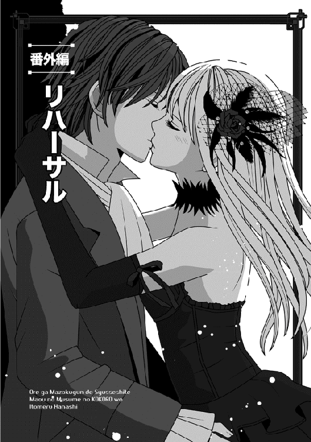

| 俺が魔族軍で出世して、魔王の（娘の）心を射止める話VI 俺が魔族軍で出世して、魔王の娘の心を射止める話 | |
| 遠野空 | |
| TOブックス (2016) | |
新魔王マヤの一存で、敵の砦へ進軍した魔族軍は、強硬突破に成功し、相手の軍を率いる謎の青年を取り押さえる。その男レージはナオヤと同じ日本人だった。だが、レージの仲間の一人に、二千年前にこの世界を席巻した暗黒の女神――ユメがいるとわかる。ナオヤはその計り知れない力を恐れ、戦いを避けようと奔走するが......。新たな覇権争いへ大陸が動き始める中、それぞれの思惑の行方は!? 魔王VS邪神！シリーズ最高潮の激闘に、マヤ様の恋心もスパーク!? 幸せすぎる男・ナオヤの成り上がりファンタジー！
Illustrated by Eri Kamijo
Designed by ansyyqdesign(yoko)
不平たらたらで歩き始めてまず俺が思ったのは、このダンジョンというか通路は、意外と快適である、ということだ。
どういう工夫がされているのか知らないが、どこからともなく外気が入ってきているような気がするんだな。
思ったほど、空気が澱んでいない。
それに、壁も床も石造りなので、もはや町の石畳の道を歩いているような錯覚さえするわけだ。それでいて、外と違って冷たい風に悩まされることもないと。
「でも、そんな風にいいことばかりじゃないと思うわよ」
人が安堵の思いで呟いた途端、サクラが台無しにしてくれた。
俺を振り向き、「そりゃあ、想像するよりはマシな通路に見えるでしょうけど、安全な外を歩くようなわけにはいかないわ。元々、抵抗軍が籠もってた場所でもあるからね」
なーんて、不吉なことを言う。
「具体的には、どういうところが不快なんだ？」
俺が文句をつけると、サクラは首を振った。
「いろいろあるけど、どうせそのうち──」
言いかけたちょうどその時だ。
田舎から出てきたばかりのお上りさんみたいに、きょろきょろしながら歩いていたエルザの足元で、なにかが「カチッ」と音を立てた。
そう大きい音でもなかったが、周囲が静かなので、俺を含めて全員に聞こえたと思う。
驚いたのは、音と同時にサクラが「伏せてっ」と大声で叫んだことである。
こういう時、俺はわけがわかってなくても、ひとまず従うことにしている。
だいたいホラー映画だって、人の忠告を無視する奴が、真っ先に死ぬのがセオリーだからな。
そこで、両隣にいたエルザとミュウの腰に手を回し、自分ごと無理に引き倒した。
「ちょっと！」
「マスターぁ」
むっとしたエルザの声と、嬉しそうなミュウの声が同時だった。
ついでに振り向いて俺達が伏せたのを見たローズも、慌てて同じく伏せる。
その直後に──ガコンッといびつな音がしたかと思うと、いきなり通路の左右からなにかが飛び出してきやがった。
それも、ものすごい数がっ。
両方の壁から飛ぶものだから、どっちも正面の壁に当たって跳ね返り、通路にボトボト落ちていく。飛来速度が速すぎて、よく見えんぞっ。
「マジか！ なんだこれっ」
頭上を嫌な風切り音を立てて通過する「なにか」に、俺は思わず叫ぶ。
有り得ないことに、俺の腕の中でミュウが素早く仰向けになり、さっと手を伸ばして、飛んで行くブツの一本を掴み取った。
「ナオヤさん、矢です！ 短い矢ですよう」
ほらほらっと俺に見せてくれた。
た、確かに矢だ......うん。ただし、羽の部分以外は全部金属みたいだけど。
あと、無茶しないでくれ、ミュウ。
いきなりのことだったんで、長い間頭上を矢が飛びまくった気がしたが、実際には十秒くらいだったはず。
矢の雨が止んだ後も、びびった俺達はまだまだ伏せたままたった。
立ち上がったサクラに「多分、もう大丈夫」と言われて、ようやく恐る恐る立つ始末である。
自分達の上はもちろん、通路の前後数メートルくらいにわたり、金属矢がバラバラと散乱していた。矢尻は見るからに尖ってて、ぼけっと歩いてたらハリネズミみたいな有様になったこと請け合いである。
「──じょ、冗談じゃないわよっ」
すっかり顔色が悪くなったエルザが叫んだ。
「ていうか、いつまで腰に手を回してるのっ」
「ご、ごめん」
言われるまで気付かず、俺は慌てて手を放した。ちょっと惜しかったな。
「あ......こっちこそ、ごめん。せっかく助けてくれたのに」
泣きそうな顔でエルザが頭を下げる。
よっぽど動揺したのか、ちょっと震えていた。
「まあ、こんな感じで──」
スカートの埃を払ったサクラが、ぼそっと言った。一人だけ、しれっとした顔である。
「たまにこんな罠が出てきたりするから、注意して」
「遅いわようっ」
珍しく、俺より先にエルザが喚いた。まあ......気持ちはわかる。
サクラの遅すぎる警告は、しかしそれなりの緊迫感を俺達にもたらしてくれた。
なにしろ、いつ何時、どんな罠が待ち構えているかわからないのだ。
試しに「どういう種類の罠がある？」と訊くと、サクラは「さあ？ わたしは仲間が敷設しているところを、ちらっと見ただけだから」なんて、無責任なことを吐かしやがる。
よくよく訊けば、どうもこの通路がバリバリ現役だった当時は、罠避けのパスみたいなのがあったらしい。魔力付与のかかったプレートみたいなやつで、それを持っていると、全然罠の心配なしに通れたのだとか。
「──だから、わたしはどんな罠があるかなんて、さして知らないの。一つ覚えてるのは、前に落とし天井みたいな仕掛けに、闇の軍勢の間抜けな兵士が引っかかって」
何事か思い出すように遠い目をする。
思い出す当時が、実は二千年以上前だって事実に、つい呆れる。
「......大量の石が降ってきて、頭から潰されるのは見たことあるわね。あれは、死体処理をする人が気の毒だったわ。木製の容器に入れて集めてたもの」
「おぃいいいいっ」
「もっと早く言ってください！」
俺とローズが同時に喚き、二人して天井を見上げちまったじゃないか。
天井はだいぶ上だが、見るからに重たい石が使われているので、落ちてきたら洒落にならないぞ。
飛び退くにしたって、限界あるし。
「発動スイッチがあるはずだから、せいぜい気をつけるしかないわね」
「スイッチって......さっきみたいにカチッて鳴るの？」
足元のアリを探すような目つきで、床石に注意を払っていたエルザが訊いた。ていうか、そんなスピードで歩いてたら、一キロ歩くのにどんだけかかるんだよ。
「そうとは限らないと思う......多分、余計なものを触ったりしても、まずいかもしれない」
「じゃなくて......その魔力付与のパスとか、持ってないのか？」
「今のわたしが持ってるはずないでしょ？ 考えて言って欲しいわ」
馬鹿じゃないの！ みたいな目で見られちまった。
切れ長の目をした美人だと、余計にダメージがきてたまらん。
「......そういうわけだから、注意はいるんだろうけど、下だけ見てても駄目っぽい感じだぞ」
俺はエルザに忠告してやったが、逆に睨まれた。
「だけど、のほほんと歩いていたら、また踏んじゃうかもしれないじゃない！」
「大丈夫です」
もう堂々と俺と腕を組んで歩いてるミュウが、笑顔で口を挟む。
「なにがあっても、ミュウがマスターを守ります」
俺が横目で見ると、微妙に言い直す。
「正確には、最優先はマスターで、ミュウの安全が二番目ですよ？」
可愛らしく首を傾げる。
これでいいですよねっ、と言いたそうに。これは......言葉に詰まるな。
「え、ええと......じゃあ、あたしはその、どれくらいの順番──」
ミュウに尋ねかけ、エルザは結局、言葉を呑み込んだ。
多分、返事が予想できたんだろうな。
それはいいけど、俺の右側に陣取っているミュウに対抗するように、エルザはヤケに俺の左側をキープするようになった。
身体をくっつける勢いなのを不思議に思って訊くと、「ナオヤに近いこの位置が、まだ一番マシそうじゃない！」と怒ったように言われた。
......は？ ああ、さっきみたいに俺がガードしろってことね。
少し考えて、ようやく得心した。
「その理屈だと、戦士将から離れてる私は、次に死んでしまうかもしれないじゃないですか！」
金髪のローズが振り向き、艶のある唇を尖らして文句つけてきた。おまけに、自分も俺のすぐ前まで下がってくるという......。
みんな、俺に期待しすぎだろ！
第一、前に立たれると、ローズのお尻見て歩いてるのも同然なんだけど、俺。
「即席ハーレムができて、よかったわね？」
先頭を歩くサクラが、また計ったようにイヤミを言う......いや、別にイヤミのつもりはないかもしれないけど。
心配事が多いせいか、俺は投げやりに言ってやった。
「なんなら、女子高生のサクラも入れてやろうか」
百パーセント冗談だし、そもそもハーレムなわけない。エルザもローズも、安全面を考えてるだけだしな。
ところが......なぜかサクラはむっとして、足を止めた。
「勘違いしてない？ わたしはまだ中三で、十五歳なんだけど？」
『えーーーーーーーっ！』
俺とエルザが二人して叫ぶ。
いや、前にローズが「自分より年下に見える」とか言ったことがあるけど、俺はまるっきり信じてなかったからな。
こんな大人っぽい美人が、まだ中学生だとー。
絶対、高三くらいだと思ってたぞ。
すかさず「嘘だろー」と俺は言いかけたが、その前にローズが叫んだ。
「戦士将、それより前をっ。誰かこっちへ来ます！」
「マヤ様かっ」
などと希望的観測を口走った俺だが......しかし、前からのたのた歩いてくる連中を見て、肩を落とした。
「なんだ、例のホムンクルス兵士だ」
入り口の大岩のところで整然と並んでドシドシ入っていった、例の黒い影のような兵士達である。ちゃんと防具らしき物を着けているし、平板な顔みたいなのもあるんだが......あくまでも魔力だか神力で創造された、連中だ。
......目が赤いのが不気味で嫌だけどな。
「あれは問題ないだろ。さっきだって、俺達なんか無視してたし」
何気なく言ったのに、サクラはいきなり抜刀した。
「どうした？」
「どうしたもなにも、今は地上の時とは事情が違うかもしれないでしょ」
どこら辺が違うんだよ、と答えかけた俺だったが──。
真っ黒戦士達二人がいきなり走り出したので、さすがに驚いた。
「え、なんで走る？」
「戦士将！」
ローズもまた、サクラに倣ったのか抜剣した。
「あの者達、どう見ても我らに襲いかかってくるように見えます」
そう言われても、俺はまだ疑っていたんだが、しかし次の瞬間、サクラとローズの言い分が正しいことがわかった。
こいつら近付くなり、すぐさま斬りつけてきたのだな！
「はあっ」
「人形なんかに！」
幸い、戦闘的な女性二人によって難なく迎え撃たれ、サクラの一撃を受け、ローズとも二〜三合を斬り合った後、敵は両方とも倒れ、黒い霧となって消えた。
しかし......胸を撫で下ろす間もなく、後続が来た。
今度は二名じゃなくて四名いて、しかもその後ろにもまだ他がいるような気配がある。途端に、サクラが走り出す。
「ついて来てっ」
今度は俺を含め、全員が異論なくサクラの後に続いた。
しかし......こいつのことだから、また突っ込むのかと思ったら、途中でいきなりふっと右へ曲がった。
「──に、逃げるのかっ」
予期してなかった俺は、かなり驚いた。
それでもたたらを踏んで止まり、慌ててサクラの後を追う。もちろん、他の連中もみんなついてきた。
「お、置いていかないでぇええっ」
......一番足の遅そうなエルザが、早速、泣き声を上げていたが。
前を走るサクラは、二度三度と連続して分岐点みたいなところを曲がり、奥へ奥へと入っていく。しばらくして後ろから追っ手の気配がしなくなった頃、ようやく立ち止まった。
「た、助かった......わ」
足がもつれそうになっていたエルザが呻いたが、他にローズも少し苦しそうだ。
「あいつら、なんで今回は襲ってきたんだ？ あと、どうせなら全部片付ければいいのに」
不思議に思って俺が訊くと、サクラはちらっと走ってきた方を見た後、教えてくれた。
「二人とか三人だけならともかく、後続が見えた場合は逃げた方がいいの。どういう仕組みか知らないけど、ユメのホムンクルスは一度集まってくると、それこそ後から後からどんどん集合してくるから」
「よ、呼んでるのか、仲間を？」
「それはわからないけど、前世で戦った経験則だから、間違いないわよ」
「ぬうう......じゃあ、地上で無視だったのに、今襲ってきたのは？」
「さあ？ 最初の命令が『地下へ入ったら、敵を見つけて殺せ』というものだったのかもね。ホムンクルスは忠実に、言われたままに命令を実行するから」
「なるほど、だから地下へ入るまではノープロブレムだったわけね」
俺は思わずため息をついた。
めんどくさいな、くそっ。今回、ホムンクルス連中は総スルーでいいと思ってたのに、アテが外れた感じだ。
「ねえ、ナオヤ」
話が終わった途端、エルザが俺の袖を引いた。
「なに？」
「あたし、お腹空いた」
「......俺に言われてもなぁ」
そう言いつつ、俺も腹が減ってんだけど。
だいたい、途中で起こされて、ずーーっとこんな感じだからな。
「ビバークポイントを見つけて、休憩しましょう」
サクラの提案に、全員が注目した。
「え、そんなのあるのっ」
たちまちエルザが飛びつく。
「床に座るだけじゃなくて、ちゃんとした休憩場所？」
「それは......場所によって微妙に違うわね」
「どういうことだよ？」
俺が尋ねると、サクラは珍しくきちんと説明してくれた。
本人曰く、どうやらビバークポイントとは、この迷宮内で否応なく長時間過ごす必要があった抵抗軍達が設けた、いわば地下の宿泊施設のようなものらしい。
ただし、俺達が泊まったホテルみたいな豪華な設備はあまり期待しては駄目で、大抵は雑魚寝はできてちょっとした水飲み場などがある場所なのだと。
「例外的に、指揮官クラスが泊まる専用のポイントなら......多少は設備もいいかもしれない。でも、数は少ないと思うわよ」
「どんな場所でも、肉の盾時代の俺が泊まってた部屋よりはマシな気がするなあ」
一応、周囲を確かめつつ歩き、俺は上の空で言ってやる。
「あの時なんか狭い部屋に六名で、俺以外の奴は全員がボンゴみたいな獣人族だったし。別に獣人族に差別心なんかないけど、いびきがオーケストラみたいで、慣れるまできつかった。体臭もすげーしな」
「そ、そこと比べれば、確かにどんな場所でも我慢できそうですね！」
目を丸くして振り向いた尻......じゃなくてローズが、気の毒そうに言ってくれた。
貴族のご息女らしい感想である。今や俺の部下ってのが信じられんが。
「でも......のんびり休憩なんかして、大丈夫でしょうか。その間に、敵が神器を見つけたりしませんか？」
「それはまず大丈夫だと思うわ」
これまた珍しく、サクラが保証してくれた。
「だって、隠し場所を開けるのに、ブレイブハートが発動コードを使う必要があるもの。まあ、それでもユメならなんとかしちゃうかもだけど」
「お話の前半でほっとしたのに、後半でご破算じゃない！」
腹が減っているのか、エルザの口調には棘があった。
「どうしても腹が減ったなら、背中に背負ってる背嚢に食料が入ってるだろ？」
「そうだけど......どうせなら、くつろぎながら食べたいわ」
「いずれにせよ、疲労度が高い人が多いようだから、休む必要はあるでしょう......ちょうど、見つけたわよ」
いきなりサクラが立ち止まり、俺達は顔を見合わせた。
なにもない普通の通路だったからだ。
しかしサクラは、壁の石を指差す。
「ほら、この部分だけ、他とちょっと色が違うでしょう？」
「......違うか？ まあ、言われてみれば、多少違うくらい？」
しかも、積まれた石の一つだけだ。
「はっきりわかったら、隠れて休めないじゃないの！ 侵入した敵に見つかるもの。ネオンの看板みたいなのが、あるわけないでしょ」
サクラは相変わらずの毒舌で言い返す。
「赤系の、よく見ればわかる程度の違いだけど、これが目印なの。......そして、そこを押せば」
説明しながら、手でぐっと壁を押す──するとなんと！
戸口くらいの大きさにわたって、壁が動いたじゃないかっ。
「おぉおお」
俺は感動して呻いた。
忍者屋敷の動く壁みたいだな。
早速、みんなでどやどやと中へ入ると、予想したよりは広い。
八畳くらいの広さはありそうだし、金属製の二段ベッドが二つ並んでいる。おまけに、隅には水飲み場みたいな場所があって、小さな女神像をかたどった場所から、チョロチョロ水が流れていた。
入り口を元通りに閉めたら、それで壁に魔法の明かりが灯るし、言うことないな。
トイレみたいな場所もあるようだし、入り口は施錠可能だし。
「床に直座りなのがアレだけど、それ以外は安心できるわねぇ」
と言いつつ、自分はちゃっかりベッドに駆け寄り、そこに座るエルザである。
「わ、私だってベッドに座りたいですっ」
すかさずローズも二段ベッドの上に駆け上がりと、いきなり争奪戦が始まっていた。
ただ、俺はみんなを無視して、ミュウを一番遠い隅っこに連れて行った。今こそ、この子を調べないと。そのために入ったようなもんだ。
たまたま隅に薄いクッションみたいなのが放り出してあったので、ミュウをそこに座らせてあげた。すっかり幼女化しているせいか、ミュウはお尻の下にクッションを敷き、両足は左右に放り出しと、女の子が私室でくつろぐような座り方をした。
白銀の髪が長いせいで、座った左右に綺麗な髪が散って、本気で人形みたいだ。
しかも、俺を見上げる碧眼が、いつも以上に澄んでて邪気が全然ない。もう全くない。多分、赤ちゃんが見つめる瞳と似ている。
「マスターぁ？」
あと、なぜかドキドキした表情に見える。
「ミュウ、ちょっとその......いろいろ見せてくれないか？」
点検というのも気が引け、俺は控えめに頼んでみた。
ミュウは、なぜか聞いた途端に頬がうっすらと紅潮し、ため息など洩らした。
「......みんな見てるのに、いいんですかぁ」
「──っ！ ナオヤがミュウを脱がそうとしてるっ」
「せ、戦士将......」
「女の子達の目が集中してるのに、部屋の隅で淫蕩なことするとはいい度胸ね」
エルザを筆頭に、女性三人がごちゃごちゃ言いやがったので、俺はそっちへ顔をしかめて見せた。
なにを寝言を言ってんのか......と思ってミュウに向き直ったら、ミュウが俯いてスーツの背中に手を伸ばそうとしていた。
「ミュウ、少し恥ずかしいです......」
「いや、脱がなくていいから！」
俺は慌てて止めた。
「え？ でもデータベース見たら、愛情表現の時は男女が肉体を使って──」
「いや、今はそういう用事じゃない、違う違う」
「やっぱり脱がすんじゃない？」
サクラがからかうように言うので、無視すりゃいいのに、また言い返してしまう。
「んな冗談言ってる場合じゃないだろっ。ミュウの調子──というか体調がおかしいの、みんなだって感じてるはずだぞ」
「マスターぁ、ミュウは絶好調ですよ〜」
ちょこんと座ったままのミュウがきょとんと首を傾げる。
「うんうん、でもほら、やっぱりちょっと様子は知りたいんだよ」
俺はそんなミュウの耳元にそっと囁きかけた。
前に教えてもらった短い管理コードであり、俺の声まで登録されているらしいので、これを囁きかけることによって、管理モードに入れるはずだ。
なにしろ、ミュウは人工培養された生体ベースとはいえ、頭脳の大半は人工頭脳......つまりＡＩなのだから。
事実、囁いた途端、ぴくんと小さく肩が動き、ミュウの表情から感情が抜けた。
「管理コード確認......チェック中......チェック終了。生体識別、及び声紋チェック完了しました......マスター本人のアクセスと認定。管理コードに入ります」
うおっ......いきなり声の調子がガラッと変わったぞ。
「──なお、対話式ですので、ご質問があればどうぞ」
「は、はあ」
同じ声質でも、感情が全部抜けただけで、こんなになるのか......もう本当に機械で合成された声にしか聞こえん。
俺が一人で衝撃受けている間に、ミュウ──というか、声が続ける。
「では規定に従い、ご命令をどうぞ......ただし、マスター変更命令はできません。この個体においては不可能です」
「え、なんで？」
いや、そんな変更する気は全然ないというか、そもそも自分が本当にマスター登録されていただけでも驚いたくらいなんで、つい訊いてしまった。
「本機に搭載されたプロトタイプＡＩが、独自判断でマスター登録を──マツウラ・ナオヤ──に変更した後、変更回路そのものを命令系統から遮断し、使用不可能にしています。従って、今後マスター登録変更をするなら、本機に搭載されたＡＩ自体を、別のシリーズと交換する必要が生じます」
「......う」
そういや、以前ミュウに聞いたところでは、ミュウは元々、最初のマスターの元へ納入されて数日で逃げたとかナントカ聞いたな。
そいつから俺に変えちゃったのか、ミュウが自分で。
「えー、それじゃ......今のマスターって俺で固定のまま？」
「強制変更をする場合、本機の正副二カ所の独立ＡＩは継続使用不可能となるので、破棄する必要があります。その場合は内蔵流体動力を切断し、規定の手順に従って頭部ＡＩと補助ＡＩの二カ所を新たな独立ＡＩと交換してください。──交換手順に従い、動力を切断しますか？」
「そうだな──じゃないっ」
うおっ。流暢な声のアナウンスに、危うく頷きそうになった。
危ないな、くそっ。
「いやいや、しませんしませんっ。今の登録でいいですっ。切っちゃ駄目です、絶対！ 切断はノーですからっ」
俺は焦りまくり、思わず敬語で答えてしまった。
このあたりで、「このトンチキは一体、ミュウになにをしているわけ？」という顔つきで、みんなこっちへ寄ってこようとした。
「ほ、本当にミュウって、機械的な人なのね」
エルザが感心したように言うのを聞いて、俺は慌ててハエを追うような手つきをしてやった。
「しっしっ、来るなって！ 今、ミュウを調べてるトコなんだからっ！」
「調べてるって......やっぱり、脱がすんですか？」
......ローズが大真面目に、しかも顔を赤くして訊きやがる。
こいつらは、それしか考えられんのかっ。
「いいから、寄って来ちゃ駄目だって。自分の立場になってみろよ。誰だって、あまり人に見られたくないことはあるだろ？」
俺がたしなめると、みんな顔を見合わせ、ようやく隅の方へ退き下がってくれた。なんだかんだいって、仲間にホントの意味での野次馬はいないのが救いだ。
多少は安心して、俺はなおも語りかけた。
「今のシステムを、全部再チェックできないかな？ ここしばらく態度が以前と違うし、どうも口調まで幼くなってるんだ。故障してないか知りたいんだけど」
人間に話しかけるような言い方だったが、ちゃんと答えはあった。
「ひとまず、基本機能に問題が生じるような故障はありません。ただ、ＡＩの方はさらに詳細な分析を必要とします。詳細な診断プログラムを実行しますか？」
「うん、それがよさそうだ。頼むよ」
「了解。しばらくお待ちください。診断プログラムを実行し、指摘された問題点を調べます」
そのまま、ミュウは固まってしまう。
瞳は開いているが、虚空を見つめたまま全然動かない。
感情がないと、本当に超高性能のビスクドールの瞳みたいに見えて、落ち着かない。これならまだ、元の年齢が下がったようなミュウの方がずっとマシだ。
優に数分くらいは過ぎた後、ようやくまたミュウが言った。
「診断プログラムのチェックを終了しました。ＡＩの感情及び倫理回路に、幾つかエラーが生じています。これが、一部の記憶障害と年齢設定が下がった原因となっています」
「ええと、意味がわからないけど」
「戦闘によるダメージを受けて自己修復中に、現在の問題が起きたと推測します。スリープ機能が働き、本機に搭載された自己修復プログラムが自動起動した結果、本来、弄る必要のない部分に手を加えてしまいました」
「と言いますと？」
うう......また敬語になってしまったじゃないか。
「つまり、普段から負荷がかかっていた感情回路と倫理回路に介入し、これ以上の機能障害を起こさないよう、一部の記憶を削除しました。これが遠因となり、ＡＩの感情回路に混乱を引き起こしたと見られます。出荷時に十六歳とされていた設定年齢が変更されたのも、このことが原因と推測されます」
「戦闘によるダメージ......ユメと戦った時か？ その後でずっと眠って自己修復中みたいな感じだったけど、あの時に問題が起きたってことだよな。年齢が下がったように思えたのも、偶然じゃない？ でも、まだ今一つ意味が」
「早い話、ナオヤが原因でしょう」
部屋の隅に立っていたはずなのに、相変わらず地獄耳のサクラが口を挟んだ。
「えっ」
俺が眉をひそめて振り返ると、ため息をついて言う。
「言っておくけど、わたしは部外者に過ぎないから、これは推測よ。でも、見ている限りじゃ、その子はナオヤが好きみたいじゃない？ なのに、ナオヤにはマヤって子がいる（呼び捨てかよ！）んでしょう。混乱してるというなら、それが原因じゃない？」
サクラが言い聞かせるように俺を見る。
「本当にその子が超高性能のマシンなら、なおさらよ。ただでさえＡＩは矛盾を嫌うだろうに、好きなのにままならない立場でいる自分──これがよくなかったんじゃないの？ 負荷っていうのは、おそらくそのことを指すのよ」
「なるほどぉ」
エルザまで納得した顔で何度も頷いた。
「辛いから、そういう記憶に触れないように消しちゃって、ついでに無邪気にものを考えられる年齢まで退行しちゃったのね。ミュウは、ナオヤとダークロードの関係に、普段からもやもやしてたものねぇ。ナオヤのいないところで、よく思い詰めた顔していたし」
「......えっ」
俺はかなりショックを受けて、エルザを呆然と見返す。
いや、ミュウにいろいろ不自由をかけていたことはわかっているが......マヤ様と俺の関係については、もうミュウの中で決着していたのかと思ってたんだ。
「ぬうう......俺の......せいか」
頭を抱える俺に、ミュウの機械声が冷静に宣告した。
「出荷時の年齢設定に戻して記憶を回復させると、おそらくまた同じ負荷がかかり、深刻なエラーをもたらす危険性があります。それでも戻しますか？」
この質問に対して、多分俺は優に五分は悩んだ気がする。
正直なところをぶちまければ、誰かのアドバイスが欲しかったほどだ。
しかし......エルザ達にだって本当の意味での正解なんかわからないだろうし、管理モードの無機質な声に訊いたって、もちろんわかるわけない。
危険性は最初から提示してるのだから、それが答えということだろう。
最後は俺が決めるしかないわけで──考えた末に俺は結局、無理に元に戻すことを断念した。よく言えば「いきなりこうなったんだから、そのうちまた自然と戻るかも」という可能性に期待したわけで、悪く言えば、ミュウを永遠に失うことを恐れたのである。
当たり前だが、人間より遥かに頑丈にできているミュウだって、不調を訴える時はあるし、身体を壊す（機械的な意味で壊れる）ことはある。
歩けないとか話せないとか、そういう致命的な不調じゃないことを喜ぶしかないのかもしれない。
一つほっとしたのは、管理モードから抜けて再起動を命じると、たちまち無機質な声はどこかに消えてしまい、元の優しい声に戻ったことだ。
「マスター！ ミュウはどうでしたか〜」
少し心配そうに小首を傾げるミュウに、俺は答えてやった。
「いや、なにも心配なかったよ。ミュウは絶好調だった！」と。
しばらく上目遣いに俺を見ていたミュウだが、笑顔で頷いてやると、ようやく安心したように笑った。
「よかったー。自分でも、特に異常があるとは思わなかったけれど、これでミュウも安心しましたぁ」
「うんうん、そうだね」
ニコニコと腕組みしてくるミュウの頭を、俺は優しく撫でてあげた。
「──あのぉ」
しんと見守っていた女性陣のうち、エルザが恐る恐る尋ねた。
「結局、今のミュウちゃんって、年齢はいくつなの？」
俺に対する質問らしかったが、ミュウが聞きつけて俺の顔を見た。
「教えてあげて、いいですか？」
「いや」
俺はきっぱりと首を振る。
知りたくないというか......そもそも実年齢で言えば、本当はミュウってまだ生まれて二年くらいしか経ってないのはわかってるからな。
なにせ、初対面の時で製造後一年未満とかの話だったし。
「俺がわかってりゃいいよ」
「そうですね！」
嬉しそうにミュウが白い歯を見せる......ていうか、俺もＡＩ内部の設定年齢が今いくつになってるのかなんて、知らないけどな。
以前みたいに十六歳じゃないのは確かだろう。
「なによう、教えてくれたっていいのに、ケチ〜」
ぶつぶつ言いながらエルザがそばに来て、なぜか俺にリンゴを一つくれた。
「......なんだよ、これ？」
「なんだか落ち込んでるみたいだから、元気出しなさいよという意味」
エルザがそっぽを向きつつ言う。
「二人で分けて食べなさい。今後はどうせ、保存食しかなくなるんだから」
「そ、そうか......そりゃありがとう」
言われた通り、ミュウと分け合って食べた。
ちょっと酸っぱい味がした。
ほとんど食事だけささっと済ませて、俺達は再び外に出た。
少し休んだことで一番消耗していたエルザもだいぶ元気を回復していて、「今なら、前衛だって務められる気がするわ〜」などと脳天気なことを言い放ち、本当に先頭切って歩き出したほどだ。
「危ないですよっ」
むしろ年下のローズが心配そうに声をかけて、エルザの横に並んでいた。
「二人で前衛やってくれるなら、別にそれでもいいな。楽だし」
冗談交じりで俺が言うと、サクラが横目で見た。
「本気じゃないでしょうね？ まだ少し、この地下通路を甘く見て──」
言いかけ、そこで前を見て眉を上げ、「止まって！」といきなり声をかけた。
「え？」
「はい？」
二人して振り返りかけたところで、いきなりエルザ達の足元が崩れた。
畳数枚分くらいの広さで、ごそっと通路が抜けたのだ──ガラガラと音を立てて。
「きゃあああっ」
「ひっ!?」
エルザの全力の絶叫と、そしてローズの半ば引きつった声......その二重奏が消えないうちに、俺はなにも考えずに飛びつき、左右それぞれの手で、彼女達の腕を掴んでいた。
まさにギリギリだったし、タイミング的に、俺まで引きずられ、落ちそうになった！
さすがに今の俺なら、女の子二人を引き上げるくらいの筋力はあるんだが、下が滑りやすい板石だったので、腹這いになった姿勢だと踏ん張りが効かないのである。
一応サクラも、直前で俺を止めようとはしてくれたのだが、それよりミュウの方が遥かに速かった。
「マスター！」
エルザとローズが落ちそうになった時はきょとんとしていた癖に、俺の時は電光石火で反応して、一瞬前の俺みたいに全力で飛びついて止めてくれた。
「ナ、ナイス、ミュウ！」
今度は俺が引きつった声で言った。
なにしろ、腹這いになった姿勢で穴の中を見ると、白刃が林立しているのがモロ見えだったので。落ちたら、アレで身体にザクザク穴が開いちまう。
俺の顔色を見て、ほっとしかけたエルザがうっかり下を見て、「いやぁああああっ」とまた悲鳴を上げた。
暴れようとしたので、慌てて止めたほどだ。
「馬鹿、よせエルザっ。ローズ、彼女を押さえててくれ！」
「は、はいっ」
辛うじてまだ冷静さを失っていなかったローズが、焦ってエルザを抱きかかえた。
「落ち着きましょうっ」
「ご、ごめんっ」
「よし......それでいい、エルザ。ミュウ、そっと引き上げてくれ」
今頃になって、背中に密着したミュウの身体を意識しつつ、俺はなんとか冷静な声を出す。
「はぁい......なにがあっても、マスターだけは助けますから！」
気合いの入った声に、女性二人が喚いた。
「できれば我々も！」
「あたし達もようっ」
「大丈夫だ、俺が手を離さない限り、落ちないって。落ち着け、なっ」
暗に、「今ここで暴れたら死ぬから！ 絶対死ぬから!!」と目で訴え、ようやく場が静かになった。もちろん、こういう時のミュウのパワーは凄まじく、トラックにロープ括り付けて引っ張り上げるような頼もしさがあった。
全然呼吸も乱さず、たちまち俺を含めた三名を穴の縁に上げてしまう。
「た、助かったぁ」
「い、命拾いしましたね」
半泣きでへたり込んだエルザに、いつも冷静なローズまで四つん這いのまま喘いでいる。それでも、ローズはさすがに礼儀正しく、その姿勢のままで俺に低頭してくれた。
「ありがとうございます、戦士将。ご恩はいつか必ず」
「い、いや......まあ、みんな無事で良かった」
俺はほっとして、自分もようやく立ち上がる。
深呼吸などしてテンションを整えている最中、ふと気付いた。
「あれ......サクラは？」
何気なくそこらを見回す。
しかし......サクラの姿はどこにもない。ダンジョンの前後は、きっぱりと無人である。
「ま、マジか！」
俺は思わず呻いた。
まさか、逃げたのかあいつっ。
「ミュウ、サクラはっ」
思い出して、息せき切ってミュウに訊くと、彼女は可愛らしく小首を傾げた。
「あの人なら、ミュウがマスターに飛びついた直後、耳元に『一人の方が早そうだから、先に行くわね』って、平板な声で言伝して、走り去りましたぁ〜」
「えぇえええええっ」
「見捨てられたぁ！」
「なんということでしょうっ」
俺自身はもちろん、エルザとローズが一斉に声を上げる。
「お、落ち着け、いいか、落ち着けけけっ」
やたらと手を振る俺が、一番うろたえていた。舌が回ってないし！
しかし、誰が俺を責められよう。なにしろ、サクラはユメ攻略のヒントを握る人物なのだ。四つあるという神器の場所だって、本当はちゃんと知っているかもしれないし、それに神器を入手した後の使い方だって、あいつがいないとわからない。
だが俺は、そういうネガティブな発言はせず、引きつった笑顔で言った。
パニクっても、いいことはないからな。
「まあほら、先に行くって言うんだから、本当に先に行ったんだろ。なら、後から追いかければいいさ」
「えぇーーーっ」
エルザが実に疑い深そうに、しんねりと俺を見た。
「あたし達がひどい目に遭いかけてるタイミングで、助けもせずに、計ったように先に行くかしら？ だいたい、待ち合わせ場所だって決めてないのに」
「確かに、大いに怪しいですね！」
うう......ローズまできっぱりと断言しやがるしな。
「あと、いま思ったのですが」
さらにローズは、ひそひそと主婦の井戸端会議みたいな声を出す。
「これって元々、最初から我々を嵌めるための計画という可能性はありませんか？」
一人で戦慄している俺に、追い打ちをかけてくれた。
「最初から神器なんてないか、あっても場所すら本当にわからなくて、ただ単に戦士将と我々をこのダンジョンに誘き寄せ、あのユメにぶつけるつもりだったのでは？」
「うわぁ」
エルザが早速本気にして、頭を抱えた。
「それだと、もうモロに死地に入ってるじゃなーい！」
「い、いやいや......そんな」
口をパクパク動かしている俺の横で、ローズは深刻そうに腕を組む。
「考えてみたら、元々あの人は敵側の人間でしたものね。ちょうどユメがこの場に来ていることも、よくよく考えれば怪しく思えます」
「い、いやいやっ。そんな馬鹿な！ そんな殺生な!!」
俺はあたふたとミュウを見やり、肩に手を置いた。
さっきから二人の会話に参加せず、ニコニコと俺を見たままだが、この際は優秀なミュウが頼りだ。
「な、なあミュウ」
「はいっ」
元気のいい返事に少しだけ安心して、俺はゆっくりと尋ねた。
「ミュウに素早く伝言残した時のサクラ、本当のことを言ってたかい？ ミュウなら、真偽がわかるだろ？」
俺の渾身の質問に、ミュウの笑顔が消え、申し訳なさそうに眉が下がった。
「な、なに？」
「ごめんなさい、マスター」
ミュウが両手を合わせて俺を拝む......上目遣いに。
「ミュウはその時、マスターの方ばかり注意してて、センサーを作動させてませんでしたぁ」
「なんですと！」
さすがの俺も、今度こそ頭を抱えた。
これは......かなり笑えない事態かも。
俺とエルザとローズは、三人揃って深刻なため息を洩らす羽目になった。
まだ暗い顔を見せていないのは、俺の顔を見てニコニコしているミュウのみである。
「あぁ、もう駄目、もぉおお駄目......みんなとはぐれるし、敵の情報源には逃げられるし、薄暗いダンジョンで置き去りだし、持ってきた食事はまずいしっ」
「く、暗いポイントばかりを列挙すんなって！」
あと、最後は関係ない！
一緒に落ち込んでいた俺は、ようやく重い身体を持ち上げた。
それまでは、脱力してしゃがみ込んでいたのである。
「とにかくっ。ここで悲観に暮れてても、そのうち敵が来てやられるだけだ。とっとと移動しよう」
「い、一時撤退......とか？」
希望に満ちた瞳でエルザが見てくれた。
「んなわけないだろっ。魔界の支配者である、マヤ様を置き去りにして帰ってみろっ。帝都マヤに戻ってから、全員、これモンだぞ！」
俺は首筋で、シャッと指を真横に引いて見せた。
「うっ」
さすがに弱気なエルザも、膨れっ面で黙り込んだ。
魔界の法が厳しいことを知るだけに、俺の言葉が脅しじゃないのを、よくわかっているのだ。
「......というか、戦士将が生き残っていれば、あのお方も寛大な処分を考えてくださるでしょうけど、もしも私達だけが生き残れば、後の運命は決まったも同然ですね」
脅す気はないのかもしれないが、ローズが悲観的なことを述べた。
「や、やめてよ......どんどん怖くなるじゃない」
エルザが気弱に自分の身体を抱き締める。
俺はあえて、気丈に声をかけた。
「大丈夫だって。俺はそう簡単に殺られないし、それにサクラだって、戻る方へ向かってないのは確かなんだ。ということは、やっぱりそのうち会えるってことさ。暗い予想はやめやめっ」
「でも、回り道して戻ったのかも」
早速、エルザが悲観的なことを言ってくれたが、俺はもう無視して歩き始めた。
するとミュウがぴったり右横につけ、腕を組んで嬉しそうに言ってくれた。
「マスター、センサーで思い出したですけど、ミュウのセンサーを最大限活用すれば、多少は接近してきた敵はわかると思いますよ〜」
「それだ！」
俺は今更のように気付いて足を止めた。
そういや、今のミュウは本調子じゃないんである。
普通の状態なら当然、今までも気を利かせて先に調べ、警告してくれたんじゃないだろうか。
今のミュウは俺の顔を見ることばかりに注意がいってるので、他のことがおろそかになっているのだ。きっとそうだ！
「内蔵センサーでわかる限りは教えて。気付いたことはなんでもいいからっ」
というわけで、遅まきながら頼んでおいた。
「はいっ。マスターがそう言うなら！」
元気すぎる返事をしてくれて、俺はちょっとほっとした。この分なら、今後は多少、マシな道中になるかも。
「ちょっと、なんでささっと左側を確保するのっ」
エルザの不満そうな声がして、俺は我に返った。
見れば、足を止めたこの隙に、ローズがさりげなく俺のすぐ左についていた......それも、ミュウとタメを張るくらいにぴったりと。
「さ、さっきはエルザさんが左をとってたじゃないですかー。だから、今度は私と交代ということです」
「こ、交代って......仮にも魔族軍の軍人が、『ナオヤから離れていたら死にそうだから、くっつくわ！』なんてことで、いいと思ってんのおっ」
「エルザさんだって、同じ性根で今、左側をとろうとしたじゃないですかっ。だいたい、魔族軍の軍人なのは、エルザさんも同じはずっ」
「ああもう、やめえっ」
俺は呆れて止めた。
......しょうもない喧嘩すんなよ......それに、俺のそばにいたって、生存確率高くなるとは限らんのに。
「俺だって手探りで進んでるようなモンだし、命の保証なんかできないよっ。そりゃ、さっきみたいに間に合うようなら、助けようと努力はするけどさー」
「それが大事よっ。大事なのはそこよ！」
エルザが、わざわざ同じ内容で連呼する。
珍しく、懸命な面持ちだった。
「ミュウちゃんはあたし達のことなんか、道端の馬糞ほどにも注意払ってないんだから、どうせならナオヤに気にかけてて欲しいわよ」
「私もです！」
このポジションは譲りませんとばかりに、ローズが左からぐいぐい身体を押しつける。だから、胸が当たるからやめろというのに。
意識するじゃないか！
見た目はハーレムっぽいけど、内情は単なる他力本願全開という......実にアレな光景である。
一応ミュウが、「全く注意していないってことはありませんよー。基本的にマスターしか見てませんけど、エルザさん達も後で気付きますから、ツーテンポ遅れくらいで助けに入りますね」などとフレンドリーに言ってくれた。
もちろん、全くフォローになっていない。
「ツーテンポどころか、ワンテンポ遅かったらもう死んじゃうわよっ」
早速、エルザが言い返したほどだ。
「ああ、わかったわかった。エルザは前を歩けばいいさ。俺のすぐ前なら、なんかあっても間に合うよ、十分手が届く」
「ホント！」
エルザはやや気を取り直し、俺の前に立った......のはいいけど、押しくらマンジュウしてんじゃないぞ。くっつくなって。
「歩きにくいから、もう少し離れて」
「わ、わかったわよう」
エルザが不安そうにのたまい、ようやく再び前進が始まった。それはいいが、ちょっと進んだらまたすぐ振り向いて「あんまりお尻見ないでねっ」ときっつい声で言ってくれたのがたまらん。
「俺は超能力者じゃないぞっ。ローブ羽織ってんのに、大したモンは見えるかっ」
「なによう、その言い方っ」
「いいから、進むのっ」
俺は強く言い放ち、断固として歩き出す。
膨れっ面の女性二人と笑顔のミュウが、ようやく進み始めた。
しかしである──よちよち歩きのペンギンみたいに、ひどくびびった歩き方で進む俺達だが、今度はだいぶ楽になっちまった。
というのも、自分の能力を活用することに思い至ったミュウが、すかさず的確なフォローをしてくれるようになったからだ。
「あ、次の角を曲がると、まずいかもですぅ。熱源センサーに反応でました。複数なので、敵だと思います」とか、「あ、その先は多分、陥穽──つまり、落とし穴みたいな罠がありますよ」などと、ジャンジャン先読みしてくれるようになったのだ。
どうも罠の類いは、スイッチっぽいものを床石とか壁に先んじて見つけることで、問答無用で回避してしまうらしい。
その正確さは絶大で、ミュウが警告した箇所には、必ずヤバい罠があったし、「むこうから誰か来ます〜」と言うと、しばらくして絶対にホムンクルス兵士とか傭兵に出くわすのである。
なんという有能さ。これだけ美人で性格良くてスタイルもいいのに、さらにここまで有能とは！ 天使じゃないのか、この子っ。
だいぶ心が弱っていた俺は、思わず感激して涙ぐみそうになったほどだが......しかしながら、その有能さ故に、俺達はさらなる選択を迫られることになったのである。
その発見は、実は全くの偶然だった。
敵は基本的に回避とはいえ、避けられない場合も出てくる。
何時間かして、俺達が何度目かの傭兵チームに出くわし、それぞれ倒すか眠らせるかした時、問題は起きた。
体力の乏しいエルザが例によってヘバってしまい、「もう疲れたわぁ〜、足が震えてるぅ〜、ＭＰもない〜。どこかで休みたいわあっ」と完璧な膨れっ面で主張したのだ。
俺としては、マヤ様以下の仲間を早く探し出すか、サクラを見つけるまでは苦しくても進みたいんだが、目に見えてエルザが遅れるようになってしまい、そうも言ってられなくなってしまった。
エルザの不満はいつものことだが、疲れているのも事実のようだ。
というか、個人差はあれど、それはみんな同じだった。俺だって、できればどっかで大の字になって休みたいくらいだ。
そこで、やむなくミュウに頼んだ。
「ごめん。また休憩が必要らしい。サクラが見つけた休憩ポイントみたいなの、今回も見つけてくれないか？ ほら、色違いの石材ブロックみたいな印のあるところ」
「はぁい！」
一人だけ元気度マックスのミュウは、すかさずきょろきょろと通路を見渡し、幾らも進まないうちにすぐに問題の場所を見つけてくれた。
「あ、ここかもしれません！」
さすがっと皆でヨイショしたのだが......ただ、この時のミュウはなぜか可愛らしく小首を傾げていた。
「どうしたの、ミュウ？」
「ええと......この向こうにさっきみたいな部屋があるのは確実なんですが......その隣にも、奇妙な空間があるんです......今、ざっと壁の密度を測定していて、偶然見つけました」
「むう？」
俺達は顔を見合わせたが、別の場所を探すような気力もないし、とにかく入ってみることにした。
「まあいいさ。とにかく中へ入ろう」
決断し、また色違いの石材に触れ、問題の隠し部屋を開けた。
開けた途端、夜を迎えた吸血鬼みたいな勢いでエルザがダッシュを決め、例によって隅に置かれたベッドへ直行する。
男の俺の目もあるというのに、即座に、思いっきり奔放な姿勢で横になっていた。
「あぁ、やっと横になれた......外の通路だと、ろくに休めないもの。これじゃ、体力も持たないわよう」
「言えてますね......」
いつもは厳格なローズも、諸手を下げて賛成し、水飲み場で一息ついていた。
俺は彼女達の苦情は聞こえない振りをして、ミュウに水を向けた。
さすがにまだ、そこまで疲れ切っていないしな。
「それで、隠し部屋って？」
「ええと......ちょっと待ってください......多分、どこか開く仕掛けが......う〜ん」
ミュウは文字通り、奥の壁を見通すような目つきでじんわりと見つめ、しばらくして呟いた。
「あ、ここかもしれません......」
声にすると同時に、胸の辺りの高さにある石材ブロックに触れた。
すると──そのブロックが奥に引っ込み、ギギギィッと壁の一部が開いたではないか。
「おおっ」
ミュウの背中に隠れつつ、俺は思わず声を洩らす。
警戒はしたものの、特になにかが飛び出してくる様子はなく、代わりにそこの壁にあった魔法の明かりが自動で点灯する。
すぐに、ぼんやりと殺風景な空間を照らし出した。
「あれ......何もない......いや、待て」
その謎の部屋から、三方向へ向けて細い道が分岐していることに気付き、俺は密かに息を呑む。
「もしかしてこれ、隠し部屋ならぬ、隠し通路か!?」
「どういうことでしょう？」
水飲み場から急いで駆けつけたローズが、俺に訊く。
いや、俺だって知るわけないんだが、しかし他に考えられないだろう。
「このダンジョンの設計者の身になって考えてみればわかるよ。つまり、ダンジョンの内側に、監視用の別のダンジョンを隠したってことかなと。そういうのがあれば、侵入者に見つからないようにこそっと巡回できるし、いち早く警報を出せるじゃないか」
「──！ それは確かにっ」
コトの重大さに気付いたローズは、にわかに碧眼を輝かせた。
「つまり、上手くすれば、敵に気付かれずにダークロードの元へ接近できるかもしれない──そういうことですね！」
「そうそう。もちろん、この三方向に分かれた通路が、どこまで続いているかによるけどね」
言いつつ、その三つの通路を見比べたが、魔法の明かりが照らす通路はやたらと狭く、そしてかなり先の方まで続いているらしい。
奥がどうなっているか、全く見えないのだ。
「こりゃ、いちいち道を探るのも大変だから、三手に分かれて探った方が効率がいいだろうな」
俺は腕組みして通路を睨んだ。
どう考えても、三方向に分かれた道を一つずつ全員で確かめるのは、効率が悪い。こういう時こそ、人数を分けるべきだろう。
「ミュウはマスターと一緒です！」
「では私は戦士将とっ」
俺がまだなにも言わないうちから、二人が連呼した。
「ああ、先に言われてしまってっ」
おまけに、ローズが悔しそうに唇を噛む。
ホント、一見、すげーモテてるように見えるのになあ......空しいぜ。
「とはいえ、今回のミュウは引きそうにないし、俺もミュウから目を離すのは心配だな」
「......ああ」
なぜかミュウが綺麗な瞳を潤ませ、俺に抱きついてきた。
イ、イキナリ、ナニスルンデスカ！
ミュウの香りとしなやかな身体の弾力を感じ、俺の思考は吹っ飛んだ。
「マスターの......ナオヤさんの愛情を感じます......嬉しい」
さりげなく、呼び方が戻ったしな。
「い、いやぁ」
──まあ、よい方にとってもらえるなら、それもアリかなと思ったのだが、俺はたちまち悲鳴を上げる羽目になった。
「て、いでででででっ。みゅ、ミュウ！ 力を加減してっ」
「──っ！ ごめんなさいっ」
焦ったミュウが慌てて身を離す。
「い、いいよ、いいよ」
愛想笑いを振りまきつつ、俺は冷や汗をかいた。
容姿は可憐な女の子だけど、ターミネーターが裸足で逃げ出すようなパワーの持ち主だからな......ホント、敵に回したくない子だよ。
「それよりナオヤ、今回はさすがにナオヤとミュウちゃんの組は駄目よ！」
いつの間に寄ってきたのか、エルザがいつになくきっぱりと言ってくれた。
「なんで？」
「なんでって......それぞれ別行動取った仲間を追跡できるのって、ミュウちゃんの謎の能力しかないじゃない。だったら、この子にはこの部屋に残ってもらって、いざという時に助けてもらわないと。この狭い通路で迷うかもだし！」
「むう」
珍しく説得力があるじゃないか。
確かにいざという時には、ミュウくらいしか分かれた俺達を追跡できない。
「だからっ」
俺が考え込んだのを見て、エルザはここぞとばかりに畳みかけた。
「ミュウちゃんはこの部屋でヘルプ要員として残り、ローズは単独で三方向のどれかの通路を探る。そして、あたしとナオヤは残りの道のどっちかに探索に行くわけよ！」
「ふむふむ......えっ」
「はあっ!?」
途中で俺とローズが、眉根を寄せてエルザを見た。
しかし、彼女は我関せずの姿勢で、しかも早口で俺達を睨みつけるように言う。
「なんたってあたしが一番死にやすいんだから、全力で守ってもらわないと困るものっ」
おぉ......この色気ねーちゃん、開き直って力一杯言いやがったぞ。
「却下ですよ、そんなの！ 当然じゃないですかっ」
ローズがガツンと言ったのはともかく、黙ったまま聞いていたミュウが、めちゃくちゃ膨れっ面になったのに驚いた。
普段、あんまりこんな顔、見せないからな。
「ナオヤさん、エルザさんをちょっとぶっていいですか！」
「いいわよ。時にはガツンといくのも必要だわ」
俺の代わりにローズがきっつい顔で頷いてしまう。
「なんでようっ」
エルザが半分逃げ腰で反論したものの、ミュウが動きかけたので、やむなく俺が割り込んだ。
「待って待って！」
エルザに詰め寄ろうとしたミュウの肩を押さえ、俺は慌てて言った。
まさかとは思うが、今のミュウはホントにエルザをどやしつけるかもしれない。危なっかしい。
「とにかく、エルザのセリフも前半は正しいんだ。確かに、俺達がなんらかの事情で迷うと、探しに来られるのはミュウくらいのもんだ」
実際、遥か南の砦からこの俺を捜し当てたもんな、ミュウは。
「そこで、ミュウはここに残ることとする。俺を含むあとの三人は、それぞれ三方向の道を進んで、探りを入れる。時間は......おおよそ一時間ってトコかな。なんかあったら、まずこの休憩所に戻ると」
「えぇえええええええっ」
超早口で言ってのけると、エルザが早速、でっかい金切り声を上げたが、俺は無視した。やっぱここは、効率優先だ。神器もだが、マヤ様が行方不明のままだし！
「これは、もう決定！」
俺以外は全員が不満そうだったが、とにかく押し切った。
「あと、時間わかるのはミュウだけなんで、一時間を大きくオーバーしたら、探しに来てくれ。俺達の方は......時計もないんで、体感時間でいいや。だいたい一時間くらい進んでみて、なにもなければ戻る。これで決まりだ！」
めちゃくちゃ膨れっ面の女性三名に申し渡した。
「あたしが通路の奥で傭兵とかに出会って怪我した挙げ句、押し倒されて貞操の危機に陥ったら、どうすんのようっ」
エルザが豊かな胸元を押さえ、据わった目つきで言う。
「魔法使いだろ？ あらかじめ敵の接近に気付いたら、後は後ろも振り返らずに逃げ帰っていいよ。悲鳴を上げたら、ミュウだって助けに来てくれるさ」
「......ミュウちゃんは、むしろこっそりナオヤの方へすっ飛んでいきそうですけど！」
「とにかく、これで決定だって！」
俺は無理に話を打ち切った。
いざ、謎の通路に入る寸前まで、揉めに揉めたが、俺は自分の決定を撤回しなかった。
やっぱり臣下の身としては、少しでも早めにマヤ様を見つける努力をしないとな。
だけど、外の通路を動き回ると、敵にガンガン遭遇するわけで、探すどころの騒ぎじゃない。
というわけで、俺にしてみればこの秘密の通路発見は、絶好の機会なんである。
......もちろん、本当に役立つかどうかは、これから調べるんだけど。
「一時間ですようっ。一時間を一ピコ秒でも過ぎたら、すぐに捜しに行きますからあっ」
ミュウが、俺の服の袖を握って、しきりに訴える。
ていうか、一ピコ秒ってなんだ!? 全然、イメージわかんぞ。
あと、探索に出るのは別に俺だけじゃないので、当然ながら、後の二人は不満たらたらだった。
「ミュウちゃん、性格変わってから、本音がダダ洩れじゃない！」
ほら、早速エルザが文句つけた。
「ああ、あたしは誰にも心配されないまま、狭い通路の奥で傭兵に乱暴された挙げ句、刻まれちゃうんだわあっ」
「......ひ、一人はやっぱり怖いものですね」
エルザがぴーぴー言うのはいつものことだが、ローズまで不安そうなのが意外だった。この人、元々はかなりイケイケの人だったはずなのにな。
砦で捕まって、危うく男共にナニされそうになってから、だいぶ戦闘的な部分が引っ込んだらしい。いいことだとは思うが。
「さっき言った通り、なにか危険を感じたら即、戻っていいよ。で、誰が先に戻っても、ミュウと一緒に後の者が戻るまで待っててくれ」
「でも一時間経ったらっ──」
「わかってる、わかってるよ」
まだ袖を握ったままのミュウを、俺はそっと押しやる。
いつまでも出発できんし。
「大丈夫！ 案外、すぐに行き止まりかもしれないしさ。留守番は長くならないから」
「本当に......気をつけて」
「う、うん」
衝動的に、涙目のミュウを引き寄せ、一瞬だけだけど抱き締めてしまった。
いや、真剣に心配してくれるミュウに、思わず感激しちまったんで......なにしろ、かつての俺ときたら、産業廃棄物扱いだったからなあ。
「あ......マスター......ナオヤさん」
とはいえ、色っぽい吐息をついて俺を見上げるミュウを見て、ちょっと後悔したのも事実だ。だいたいこの子のスーツは、抱き締めると胸の感触がモロに伝わってヤバい。いろんな意味で。
「あたしはっ!?」
おまけに、エルザが両手を腰に当てて睨む。
「ミュウちゃんだけなの、心配は」
「し、心配してるさ、みんなっ。だけど、俺の性格で気軽に抱きつけるわけないだろっ。気持ちだけにしてくれ。とにかくっ、出発！」
まだローズがなにか言いかけていたが、俺はさっさと奥へ歩き出した。
頭を切り換えないと......ミュウの胸の感触を思い出してる場合じゃないって。
○────○
しかし......いざ歩き出すと、この通路は予想以上に狭苦しくて、窮屈な場所だった。
ダンジョンのメイン通路は三人が横並びできたほどなのに、ここは俺一人がようやく通れるくらいの広さしかないし、天井も高くない。
ダンジョン内部の見張り用だと思った俺の推測は、多分、正しい気がする......あるいは、緊急脱出用か。ただ、万一なにかの罠だったら、この狭苦しさからして自由に動けないから、身軽な俺だってヤバい。
なんて......歩き始めた途端、その危険性に気付いて戦慄した。
今更、遅いけどな。
ま、まあ......まさかこんなところまで、落とし穴や自動矢攻撃はないだろう......ないといいな、ないと願う。
ちょびっと弱気になったところで、微かな声がして、俺は飛び上がりそうになった。
慌ただしく前後を見たが、特に誰もいない。
しかし、ぼんやり光る通路の壁に、一カ所、赤い丸印があるのを見つけた。
「......なんだ？」
そばに寄ると、赤い○の真ん中に、小さな穴がある。
これは、もしかすると！
即、穴の向こうを覗いて見ると、案の定だった。
そこから、さっきまで歩いていたダンジョンの通路が見える！ やっぱりここ、監視用の裏通路だったっ。
思わずガッツポーズ取りそうになったね。
でもって、さっき聞こえた声は、むさ苦しい格好の傭兵二人組だったらしい。
ちょうど俺が見ている覗き穴の前を、二人でキョロキョロしながら通っていった。
穴は小さいんで姿を追うのは無理だが、声のみはしばらく聞こえていたな......まあ、おおむね愚痴ばかりだったが。
しかし、聞き捨てならない声が最後にした。
『ったく、最後の五人だってのに、なかなか──』
聞こえたのはそのくらいだが......最後だぁ？ おい......最後ってなんだ？
嫌な予感がして、その場でしばし考えてみた......五人......五人っていうのは──うおっ。
いきなり思い当たり、俺は冷や汗をかいた。
というのも、五人っていうのは、俺達を置いて行く前のサクラを含めた人数と、ばっちり一致するじゃないか！
つまり、俺とミュウとエルザとローズ、それにサクラだ。
もしかして今のセリフって......俺達が最後って意味じゃないのか。
急いで歩みを再開しながら、俺は自然と胸の鼓動が激しくなってきた。心配で、じっとしていられない。
予想通りそういう意味なら、もうダンジョン内に健在な味方はいなくて、残ってるのは俺達だけってことになる。
「な、ないない......絶対ない！」
危うく血まみれのマヤ様を想像しかけ、俺は慌てて首を振った。
余計なことは考えるな......もちろん、あんなタフな人が簡単に殺られるわけない。怪我だってするもんか、しないったらしないんだ！ もちろん、他のみんなだって無事に決まってるっ。
自分に言い聞かせながら、俺は複雑に入り組んだ通路をどんどん歩いて行く。
途中、分岐点も幾つかあったんだが、上の空で適当に選んだ。
当然......これは大きな間違いだった。
俺はあのお方の心配をする前に、まず自分が注意するべきだったんだ。
ふと気付いた時には、俺はこの狭苦しい通路の中で、迷っていた。
慌てて一番近い分岐の場所まで戻ろうとしたが、その方角すらわからない。
分岐が多い上に、視界に入るのが石壁と石床ばかりで単調すぎるので、方向感覚が狂わされたらしい......まあ、単に俺が方向音痴なのかもしれんが。
やむなく、ひとまずまたどこかダンジョンを覗けるような場所を見つけようとウロウロし、歩くこと十分くらい、ようやく石壁に、さっきみたいな赤い丸印を見つけた。
よしよし、せめてダンジョンの状況くらいは確認したいからな。
早速、そこから外を覗くと──
（うおうっ!?）
危うく大声を出しそうになり、俺は慌てて自分の口を手で塞いだ。
というのも......今度覗いた場所はさっきみたいな外のダンジョンではなく、広々とした吹き抜けの空間で、しかも関係者がほぼ全員いたからだ！
関係者というのは無論、マヤ様やレイバーグ、それにネージュである。
つ、捕まってる......みんな、思いっきり捕まってやんの！
密かに、はぐれた仲間の救援をアテにしていた他力本願信者の俺は、アテが外れて頭を抱えた。
もうホント、がっかりだよっ。
彼らは、大きな円形の......サークルみたいな中にいて、マヤ様以外は倒れている。
この派手な模様と文字が入ったサークルは、おそらく閉じ込めておくための魔法陣の類いだろう。
その証拠に、サークル内には薄赤い光が満ちていて、岩盤層の天井までその光が届いているのだ。おそらく、あの光の外には出られないってことだろうな。
幸い、倒れている仲間も死んでいるようには見えない......胸が上下しているし、単に気絶しているだけのはずだ。
そんな中、マヤ様一人だけは健在で、腰に手を当ててサークルの外を睨みつけていた。
そう、この広間みたいな空間には、敵もいるんである。それも、例のユメと......それに、あのアラン・リムスキーだっけ？ とにかくそいつが！
「それで──ええと、アランだったかしら？ 今の話は本当なの？」
会話の途中だったらしく、一人だけ偉そうに座っているユメが、不意に尋ねた。
......ていうか、この黒いドレスの女の子、なんとでっかいライオンに似た獣......おそらく、魔獣の上に腰掛けている。
自分が生み出した一種のホムンクルスかもしれんが、魔獣の方は大人しくしていて、一切動かない。こんなのを椅子役に使うとは。
「はい、本当です、ユメ様」
裏切り者のアランが、恭しく頭を下げる。
「僕があの森で、逃げるサクラや敵のナオヤ達を追いかけていた時、確かに司令官のレージ様を目撃しました。あのお方は血まみれで、ナオヤに担がれていましたね」
それを聞いて、俺はまたしても「げっ」と声に出しそうになった。
血まみれのレージを肩に担いだ俺だぁ？ なに、その派手な濡れ衣っ。
俺は狭い通路の中で無駄に憤慨したが、マヤ様も魔法陣の内側から怒鳴ってくれた。
「大嘘をつくな、アラン！ 我々とナオヤ達があのサクラと森で遭遇したのは本当だが、レージはナオヤによって解放されたわっ。貴様、なにを考えてそのような嘘をつく！」
そうだそうだ、もっと言ってやって言ってやってっ。
俺はかなり久しぶりに、マヤ様の罵倒を頼もしく思ったね！
「うるさいわねっ。捕虜その一は黙ってなさい！」
もっとも、ユメの方は歯牙にもかけなかったし、俺はすぐにハラハラする羽目になったけど。
なにせ、マヤ様は罵倒されて黙ってる人じゃないからな。
「誰が捕虜その一だ、ぶっさいくな寸足らずの幼女めっ」
「なんですってえっ。どう見てもユメの方が美人だもん！」
ユメが恐ろしい勢いでマヤ様の方を睨む。
......あ、それは駄目です。思いっきり捕まってるのに、ユメを罵倒とか、危険すぎる。
しかし、マヤ様は全然たじろがない。
この広間には、ユメの配下もわらわらと控えているんだが、彼らが唖然とするほどの偉そうな態度だった。
「ふふん、貴様の方が上とな!? このマヤと比較すること自体が、片腹痛いわっ」
そして、この揺るがぬ自信である。あまりにもブレないので、いっそ清々しい。
常に自信皆無の俺は、絶対こうはなれんな......。
「おまえ、殺して欲しいのっ」
「どうせ、我々を人質にしてナオヤを誘き出そうという算段なのだろう。ならば、そう簡単に殺せまい？」
「決めつけない方がいいわね。多少、計画のズレがあっても、腹が立ったら殺すわよっ」
「では、やってみるがいい!! 先程のような不意打ちではなく、この結界から出して、尋常に勝負せよっ。まさか、民を率いる立場の者が、挑戦を逃げはすまいなっ」
マヤ様が全然めげずに挑戦すると、さすがにユメはむっとして、座っていた魔獣から飛び降りようとした。
見ていた俺は、当然、ひやひやしたっ。ああ、もうその辺でやめてくれぇ。
だって、さすがのマヤ様だって、こんな神モドキの幼女とやり合うのはヤバすぎるっ。俺だって全然自信ないんだしっ。
しかし幸か不幸か、胡散臭いアランがここでユメに進言した。
「ユメ様。お怒りならば、あのナオヤを見つけて引っ立ててから考えましょう。そのマヤの前で、ナオヤを殺すのも一興かと思います」
こ、こらあああああーーーっ。
しれっと言いやがるアランに、俺は一人、地団駄踏みそうになった。
ひ、人の命だと思って、気安く言ってんじゃねぇえええ。
「貴様、裏切った上に、そのセリフは許せぬっ。必ずそっ首を刎ねてやるからな！」
マヤ様が俺の代わりにガンガン怒鳴ってくれた。
もっとも、アラン本人は涼しい顔だったが。
ただ、アランの進言で、ユメが冷静になってくれたのは、助かった。この幼女は椅子代わりの魔獣から降りるのを中断し、今一度、座り直してくれた。
「ふん。危うく挑発に乗って、おまえを殺すところだったわ」
マヤ様の方を見て、唇を歪める。
「だいたい、おまえの言い分が嘘なのは、わかってるのよ。だってユメがあの森の捜索を命じた時、おまえ達がいた付近で、配下達が血の跡を見つけたもん」
そこでレージの身を案じたのか、憤怒の表情になる。
「だから、嘘はだめっ。とっととパパの居場所を教えなさい。さもないと、全員捕まえて、一人ずつゴーモンしちゃうから！」
ゴ、ゴーモン......盗み聞いている俺は、背筋が冷たくなった。
自慢じゃないが、俺はすこぶる痛みに弱いのである。
虫歯になっても、歯医者に行く決心がつくまで半年はかかる。肉の盾を経験した今だって、その性根が完全に改善されたとは言い難い。
「だから、レージは解放したと申したであろうっ。人の話を聞けえっ」
「もうっ。うるさいうるさいっ」
怒ったユメが手を一振りした途端、マヤ様の声がぴたりと止んだ。
まだ喚いているようだが、もはや聞こえない。多分、あの結界の外から出ないと、もうどうもならないのだろう。
ある意味、ほっとしたが......しかし、疑問も残る。
真面目な話、レージはどうしたんだ？ 俺達は確かに解放したんだし、行方がわからないのは、どういうことだろう。
俺が考え込んでいると、ユメも気になるのは同じらしく、アランに訊いてくれた。
「パパの居場所、少なくともナオヤだけは間違いなく知ってるのね？」
（はあっ!?）
「すみません......僕も見かけた時には後を追ったのですが、なにしろ深夜でもあり、さらにヤツらは途中でバラバラに逃げ散り、姿を見失ってしまったのです。申し訳ないことをしました。でも、最後に見た時、確かにレージ様はナオヤに担がれていました」
殊勝にため息などついてるが、今のも嘘だっ。
だって俺達、あの森でバラバラに逃げたりしてないしな。
俺が先頭切って走ってたのは確かだが、他の仲間もちゃんとついてきていた......まあ、速い遅いの差はあれど。当然、くどいがレージなんざ担いでいない。
こいつの証言、大嘘ばかりじゃないか。
「まあ......仕方ないわ」
なにも知らないユメは、魔獣の上で足をぶらぶらさせながら答えた。
「とにかくおまえの話だと、ナオヤだけは絶対パパの居場所を知っているでしょうから、早めにあいつを見つけましょう。今頃、パパが怪我して苦しんでいるかもしれないし、早く助けてあげないとっ」
俺を見つけたって、レージの居場所なんか知るかぁあああっと思うのだが、まさかここで声高に主張するわけにもいかない。どうしてくれようと思うが、アランはなにやら沈痛な表情になり、さらにフカしやがった。
「考えるのも恐ろしいことですが......もしも、ナオヤめが既にレージ様を害していたら、いかがなさいますか？」
「それって......パパを殺しちゃった場合の話？」
じろっと外見年齢にそぐわない凄みをもって、ユメが横目でアランを見る。
アラン深々と頭を下げ、小さく頷いた。
「想像したくはありませんが、最悪の場合も考えておいた方がいいかと」
「パパが死ぬことなんて有り得ないのよ！」
ぴしりとユメが言い切る。
こればかりは、なぜかヤケに自信ありげだった。
「だから余計なこと考えず、ナオヤかパパのどちらかをさっさと見つけて！ ほら、壁際で遊んでるおまえ達もっ」
距離を置いて控えていた傭兵連中に、ユメが苛々と手を振る。
「ここの警備は多少割いても、ナオヤ達の捜索に力を入れなさいっ」
「は、ははっ」
ユメにどやしつけられ、傭兵共は慌てて広間を出て行った。
お......おぉお......覗き穴から覗く俺は、ここで密かに拳を固めた。
これは、もしかしてチャンスか？ いや、まだ傭兵も五人くらいは残ってるし、他にユメもアランもいるから、さすがに今は出て行けないけど。
けど、さっきのギュウギュウ詰めの状態から比べりゃ、全然マシだ。
あとは、ユメが出て行ってくれれば！
俺が視線に「おまえも出ていけぇー」という怨念を込めてユメを睨んでいると、ふとそのユメがこっちを見た。
いや、ユメだけではない。ほぼ同時に、アランもだっ。
俺、一応は気配を消してるつもりだが、今の切実な視線で気付かれたかっ。
「今......なんか一瞬、誰かの気配がしなかった？」
気のせいではない証拠に、ユメがそんなことを言いやがった。
こ、これはヤバい。
もっとヤバいことに、アランがユメに「ユメ様はそのまま」と手を上げ、自分はこっちへ歩いてきたぞっ。
俺は慌てて、覗き穴から身を引いた。
まあ引いたとは言え、元が狭いので後ろに下がるのは無理で、せいぜい横にズレるくらいなんだが。
そもそも、心配しすぎだろう。
この覗き穴って、ピンホールカメラのレンズとタメを張るほど小さいんで、どう考えたってバレるわけない......バレないはず......バレないといいな。
俺は気配を殺し、暗闇の中で呼吸音にすら気を遣った。
だ、大丈夫だ、焦るな俺......だいたいこの壁だって、ちゃんと石壁を積み上げた裏側に通っているんだしな。ちょっとやそっとじゃ見つかるもんか。
しかし、なんかふいに声が消えたな？
アラン達、どうなったんだ。
俺は我慢できずに、そぉおおっとまた覗き穴から外を見た。
およ......マヤ様の方を向いてまたしても罵倒してる、ユメしか見えないぞ？
アランはどうし──うおうっ。
目の前をいきなり、くすんだ色のシャツを着たアランが通り過ぎ、俺は声を上げそうになった。び、びびらすなよ、くそっ。
しかもこいつ、手でペシペシと石壁をところ構わず叩いてるぞっ。
まさか、反響でこの裏通路を見つけようとか、そんな高等テクニックか!?
さすがに背筋に嫌な脂汗をかいたが......幸いこの裏通路の壁は、叩いたくらいで反響が変わるヤワなものじゃなかったらしい。
アランはいきなり立ち止まって騒ぎ立てたりしなかったし、そうこうするうちにユメがヤツを呼んだ。
「もういいわ、アラン。ちょうど話が出たから、気配を感じたような気がしただけでしょう。それより、おまえは少しここで留守番してて！」
「どちらへ？」
アランは首を傾げてユメのそばに戻った。
「それが、レイモンが未だに到着しないのよ。予定だと、とうにここへ来るはずなのに。どっかで罠にでもかかってるといけないから、見てくるわ」
そう言うと、ユメはブツブツと「全く、ドジな側近ばかりなんだから！」とこぼしつつ、椅子代わりの魔獣から飛び降りた。
ていうか、レイモンというと、ダンジョンに入る前に俺と殺し合いしかけた挙げ句、トンヅラしたヤツだよな。だとしたら、遅れてるのはそのせいだろう。
なんだっていいが、上手い具合にユメが留守にしてくれそうで、これは助かるっ。
おまけに余裕ぶっこいたユメ達は、盗み聞きしている俺がいるのも知らず、こんな会話をしてくれた。
「留守番はいいですが、非常時に捕虜を出す時は、どうします？ まさかとは思いますが、連中がマヤを奪還するために押し寄せた場合、素早く移動させないといけません。幸い、この広間は出口が二カ所ありますし」
「そんな事態は起こらないと思うけど......まあ、教えておくわ。解除は簡単よ。魔法陣の南側に少し離れて小さな円形の模様があるでしょう？ あれを足で擦って崩せば、すぐに本体ごと消えちゃうから。でも、本当にどうしようもなくなった時だけよ？」
「もちろんです！ 僕はただ、万一にも恨み重なるマヤを逃がしたくないんです」
「おまえの恨みが深いのはわかってるわ」
──よっしゃあああ！
俺は久方ぶりで会心の笑みを浮かべたねっ。
これで、封じ込めている魔法陣の解除方法がわかったじゃないかっ。
しかもしかもっ、ユメは一人で出て行ったわけではなく、ぷりぷりしながら「おまえ達も、三人ほどついてきてっ」と命じ、壁際でたむろってた傭兵を、残り二名にまで減らしてくれた。
ぬう......気味が悪いほどツイてるぞ、俺......マジなのか、これ。
現状、これで残りは、傭兵二人とアランだけだ。つっても、そのアランが問題なんだけどな。
俺は、ヤツとの死闘を思い出して、顔をしかめた。
こいつとやり合うのは気が進まないんだが......この際はしょうがないか。
いずれにせよ、戦うしかない。
こいつとやり合う場合、説得なんか期待できないから、否応なく命のやりとりになっちまうからな。それにどう考えても、これ以上よいチャンスが巡ってくるとは思えない。
最善なのは、来た道を戻ってミュウ達──いや、ミュウに応援を頼むことだが、あいにくそんな時間はない。
行って帰ってくる間に、ユメが戻ってきちまう。
時間が経てば他の傭兵も戻ってくるだろうし、チャンスはおそらく、今のこの短い時間しかない。
──よし、やるか！
気は進まないながらも、俺は決断した。
俺一人だけで、救出作戦開始だっ。
というわけで、早速、今俺が立っている裏通路をくまなく見て回った。ここは見張り用の通路だと推測されるから、外が見える場所の近くには、必ずそっちへ出られる出口のようなものがあるはずなのだ。
......で、やっぱりその推測は正しかった。
今立っていた場所から少し右にズレた場所の石材ブロックが、一カ所だけ色違いになっている。これを押せば、前と同じく一部が開く仕組みだろう。
よ、よしっ。
俺は生唾を飲み込み、腰の刀に手をやる。
しかし......一応、飛び出す前に、もう一度アランの位置を確認しておくかな。
ふとそう思い、最後の最後にまた覗き穴から広間の中を見た。
これがまた、見て正解だった！
というのも、問題のアランはちょうど、残った二人の傭兵に「僕も少し、周囲を点検してくる。ナオヤが来るかもしれないから」などと声をかけ、外へ出るところだったからだ！
「留守番してなくていいんですかい？」
きょとんとして一人が訊いたが、アランはにこやかに答えた。
「いや、すぐ戻るからね。十分くらいだよ」
そして本当に、スタスタと広間から出て行ってしまったという......。
な、なんという幸運っ。
十分もくれりゃ、十分だろう。マヤ様達を逃がして、とっとと別な出口から遁走できるじゃないか。宝くじでも三百円以上当たったことのない俺なのに、なんで今日はこんなにツイてんだよ。ちょっと気味が悪くなってきたぞ。
しかし、逆に言えば最大のチャンスは、この十分程度に集約されたってことだ。
乗るしかない、このビッグウェーブに！
俺は元の世界で見たＣＭの煽り文句を心中で唱え、石材ブロックに手を触れ、出口を開いた。
さすがに開く時は、ゴギゴギゴギッとそれなりの音がするので、当然、残っていた傭兵二人にたちまち見つかった。
「おわっ。な、なんだ!?」
「て、てめえっ、どっから出てきやがるっ」
二人して喚いたが、俺は思いっきり無視して、連中と逆方向にある、マヤ様達の魔法陣の方へ駆けていこうとした。上手い具合にレイバーグ達も目覚めていたし、これは上手く行きそうだっ。
実際、マヤ様がいの一番に俺を見つけ、ぱっと顔を輝かせてくれた。
もう全員が目覚めていて、しきりになにか叫んでいるようだが、あいにく魔法陣を解除しないと、もうなにも聞こえない。
「待っててください！ すぐに俺が──」
だが......俺の幸運はここまでだった。
迂闊な俺は、一つ重大なことを忘れていたんである。
というのも、この広間には二人の傭兵の他に、まだ戦力が残っていたのだ。
つまり、ユメが椅子代わりに使っていた、でっかい魔獣が。
「グォオオオオオオオオオンッ」
「わ、わっ」
チビりそうな吠え声がして、俺はようやく、異変に気付いた。
さすがにこれは無視できず、立ち止まって振り向く。
黄金色の体毛を持つ、でっかい魔獣......ヤツが、俺を睨んでいた。
しかも、今の今まで大人しく床に腹をつけて寝そべっていたくせに、俺と目が合った途端に、思わぬ俊敏さで跳ね起きやがった！
「待て、落ち着けっ」
俺は動揺して、なぜか片手を上げて抑えようとした。
「話せばわかる!!」
当然、そんなんで止まるわけがなく、躊躇せずに襲い掛かってきやがった。
「グォオオオオオオオンッ！」
「ち、ちくしょうっ。肝心な時にぃいいっ」
一瞬、先にマヤ様達の方へ走って魔法陣解除を優先するかと思ったが、あいにく向こうが追いつく方が早そうだ。
「俺が簡単に殺られるかっ」
涎を垂らした牙が迫ってきた刹那、俺は思いっきり横っ飛びして避け、しかも避け際を狙って瞬時に斬りかかった。
「──っ！ 浅いかっ」
首を狙ったんだが、ライオンモドキは意外と反射神経よく巨体を捻って避け、しかも着地した途端に、また鳴き声を上げて襲い掛かってくる。
めんどくさいことに、残っていた二人の傭兵までダッシュでこっちに駆けつけてきた。当然ながら、二人揃って抜剣している。
「ツイてるよなあっ」
「手柄首が向こうからっ」
「悪いが、敵じゃないっ」
正直、魔獣の動きに比べりゃ、こいつらの動きは静止してるのと変わらん。
俺は芸もなく振り下ろされた剣をあっさり避け、代わりにそいつの手首をさっと掴み、向かってくる魔獣へ、思いっきり放り投げてやった。
「おわあっ」
「さあ、これならどうするよ!?」
同時に俺も疾走を開始したが、ライオンモドキは所詮、畜生だった。
味方だから避けるかと思ったのに、そのまま進路も変えず、ごつい前足で傭兵をぶっ飛ばしやがった。
前足といっても、尖った剣呑な爪が伸びまくった、それ自体が凶器になる代物だ。傭兵その一は胸の辺りを豪快に抉られ、血みどろで倒れてしまう。
気の毒なことに、悲鳴すら上げなかったな。
だが、不幸な傭兵には悪いが、そいつを攻撃する瞬間、どうしたって動きは止まる。当然、放り投げた傭兵のすぐ後ろから走ってきた俺は、そいつが攻撃した直後に突っ込むことになる。
「悪いな！」
仲間を片付けて向き直ろうとした魔獣の首に、俺は必殺の一撃をお見舞いし、今度こそ首を刎ね飛ばした。
そしてすぐに身を低くし、返す刀で、わけのわからん罵詈雑言と一緒に斬りかかってきた傭兵その二の胴を薙ぐ。許せ、これもマヤ様のためだ。
とにかくようやくこれで──と思った瞬間、背後に冷たい殺気を感じ、俺は思わず息を呑んだ。
ちょうど、マヤ様達が囚われた魔法陣の方を向いていたので、マヤ様を含む全員が、息を詰めたような顔で俺の背後を見ているのがわかった。
当然、俺は振り向く手間すら惜しみ、そのまま大きく前へ跳躍した。
こういう時は、内なる勘に従うに限る！
跳躍の後で着地したら、そのままダッシュでマヤ様達の方へ走るつもりだったのだが、それは甘かったらしい。
なぜなら空中にあってさえ、俺の背後から殺気が離れなかったからだ。
──敵は、俺とほぼ同じタイミングで跳躍した!?
そこに思い至った瞬間、俺はぞっとして虚空で身を捻った。
特になにか考えがあったわけではなく、「避けろおっ」と俺の内なる声が絶叫したせいだ。
しかし、そうして正解だった。
「つっ！」
唸りを上げて敵の剣が至近を掠め、俺の二の腕からぱっと鮮血が散った。幸い、傷は浅いが、動揺して着地に失敗し、俺は無様に石床に倒れてしまう。
本来、むちゃくちゃ痛いはずだったが、アドレナリンが噴き出しているせいか、ほぼなにも感じなかった。
そのままゴロゴロと横に転がり、すぐに必死で跳ね起きる。
そこへ待ってましたとばかりに、敵が踏み込んできた。
狂気の笑いを浮かべたアラン・リムスキーが、着地と同時にこちらへ躍り込んできたのだ。こちらの背筋が寒くなるような殺気と共にっ。
「おわあっ」
「はははははっ、戦士将を見つけたあっ」
手にした刀でガードするのと、ヤツの刀が勢いよく振り下ろされるのが、ほぼ同時だった。耳が痛くなるような金属と金属の激突音がして、俺達は鍔迫り合いの体勢にもつれ込む。
目を見開き、黒髪を振り乱してゲラゲラ笑うアランは、どう見ても正気には見えなかった。やはりこいつは、とうに正気を失っているんだっ。
「で、出て行ったんじゃなかったのか！」
「いやぁ、その振りをしただけだよぉ、ナオヤ」
アランは優しい声で答える。
ただし、今この瞬間もクソ力で刀をぐいぐい押し込んできてるし、隙あらば俺を殺そうとしながら。当然、瞳には紛れもない殺意が浮かんでいたさ。
「さっき、壁を点検した時、やっぱり微かに貴方の気配を感じたように思った。だからさ、お膳立てさえしてあげれば、きっと出てきてくれるかなあって。嬉しいなあ、また会えてえっ」
「くっ」
唖然とすることに、この俺が力負けし、押し返されてよろめいた。
当然、次の瞬間にはアランが電光石火で斬りかかってくる。ほとんど煌めく一瞬の光かと思うような剣撃を、俺は辛うじて二度、三度と受ける。
ちくしょうっ。こいつは強い上に、隙がないっ。
さすがは肉の盾で、俺以上の年月を生き残っただけのことはあるっ。しかも、この寒気がするような殺気とスピードからして、俺より腕が上かもしれん。
それでも俺は、あえて己を奮い立たせた。
「ちょ、調子に乗るなよ、アランっ。俺がいつまでも遠慮してると思ったら──うおっ」
途端に横殴りの剣撃が襲ってきて、俺は危うく避けた。
「遠慮なんかする余裕あると思うのかい、戦士将っ。いや、ナオヤ！」
アランがギラギラした目で叫んだ。
「く、くそっ」
俺が思わず悪態をつくと、こいつはまた躍り込んできて強引に鍔迫り合いに持ち込み、こんな状況で楽しそうに笑った。
「安心して欲しいな、君はすぐには殺さないっ。まずは君の主君であるマヤと、他の仲間達からだっ。もちろん、君も最後には殺すけどねっ」
「そんな真似をさせるかっ」
激しい怒りに襲われ、俺は先程のお返しのようにヤツを押し返し、向こうがよろめいた隙に魔法陣の方へ走ろうとした。
この際、この馬鹿は無視！
実際、まだ魔法陣に囚われたままのみんなも、俺に向かって手振りで「こっちへ、早くっ！」と全身を使って合図している。ユメの魔法のせいで、もう声が聞こえないのは残念だが──誰の目にも、今は俺が勝負に固執するべきじゃないと映るのだろう。
「んなこたぁ、俺自身が一番わかってるんだけどっ」
思わず考えを口にした途端、また背中に殺気を感じ、俺は歯噛みして横っ飛びに避けた。避けなければ、確実にばっさり殺られるのだから、仕方ない。
「はっは！ 僕を置いて、どこ行くのさあっ!? もっと遊ぼうよおっ」
事実、今も際どいところで風切り音がして、アランの刀が俺が元いた場所を薙いだ。あ、危ないな、くそっ。
「ええい、しつこいっ！ なら、命がけで倒してやるさっ」
俺はついに覚悟を決め、本格的にアランに向き直る。
こいつはのんびり斬り合いしてたらいいかもしれないが、俺はそうはいかない。もしもユメが戻ってきたら、その時点で終わりだ。
こうなったらヤケだ。
大事なところでいつも俺のピンチを救ってくれた、あの奥の手を使うしかないだろう。いくら実力が伯仲してようが、さすがにこれならこいつも防げないはずっ。
ただ、自由に発動できるわけじゃないから、俺も自分の命を賭けるしかないって話だが──でも、他に名案も浮かばんっ。
「よし、なら賭けてやるさっ」
俺は自分に気合いを入れるためにも大きく叫び、一旦、わざと間合いを開けた。
そしてそこで大きく息を吸い込み、笑顔で刀を持ち上げたアランに向かい、自ら駆け出した。
「行ったらぁああ、死ねぇええええええっ」
頼む、発動してくれっ。
ここで不発だったら、捨て身の攻撃がパアになって、俺は死ぬかもしれんっ。
ヤバすぎる願いを胸に、俺は刀を構えもせず、単に走り出した。まさに、自分で敵の刃の下に飛び込んで行くようなもので、自殺行為に近い。
しかし、本気で死の恐怖に身を委ねないと「あれ」は発動しないんだから、やむを得ない。
「あっはっは！ なんだいなんだいっ、ヤケクソかいっ」
アランは（多分）蒼白になっている俺とは違い、逆に生き生きしていた。
「なら、僕もちょーっと過剰に遊んでやろうかなぁぁあああ。うん、今は左腕をもらっておくよ。右が残ってたら、まだ次も戦えるだろうしねぇええ」
正気とは思えないセリフを吐き出し、躍り込もうとする。
ヤツの狂気の笑み、そして持ち上がった白刃......危機のせいか妙に間延びして見えたが、これはまだ発動状態じゃないっ。単なる感覚的なものだ。
じゃなくて！ 待て、ちょっと待て!!
この土壇場で、俺はエグいことに気付いた、気付いてしまったっ。
──俺は、こいつがまだ自分を殺さない気なのを、知っているわけだ！
となれば、今は本物の死の恐怖を味わうことにならないんじゃないか......向こうは殺す気ないんだからっ。
（き、気付くのが遅いわあっ）
ほとんど間合いに飛び込む寸前で、俺はきっちり動揺した。
回避するのもギリギリのタイミングである今となっては、致命的である。
当然、こんな精神状態で、都合よく「アレ」が発動してくれるわけない。となると、単に左手をもっていかれて、激痛にのたうち回るだけかもしれないっ。
「ほぅら、左手もらいぃいいっ」
遅まきながら飛び退こうとしたが、もう手遅れだった。
アランはまさに今、刀を振り下ろしつつあるっ。
「ナ、ナオヤさーーーんっ」
いきなり、聞き覚えのある絶叫がした。
と同時に、なぜかアランが「ぐっ」と呻いてその場に倒れた。見れば、見覚えのある背嚢がそばに転がっている。
当然、今叫んだ彼女が、とっさに投げてくれたのだろう。
「ミ、ミュウかっ!?」
石壁の秘密の出口からミュウが走り出てくるのを見て、俺は叫んだ。
そうか、自分で設定してたタイムリミット、もう過ぎてたのな。
でもって、アンドロイドのミュウのパワーで投擲して当たったら、そりゃアランでも倒れるはずだ。
一瞬、倒れているアランをここで殺しておこうかと思ったが──結局、まずは背嚢を拾ってミュウに叫ぶ。
「ミュウ、来なくていいっ。俺達もとっとと逃げるところだ！」
なによりもまず、マヤ様達の救出が先だっ。
まだ心臓がバクバクいってたが、きっぱりと無視して、俺は今度こそ魔法陣の方へ駆け寄る。もう邪魔が入るのはご免だっ。
「ナオヤさんっ。良かった！」
ミュウは俺の指示を無視して駆け寄ってくると、当然のように抱きついてきた。
だが俺はまず真っ先に、ユメが口走った情報通り、靴先でせかせかと魔法陣の一画を消した、消しまくった。
効果は絶大で、ぱっと魔法陣の光が消え、たちまちマヤ様達が出てきた。
「ナオヤ、よくやった！」
珍しく、べたべたするミュウに怒ることもなく、マヤ様が激賞してくれた。
というか......うわぁ、軽く抱きついて頬にキスしてくれたぞっ。
同じく駆け寄ってきたレイバーグが、鼻白むような態度である。なにより、俺自身が驚いた！ 二人きりの時はともかく、人前でこんなことしてくれたのは、初めてかも。
ただ、同じく後から追いついたネージュが「あっ」と声に出して目を丸くしたので、俺は慌てて振り向いた。
「あ、くそっ！」
ぬうう......思わず悪態をついちまったな。
なぜなら、ちょうど跳ね起きたアランが、後ろも振り返らずに遁走していくところだったからだ。
やっぱり、まずは先にあいつを倒しておくべきだったと思ったね！ 実際、アランが反対側の出口から駆け去り際に叫び、俺の後悔を煽ってくれた。
「今のうちに、仲間に別れを言っておくといいよぉおおっ。僕はまた戻ってきて、君達を殺しにかかるからさあっ」
「うるせえっ、次こそ、返り討ちにしてやる！」
もう逃げた後だが、俺は我慢できずに叫び返した。
ちくしょうっ、やっぱり魔法陣解除より先に、ヤツをなんとかしておくべきだった！
今度出会った時には、絶対にためらいは無用だ。俺だけの問題じゃないからなっ。
俺は内心で固く誓った。
──決意を新たにしていると、レイバーグが考え込むように呟いた。
「もしかして......司令官のレージが行方不明なのも、彼が関係しているんじゃないかなあ」
「そりゃどういう意味？」
驚く俺を横目に、マヤ様が大きく頷く。
「有り得るな。マヤもその意見に賛成だ。あいつは完全に、マヤとナオヤへの復讐心で凝り固まっている。我々に不利なことなら、なんでもやりそうだ」
「むううっ」
しかし......あの森で行方不明になったレージの件にあいつが絡んでいるとしたら、もしかしてレージはもうこの世にいないんじゃ？
俺は思わず顔をしかめた。
マヤ様の指摘通り、あいつは俺達が窮地に陥りそうなことなら、なんだってやりそうだ。でもって、あの晩、あの森にアランがいて、レージに遭遇したとしたら......あいつは俺達に罪をかぶせるためにレージをばっさり殺るくらい、鼻歌交じりにやるんじゃないか？
「それは......まずいな」
俺が難しい顔で唸っていると、焦った顔のネージュが促した。
「皆さんっ。それより、さっさとここを離れましょう！ さもないと、アランどころか、あのユメが戻ってきますよ」
「そ、そうだった!?」
俺は一瞬で我に返って、マヤ様を促した。
「とにかく、今はここから離れましょうっ。それに、ダンジョン内に置いてきた、エルザ達とも合流しないとっ」
「待て、まだ大事な情報があるのだ！」
マヤ様がいきなり俺の腕を掴んだ。
「サクラとかいう元ブレイブハートはどうした？」
「いや......あいつとは、途中ではぐれてしまって」
俺はとっさに、サクラに置いていかれたことを話さなかった。
そんなこと白状したら、またマヤ様の機嫌が悪くなるからな。
「む......しかし、ナオヤが救出に来る前、妙なことを聞いた。あのチビ邪神のユメが、配下との会話の中で、サクラの名前を頻繁に出していたのだ」
「えっ」
ネージュに急かされるまでもなく、今にも逃げ出しそうだった俺は、思わず足を止めた。
「サクラの名前を？ それはまた、どういう理由で？」
「あいにく......途中でユメはマヤが聞き耳を立てていることに勘付き、ひそひそ声に変えたからな。しかし、『サクラにもちゃんと、使いどころが〜』という部分はきっちり聞こえたのだぞ。いかにも怪しいではないか！」
「え、えぇええええっ」
俺は顔をしかめて呻いた。
それはホントに、どういう意味だろう。
いや、マヤ様の顔つきからして、もう半ば以上、サクラもユメ達の側だと決めつけている感じだけど、一緒にいた時はそんな様子はなかったけどな──いや、最後は置いていかれたわけで、やっぱりどこか疑わしいのか。
嫌な情報を聞いて混乱しちまったが、あいにく状況は刻々と動いている。
のんびり話している間に、新たな気配が近付いてくるのを感じた......しかも、これはかなりの大人数だっ。
「ナオヤっ」
「ナオヤさんっ」
同じく接近に気付いたレイバーグとミュウが、俺に声をかけた。
俺は大きく頷き、マヤ様に進言した。
「とにかく、今はここを離れることですっ。さあ！」
さすがにマヤ様も反対せず、ようやくみんな走り出した。
「逃げたですってぇ！」
ダークピラーとかいう、幹部クラスの配下であるレイモンを伴って戻ってきた時、当然ながらユメは膨れっ面になった。
ただ、後からノコノコ戻ったアランが平身低頭で謝罪し、「なにしろ、ナオヤが仲間を連れて奪還に来たので、多勢に無勢でした......」という、半ば嘘の報告をしたところ、ユメはため息をついて許してくれた。
「まあ......仕方ないわね。今に至るまで追ってくれたようだし、あの時、レイモンを迎えに外へ出たユメも悪いのだし」
などと、マントを着用したレイモンを横目で見る。もちろん、嫌みのつもりだろう。
銀髪のレイモンは、恐縮したように頭を下げた。
「も、申し訳ありません、ヴァレンティーヌさ──いえっ、ユメ様」
（おそらく）転生前のユメの名前を言いかけて睨まれ、慌てて言い直した。
既にユメの怒りは醒めたと見て、片膝をついていたアランは、早速、進言した。
「お許し下されば、傭兵かホムンクルス兵士を幾らか連れて、僕がまた連中を追跡しましょう！ 地の果てまで追って捕らえ、この不始末をお詫びいたします！」
ナオヤを逃がさないためにも、ここは強く意見しておく。
「ただ、不覚にも連中はまた再結集してしまいました。この際、こちらも戦力を集中すべきかと思います」
「それも考えるけど、おまえ達には他の任務があるわ」
ユメは、再び創造した魔獣の背中に性懲りもなくよじ登って座り、高みからアランとレイモンを見下ろす。
「ナオヤとかいう戦士が来る前にも、ちらっと話したでしょう？」
特にアランに向かって言った。
「まずは、サクラを探しなさい。全ての鍵はあいつが握っているのよ。そろそろ気を入れて探してっ。あの子にも、ちゃんと働いてもらわなくては！」
口にした後、なにやら幼い顔に邪悪な笑みを浮かべた。
「必ずしもこっちが探し出せなくても、サクラの方がユメを見つけてくれてもいいのだけど......もちろん、今のユメのことじゃなくて、遥か昔のユメの身体のことね」
独り言のように述べたので、レイモンはもちろん、アランにも今一つ意味がわからず、二人で顔を見合わせてしまった。
しかし、ユメは特に詳しい説明はせず、きっとなって厳命した。
「もう命令は下したでしょっ。早く、サクラを探してくるのっ。殺さずにおいて、見つけたらすぐにユメに現在地を知らせるのよ!?」
「さ、早速！」
慌てて立ち上がったレイモンの背中に、ユメはまた命令した。
「それと、手透きの傭兵を一人、こっちへ寄越してっ。命令があるからっ」
「は、はいっ」
「ほら、アランも行きなさい！」
まだ跪いたままのアランを見て、ユメは鋭い声で命令を重ねる。
「ははっ。では、手下をかき集めて、すぐにナオヤ達を──ではなく、サクラを追い詰めますっ」
結局、自分の望む方向とそう変わらない命令なので、アランは満足して立ち上がった。ダンジョンにさえ出れば、後からどうとでも言い訳ができる。
サクラとやらは、同じ命令を受けたレイモンが探せばいいだけの話だ。
（悪いけど僕は、ナオヤとマヤを楽しく殺すことで、頭が一杯なんでね......ふふふ）
内心でほくそ笑み、アランはさっさと地下広間を後にした。
○────○
逃げるにしても、なにも表のまっとうなダンジョン通路を行くことはないはず──という俺の意見で、俺達は元々俺がこっそり使っていたダンジョン裏通路を戻り、例の狭い休憩部屋に戻った。
脳内マッピングが完璧なミュウがいたんで、帰り道は楽だったな。
それはいいんだが......俺達を待ってくれているはずのエルザとローズは、二人してベッドに転がって爆睡してやがった。
しかも、これまた二人揃って平和そうな顔で、唇を半開きにして気持よさそうに寝込んでるしなあ。さすがにむっとして、下着ごとズボンとスカート脱がしたろかと思うよな。
まあ、なんだかんだいって二人とも美人だし、俺としては双方の寝顔を見ているうちに、怒りはふにゃふにゃと萎んでしまうのだが。
あいにく、そういう「女の子フェロモン」が全く通じない人もいる。
言うまでもなく、マヤ様である。
一瞬の怒りの後、腰砕けとなった俺と違い、両眼を見開き、それこそこめかみに青筋が出るんじゃないかと思うほど、激怒された。
「ま、魔界の支配者たるマヤが囚われの身となっていたのに、呑気に昼寝とはいい度胸だ」
拳を固めて震え声（余計に怖い）で言ったかと思うと、いきなりドンッと弾みをつけて、右足で石床を踏んだ。
「とっとと、起きぬかあっ!!」
「うおっ」
「きゃあっ」
「う、嘘でしょ！」
奇しくも、俺とネージュとレイバーグの声が重なる。
そりゃ驚くさ！ だって、今の勢いある足踏み一つで、石床が派手に陥没した上、四方にひび割れたんで。
仮に横綱が派手にしこ踏んだって、絶対にこうはならんぞ。
おまけに、衝撃波のごとき振動のお陰で、二段ベッドは二つまとめて、同時に床の上で弾んだほどだ......それぞれ、人が寝てるってのに。
もちろん、ローズもエルザも二人して飛び起き、次にマヤ様を見て、これまた二人揃って蒼白になった。俺がまだなんの忠告もしないうちに、焦りまくってベッドを飛び出し、床に正座したという......いや、日本人でもないのに不思議だが、心身ともに縮こまった結果だろう。
声も出ないというやつだ。
ついで、無言でマヤ様が右手に大剣を出現させたので、俺は慌てて止めに入った。
「ま、待って待って、待ってください！ そもそも、先に戻ったらここで待機と命じたのが俺ですしっ」
──それに、彼女達はマヤ様が戻ることなんて、知らなかったですよ！
思い出してそれも付け加えたが、手を押さえるのがギリギリだったぞ。
あ、危ないな、ホント。俺がまだいない頃って、こんな調子でガンガン刑死が出てたんだろうなっ。怖いから、あまり考えないようにしとこう。
「放せ、ナオヤっ」
「駄目です！ それより、せっかく全員が集まったんですから、早く行動に移しましょうよ。絶対、そうすべきですっ」
「具体的にどうするのだ!?」
やはりユメへの復讐心の方が強いのか、俺の思惑通り、マヤ様は乗ってきた。
「ええと、サクラが先行して神器を探してくれているので、俺達も早速、彼女を追いましょう！ 今頃は、もう全部見つけてるかもですよっ」
──事実は、サクラが鈍くさい俺達を見捨てて先にいっちまっただけなのだが、まあモノは言い様である。しかし、さっきのユメの様子じゃ、まだ連中が神器を見つけてないのは、事実のはず。
となると、まだ俺達にもチャンスがある！
......もちろん俺はこの時、敵もサクラの追跡を最優先していることを、全く知らずにいたのである。
一息ついた俺は、起きたばかりのローズとエルザにこれまでの事情を説明し、それから逆に尋ねた。
「ところで、二人もそれぞれ、別のルートで偵察したんだよな。そっちはどうだった」
「私は......残念ながら、収穫なしです」
まずローズが心底申し訳なさそうに、うなだれる。
「曲がりくねった道をあちこち選択しながら進みましたが、覗き穴からたまに外を見ても、暗いダンジョンが見えただけで......そのうち、迷いそうになって戻りました」
「──で、戻ってきて爆睡か」
じろっとマヤ様が睨み、ローズは小さく声を上げて、俺の後ろに隠れた。
まさか、この人がそんな真似をするとは思わず、少し驚いたくらいだ。まあ、さすがに俺にも慣れてくれたんだろうと思いたい。
「ま、まあまあ......ずっと歩きっぱなしだったし、しょうがないですよ。それで、エルザは？」
俺は素早く話を変え、なぜか今回は得意げに胸を反らすエルザを見た。
「よくぞ聞いてくれたわっ」
待ってましたとばかりにエルザが答える。
えらく鼻息が荒い。
「あたしは巨大な収穫があったわよ！ もうばっちり」
おお！ という驚きの声らしきものが、仲間内で上がった。特にネージュなんか片方に寄せたポニーテールを手で弄り、「えぇ、エルザちゃんが手柄っ」とひどく意外そうに言う。
「......実際、この者は胸だけではないのか？」
などと、不機嫌なままのマヤ様も応じたり。
もういい大人のくせに、エルザはたちまち膨れっ面になった。
「あ、あたしは元々間諜だったし、本来は使える女ですし！」
「俺は疑ってないって」
宥めるように頷き、俺は促してやる。
「それで、なにを見つけたのかな」
「なんだか広い、神殿みたいな場所」
『神殿!?』
俺を含めた皆の声が、綺麗に重なった。
「そう、神殿っ。あたしの歩いてた通路、途中まではかなり分岐してたけど、そのうち真っ直ぐになって、最後は行き止まりになったのよ。そこで、まだ時間あったから、そこから外に出てみたわけ。こわかったけど、その先がどうなってるか調べようと思って」
そこでちらっと俺を見たので、もちろん俺は激賞してやった。
「でかしたっ。さすがはエルザだ！」
「そ、そう？ うふふ......それで、暗いダンジョンを少し先に進んだら、いきなり開けた場所に出たの」
エルザがひそひそと囁く。
「もう見るからにおっきな神像と、そのそばにじっと立ったまま動かない、神官みたいな女性の背中も見えたわ。こっちに背中向けてたから、よく見えなかったけど。なんであんな場所に、そんな人がいたのかしら」
「地下神殿などが、なんの役に立つと──」
またマヤ様が言いかけたが、俺は思わず口を挟んだ。
「待て、エルザっ」
興奮のあまり、エルザの肩に手を置く。
「な、なにっ」
「いや......その女性って......本当に生きた人間だったか？」
俺が真剣な顔で尋ねると、エルザは「えっ」と声を上げた。
上げただけではなく、なぜかギチギチッと目に見えて表情が強ばった。
おまけに、俺の背後でローズが「いやっ」と黄色い声を上げたりする......別に歓声ではなく。
さすがに「あれっ」と思って振り向くと、ローズは自分の身体に両手を回して震えていて、しかもレイバーグまで内股で両方の眉を下げていた。
それこそ、夜中にトイレに立つ幼女みたいに。
「な、なんだよ、三人とも......過敏に反応してからに」
「花瓶も土瓶もないわよっ。いきなり怖い話しないでよっ」
エルザが怯えたような声で言う。
「あ、あたし、すぐ逃げたとはいえ、その女性を遠目に見ちゃってるんだからっ」
いや、すぐ逃げるなよっと突っ込みたかったが、意外にもローズとレイバーグまで追従した。
「わ、私、実はその手の話題、ものすごく苦手なんです。暗いところ自体、あまり好きじゃなくて」
「申し訳ないけど......ボクも」
こ、こいつら、どんだけ神経細いのかと！
俺に呆れられるって、相当ヤバいぞ。
「いやいやっ。幽霊がどうのって話じゃないから！」
あと、エルザはいつものことだが、ローズとレイバーグは意外だな。
仮にも魔界の軍属と、勇者だってのに。
「わからぬな。ゴーストごときがなんだというのだ？ 所詮、この世に未練タラタラの、つまらん輩ではないかっ」
なんて言ってるマヤ様は、逆にあまりにも予想通りかつ、男前すぎるが。
だいたいその言い方って、ゴーストの存在を認めた上での言葉だから、余計にすげーよ。
「幽霊は置いても、ちらっと見たあの人が死人だって、なんで思うわけ？」
エルザが不機嫌そうに言う。
「だって、ダンジョン内なんて魔法の松明があるとはいえ、だいぶ暗いだろ？ ましてや、地下神殿なんてただっ広いと相場が決まってるし。そんなトコに一人で立ってるなんて、ちょっとおかしいだろ。それに、遠目に背中が見えただけなら、生きてるか死んでるか、わからないじゃないか」
「ま、まあ、あの広い場所は、特に明かりが乏しくて、ほとんど暗闇に近かったかなあ」
エルザは思い出すように眉根を寄せた。
「だから、こっちが立ってた通路の明かりで、辛うじてぼんやり見えたのよね」
「あ、そういえばっ」
少し回復したレイバーグが、思い出したように話に加わった。
「ホテルで泊まった時、暇な時間に街の古老に訊いてみたんだ。ユメが暴れた頃の時代の話を知らないかと思って。そしたら何人かから『当時の噂じゃが、抵抗軍だけじゃなくて、邪神の闇の軍勢も、地下に拠点を持ってたそうな』と聞いたよ」
「それだっ、まさに俺の言いたいこともそれっ」
俺はレイバーグをびしっと指差した。
「つまりエルザが見た神官みたいな女性って、例の封印されたユメじゃないのかと主張したいんだって！ 無論、今じゃなくて、邪神として有名だった元の姿のね。ほら、前にサクラが言ってたじゃないか、『おそらく今から向かう場所には、未だにユメの肉体だけは残っているはずだわ』って」
明確な返事はなかったが、皆が小さく喉の奥で唸ったのがわかった。
さてはこいつら、サクラの発言なんかころっと忘れてたな？
「でも、ナオヤさん」
いつの間にか呼び方が戻っているミュウが、小首を傾げる。
「地下に潜んだ当時の人間達と、闇の軍勢の隠れ家が同じ地下空間にあるなんて、どういうことでしょう」
「隠れ家とかじゃなくて、むしろエルザが見た『おっきな神像』てのは、実はこの世界の太古の神じゃないかな......邪神に対抗するような。つまりさ、そこにいる昔のユメの死体は、封印された上に、神像を番人代わりにつけられているわけ。ユメの元の拠点は、地下の他の場所にあったんだろう。ただ、たまたま生き残りのブレイブハートとの、最後の戦いがあったのが、エルザが見つけたそのあたりってだけじゃないかな？ この推測だと、特に矛盾はないだろ？」
「ああ、なるほどっ」
おお、慎重派のネージュが賛成してくれたぞ。
「二千年も前の邪神が、神像の牢番つきで地下に閉じ込められているわけね〜。ありそうだわ」
「そうだろ、だろっ」
俺は嬉しくなって、何度も頷いた。やっと話が通じた！
「待て、ナオヤ」
珍しく黙って聞いていたマヤ様が、口を挟んだ。
「ナオヤの推測が正しいとして、その神殿がどうしたというのだ？」
「いや、それはまだ現地で確かめないとわかりませんが......仮に俺が大昔の抵抗軍のメンバーだとして、ヤバい神器を隠そうとするなら──むしろ、そういう場所を選ばないかなぁって思ったんですよ。ほら、灯台下暗し──」
俺は言いかけ、この例えはみんなに通じないことを思い出した。
「......じゃなくて、かえって敵にバレにくくて、よい場所ではないかと」
皆は顔を見合わせたが、今度は彼らもかなり納得した顔つきだった。
その証拠に、ローズが興奮気味の声音で賛成してくれた。
「それ、有り得そうですね！ だって、封印した邪神にもっとも近い場所だからこそ、敵もさすがに、そんな場所に切り札を隠したとは思わないでしょう。かなり意表を衝いてますっ」
「そうだよな、うんうんっ」
俺は久方ぶりに会心の笑みを広げた。
「少なくとも、四つあるうちの神器のうち、一つくらいはそこにありそうだよなあ」
「でもナオヤ、一つ忘れてるわよ」
人の良い気分に、エルザが水を差しやがった。
「なにをー」
「なにをって、ナオヤこそ忘れてない？」
エルザはまたしても得意げに豊かな胸を張った。
そのうち揉んだろか、この姉ちゃんはようっ。
「だから、なにをだよっ」
「サクラよ、あの生き残りブレイブハートの」
わからないのっ？ と言いたげな顔で、エルザが畳みかける。
「あの子は前に、『（神器の正確な場所は）二千年前の前世の記憶だし、そんなの覚えてる方がおかしいわよね』みたいなことを言ったでしょ？ 本当にあたしが見つけたのが地下神殿で、しかもそれが神器の隠し場所の一つだとしたらよ──」
そこで、ネージュがまた勢いよく顔を上げた。
「そうか！ そんな目立つ場所、普通は忘れないわね。いくら年月が経ってるとはいえ、正確な位置はともかく、『地下神殿に隠した』という事実くらいは、覚えてるはずだわ」
「あ、あたしが、かっこよく指摘するはずだったのにいっ」
エルザが憤慨したが、それはどうでもよろしい。
正直、ネージュの指摘は、ぐさっと来た。そらそうだ、普通、そんなトコは忘れんだろう、いくらなんでも。
数秒前まで興奮気味だった俺は、たちまち意気消沈した。こら駄目だ、俺の早とちりかも。もうホント、がっかりだよ！
そこで、気落ちした俺に言い聞かせるように、マヤ様が決断した。
「構わぬ、ナオヤ。まず、その地下神殿とやらへ、向かってみよう」
「い、いいんですか......」
かなりテンションの落ちた俺は、遠慮がちに訊き返してしまった。
「だって、ネージュの指摘通り、勘違いの線が高いですよ？」
「ネージュさんじゃないものっ。元々はあたしの指摘だし、あたしの指摘だしっ」
エルザが膨れっ面で連呼したが、俺もマヤ様も無視した。
「それはどうかな？」
マヤ様が片手を腰に当てたモデルポーズで、ニヤッと笑う。
地下ダンジョンにいても、めちゃくちゃ決まるな、この人。
ぼおっと考えていたら、やたらきっぱり言われた。
「そもそもサクラの証言など、マヤは話半分どころか、二割以下しか信じていない」
「おっとおっ」
俺達の注目はたちまちマヤ様に集まった。
「マヤが多少信憑性があると思うのは、封印の神器の実在くらいだろう。これは、あのユメも在処を気にしていたようだから、実在するのは事実かもしれぬ。ただその所在については、サクラは案外、しっかり覚えていると睨んでいるぞ」
マヤ様は、口元を綻ばせて俺を見た。
「だからこそ、サクラはナオヤ達を置いて先に取りに行ったのではないか？」
「うおっ」
なるべく考えないようにしていたことをずばり指摘され、俺はかなり焦った。
「じゃ、じゃあ、サクラはなぜ隠し場所を覚えていることを」
「──言わなかったか？」
マヤ様が先んじて答えた。
「それはもちろん、マヤがサクラを信じていないのと同様、サクラの方でも我々を完全に信じていないからだろう。当然よな......元々、サクラは敵側だったのだから。油断しないに越したことはないのだし、そんな切り札の存在を、全てべらべら話すとは思えん」
──マヤがサクラの立場でも、ナオヤのような側近くらいにしか言わぬ。
さ、最後の最後に、微妙に俺が照れるセリフ、来ました！
「はああっ」
「さすがは！」
「なるほどなぁ」
あぁあああっ。俺が照れたのは置いて、ローズとネージュと──それにレイバーグまで一緒になって感心してからに。
もう少し、人を信じるってことを覚えようぜっ。
しかし、このマヤ様の決断が文字通りの鶴の一声となり、俺達はエルザが見つけたという、地下迷宮に赴くことになった。
「よ、よし。ならこの裏通路はやたら狭いから、一列縦隊だな」
俺はエルザを手招きして言った。
「じゃあ、エルザが先頭ってことで」
「えぇええええええっ」
他に選択肢もないだろうに、もう最初から腰が引けた上に、悲鳴など上げてくれた。
「だっだって、先頭って一番致死率が高くて──」
くだくだと言い訳を始めたところで、マヤ様が一喝した。
「いいから、とっとと先頭に立たぬかあっ」
「は、はいぃいいっ」
おぉ......よく「飛び上がって驚く」とか言うが、ホントに人が飛び上がるのって、初めて見たぞ。マヤ様の一喝は強力だわー。
先になにが待ち構えているかも知らず、この時の俺は、まだこんなことで感心する余裕があったのだな。
○────○
サクラが地下神殿に入った時、人の気配は皆無だった。
これはまあ、ある意味で当然である。
神殿どころか、この地下ダンジョンそのものが、ある意味で長らく忘れられていたのだから。
そして、これも当然だが──邪神ヴァレンティーヌ、今は単に「ユメ」と名乗っている者のかつての本体も、サクラが最後に見た時のまま、そこにあった。
二千年ぶりにかつての宿敵の姿を見ようとして、わざわざその像のそばまで歩み寄ってみた。
遠目でちらっと見るだけに留めるつもりが、どうしても我慢できなかったのだ。
それは、一見すると自分で立っているように見えるが、すぐ近くまで歩み寄ると、そうではないとわかる。
封印結界に覆われた彼女の身体は、あたかも透明な宝石に包まれたようにさえ見える。
当然ながら、閉じ込められている「彼女」は、遙かな昔に息絶えているし、魂はもはやここにはない。
今は転生し、ユメの身体に宿っているのだ。
それでも、サクラが前に立って向き合うと、切れ長の瞳を閉じた邪神の姿は、今にも封印を破って飛び出して来そうに見えた。
サクラは我知らず呟いた。
「悪いわね、ヴァレンティーヌ。人間嫌いの私ではあるけど、しばらく行動をともにして、さすがに貴女を再び野放しにするのはまずいと悟ったわ」
短い期間、ともに行動しただけだが......それでもサクラにはわかってしまった。
ユメの力は明らかに桁外れであり、しかも、今や当時の邪神ヴァレンティーヌを上回っている可能性さえある。
レージの帰還がいつになるかわからない以上、もはや彼女を止められる者はいないと見た方がいい。となると、本当に人間達を滅ぼすだけではなく、最終的には世界そのものを破壊し尽くす危険すらあるだろう。レージが消えてしまい、怒りに燃える今のユメだと、気まぐれでそこまでやりかねない。
それは、人間嫌いのサクラですら望まないことだ。
ただ問題は、今の世には、かつてともに戦ったブレイブハートが、自分以外に誰も残っていないという点だ。
かつて、ロクストン帝国が健在だった時には、選ばれた百名のブレイブハートがいた。しかし、邪神ヴァレンティーヌを倒す戦いの途上で次々と倒れ、この地下でようやく封印できた時には、もうサクラを含めて四名しか残っていなかった。
その後、四名が四名とも、再度の転生を果たしはしたが......あいにく、他の三名は既に亡い。
サクラは名実ともに、未だに健在な最後のブレイブハートなのだ。
「ということは、やはり後の三名は、ナオヤとその仲間に頼るしかないかしらね」
気は進まないが、どう考えても、それしか方法がない。
ならばやはり、さっさと神器を回収しに行き、鈍くさい彼らと再び合流する必要があるだろう。こんなところで道草を食っている場合ではない。
「憎めない人達だから、あまり死人を出したくないのだけど」
独白した後、サクラは手を伸ばして、結界の表面に触れた。
特になにか考えがあったわけではなく、向き合って立つうちに、気まぐれで手が伸びたのだ。
ついそうした、というやつである。
しかし......おそらくはそれが、サクラの運命を決めた。
彼女が触れたその瞬間、ふいに結界全体が輝き、封印された女神に重なるようにして、今のユメの姿が浮かんだ。
「──なっ！」
『うふふふっ。罠にかかった、おバカなブレイブハートをみぃ〜つけた！』
投影されたユメは、サクラを見てにぃっと微笑んだ。
○────○
──不平たらたらのエルザを先頭に、俺達はダンジョン......の裏通路をそろそろと進んでいる。
ただ、あいにくこの裏通路ですらかなり分岐が多く、エルザの記憶力もさしてアテにならない。
結果、エルザが「あ、なんか道が違うみたい」といきなり言い出し、何度も通過した分岐まで戻ってやり直しということが起きた。
ただ、珍しく誰も文句を言わないのは、なんとなく地下神殿で出会うことになる、その死体モドキ（おそらくユメの昔の姿）のことを考え、陰鬱になっていたからかもしれない。
それと、縦一列という隊形も、皆の口数の少なさに拍車をかけていた。
「そう言えば、レイバーグ達はどうやって捕まったんだ」
あまりにも辛気くさいことに耐えられず、最後尾の俺は、前の方を歩くレイバーグに尋ねてみた。
「それが......ダンジョンで何度か戦闘をこなすうちに、いきなり後ろにつかれてて、気付いたら、彼女の衝撃波みたいなのを食らって、ふっ飛ばされていたんだ」
一瞬振り返ったレイバーグは、いかにも面目なさそうに答えた。
「なるほど、それで気絶している間に、あそこに連れていかれたと──じゃあ、ネージュは？」
さらにレイバーグの前を進む、ネージュにも声をかけてやる。
いや、随分と訊いて欲しそうに何度も振り返るからさ。
「同じ同じっ」
無駄に嬉しそうにネージュが頷く。
「あたしも、魔法を駆使して戦闘中に、後ろから問答無用でぶっ飛ばされてしまったわぁ。あれ、ずるいわよねぇ。だって、魔法発動の呪文とか、一切ないもの」
「ふむ？ どうもあのユメって、魔法は自在に、しかも即、発動できるみたいなんだなあ」
俺がうんざりして言うと、俺の二つ前──つまり、ミュウの前から何度もこちらを振り向いていたマヤ様が、むくれた声を出した。
「これっ、マヤにはどうして訊かぬ!?」
「ああっ、いえ！ もしかして、マヤ様は捕まった時のことを話したくないかなぁと思いまして、はあ」
「そんなことはない。あの寸足らず（ユメのことかね）は卑怯千万な振る舞いだったので、嫌でも聞かせてくれよう。このマヤが、出来損ないのホムンクルスや傭兵どもをなぎ倒して驀進していたところ、背後から衝撃波を食らったのまでは今の二人と同じだが──マヤは、そんなもので気絶するほどヤワではない」
ここでマヤ様は、歩みを止めて、わざわざ俺に熱心に言ってくれた......ミュウと向き合うようにして、彼女の肩越しに。
やむなく、皆も立ち止まって耳を傾ける。
「そこで、『貴様、いきなりなにをするのか、寸足らずめがっ』と振り向いて一喝してやったわけだ。無論、叫ぶだけではなく、即座に武器を出して、あいつめがけて走り出したぞっ」
「おぉ。そ、それでっ」
あまりにも喧嘩っ早いマヤ様に、何気なく聞いていた俺達の方が青ざめたやん。
「それが──」
いきなりマヤ様のテンションが落ちた。
実に悔しそうに顔をしかめ、吐き捨てるように言う。
「あの女、なぜかマヤの後ろを指差し、『あ、ナオヤがあそこにっ』などとでっかい声で叫びおった。それで」
「......まさか、その大嘘を真正直に信じて、振り向いた途端に倒されたと？」
半ば呆れ、半ば気恥ずかしさで俺は呟く。
「し、仕方あるまいっ。いきなりだったのだから。それに、こやつらのように衝撃波ではなく、眠りの魔法をかけられたのだ！」
「い、いや。そう鼻息荒く言われましても」
お顔も赤いしっ。
俺が困惑したところで、上手い具合に先頭のエルザが声をかけてくれた。
「あのぉ......この先の行き止まりが、多分、あたしが覗いたところなんですけどぉ」
「あぁ、ごめんごめん」
俺はエルザにお愛想など述べ、きっぱりと話を打ち切った。
マヤ様は不満そうだが......上手い具合に彼女の指摘する「行き止まり」の場所は、少し広い空間になっていて、俺達全員が集まっても差し支えない面積がある。
そこに着くなり、俺はエルザのそばに駆けつけた。
......のはいいが、く、暗いな、ここ。
いや、ダンジョン内なんて暗くて当然と相場が決まってるだろうが、この裏通路は狭いせいか、少ない魔法松明の明かりでも、割と不自由せずに歩けたのである。
しかし......この四角い空間のそばには全く松明がなく、かなり遠くの通路からの明かりがようやく届くのみだ。
お陰で、みんなの顔さえはっきり見えない。
悪ガキが女の子を怖がらせようとして、夜中に懐中電灯の明かりを顎の下から当てたりするが、あんな生やさしいレベルじゃなくて、周囲の人影がぼおっと影になって見えてしまうレベルだ。
早い話、真っ暗闇より少しマシくらいというレベル。
「こりゃ......別に壁の向こうに神殿やら死体やらがなかったとしても、十分すぎるほど不気味だな」
「でしょっ、でしょっ！」
すぐ隣に立つエルザが、嬉しそうに連呼した。
「こんな怖そうなところなのに、外まで出ていって確かめようとしたあたし、ちょっと凄くない？」
「凄い凄い、大したもんだ」
ここは、わざとらしく褒めておく。
実際、エルザはドジも多いけど、有能な人だと思ってはいるんだよ、うん。
「ねぇ、ナオヤ君。あたしが、魔法の明かりを足しましょうか？」
どこからか、ネージュが気を利かせて声をかけてくれたが、俺は首を振った。
「いや、やめとこう。ここが暗いのは、それなりに理由があるかもしれない。外の通路に明かりが洩れる恐れがあるとかさ。まあどのみち、すぐ外のダンジョンに出るわけだしね。──けど、その前に」
俺はさっきから探していた、こういう場所に必ずある、小さな覗き穴をようやく見つけ、早速、外を覗いてみた。
幸い、外のダンジョン通路の方がこっちよりやや明るく、かなりはっきり向こう側が見える。
なるほど、エルザが言うように真っ直ぐな通路が続いているが......どうでもいいが、これまでと違って、この通路はまるで整備されてないな。
足元なんか、石材ブロックも敷いてなくて、岩盤が剥き出しだぞ？
「ナオヤ、どうなっている!? なにか見えるのかっ」
観察しているうちに、マヤ様が後ろから急かした。
「ちょ、ちょっと待ってください。上手い具合に真っ直ぐな通路なんで、かなり向こうまで見渡せるんですが......なにしろ暗くて......あ、でも、かな〜り先に、エルザが言ってた広い空間がぽつっと黒く見えるような。もしかして、あそこがその神殿か──」
言いかけた途端、俺は大きく息を吸い込んだ。
「うあっ」
意外だったせいで、思わず肩がびくっと動いた。
「きゃあっ」
「ひっ」
俺が声を上げた途端、後ろのどっかでローズともう一人が悲鳴を上げた。
俺に釣られたらしい。あと一人は......レイバーグかね。なんて声出すんだよ。
それはいいが──ありゃなんだ？ 俺の気のせいじゃなく、今絶対になにかが見えたぞ!? いや、エルザの言ってた神像とか死体とかは、まだ全然ここから見えるレベルじゃない。そうじゃなくて、もっと違うものだ。
なぜ違うとわかるかというと、そいつ──なんだか黒い影のように見えた謎の「なにか」は、俺が観察中に、問題の広い空間をすっと横切っていったのだ。
つまり、動いてたってこと。
......ど、どういうことだよ、これ？ 敵か？ いや、敵ならまさか単体ってこたぁ、あるまいよ。俺達が大量脱走した直後だしな。
となると、ありゃなんだ？
「ナオヤさん、どうしましたかっ」
「ナオヤっ」
ミュウとマヤ様が焦って呼ぶので、俺はようやく覗き穴から目を離した。というか、正直、もうあまり見たくない。
背筋がぞくぞくするんで。
「どうしたのさ？ その......本当に幽霊でも見たような顔して」
レイバーグが腰の引けた姿勢で尋ねる。今から怖がってどうすんだって感じだが、実は、今や俺も少し怖い。なにせ、ちょっと気になるものを見た──気がするからな。
「せ、戦士将、なにかおかしなものでも見えましたか？」
かなりびびりまくった声音で、ローズが問う。
このところ会話に加わらないと思ったら、一人で怖がっていたらしい。
「いや、まだ勘違いって可能性もあるけど」
俺はようやく口火を切った。
勘違いかもしれないが、まあ言っておいた方がいいだろう。
「この先に巨大な空間があるのは確かみたいなんだよ......ただ、俺が観察している間に、一瞬そこを、黒い影が通ったように見えた」
途端に、場が静まりかえった。
と思ったら、少し間を置き、女性二人の声が同時だった。
「ひっ」
「いやっ」
......エルザとローズだが、二人とも、「そこまで反応せんでもっ」と思うような勢いでずざざっと後ずさり、目をまん丸に見開いて俺を見ている。
ローズなど、口元に両手もやってたりしてな。
「て、撤退する？」
絞り出すような声で、ようやくエルザが尋ねた。
「いや、それは──」
「馬鹿者っ！ するわけなかろうっ」
案の定、俺より先にマヤ様が断言された。
まあ......そうなるだろうなと思ったよ。
「視界を影が横切ったくらいで、魔王たる者がいちいち撤退などできるものか！ 臆病者は下がっているがいいっ。このマヤが先頭を切って先に進み、ゴーストなど蹴散らしてくれる──」
「いえ、それは駄目です」
威勢のいい啖呵を、俺は慌てて遮った。
「マヤ様は最低でも俺より後ろで頼みます。いつも言うことですが、マヤ様を守るのが俺の役目ですし」
断固として告げながら、俺は素早く行き止まりの壁に目を走らせ、色違いの石材ブロックを見つけた。
「今から、俺を先頭に奥へ」
振り向いたところで、俺はマヤ様が赤い顔で俺を見ているのに気付いた。
なんか、つやつやの唇なんか、半開きだぞ。
「......なんです？」
「今の言葉をもう一度──」
言いかけ、なぜか大きく息を吸い込んだ。
「い、いや。まあその──ナオヤがそう言うなら、一番乗りは譲るとしよう」
早口で言うなり、えらい勢いでぷいっと横を向いた。
「は、はあ......」
なぜかみんな俺達の顔を見比べているし、居心地悪いぞ。
俺はさっさと秘密の出口を開き、ダンジョンの本通路に出ることにした。
一応、出るなり素早く前後を見たが、特に人影はない......今のところ。
「よし、じゃあ行こうっ。みんな、後からついてきてくれ」
声をかけると、俺は早速先頭に立ち、そろそろと進み始めた。
しかし、すぐに左横にミュウが並んでくれて、密かにほっとした。
「よ、用心した方がいいよ」
「本当にそうです、はい」
ミュウは並んで歩きつつ、コクコク頷く。
「どういうわけか、ここでは私のセンサーが上手く作動しないんです」
「え、マジ!?」
聞き捨てならないことを囁かれ、思わず足を止めそうになったが、俺はなんとか我慢した。しかし、これはちょっと予想外だったぞ......いざとなれば、前方の広間に入る前に、ミュウに確かめようと思ってたのに。
この子も、ちょっと調子が戻ってきたと思ったのに、まだどこか不調なんだろうか。
「どうして効果がないんだろ」
「全然わかりませんが......私の機能障害ではありません」
俺の心を読んだように、ミュウが答える。
「それに、前方の黒い闇が広がる空間は、著しく磁場が乱れてて......なんだか、ミュウも怖いです」
「えぇええええ」
辛うじて悲鳴は避けたが、俺は正直、度肝を抜かれた。
またしてもミュウの弱気か！
しかし過去の経験上、この子はゴーストくらいでは全然恐れないはずなので、一体、どんな化け物が先に待ち受けているのかと、ビビるじゃないか。
「ナオヤっ」
生唾を呑み込んでいると、後ろからマヤ様が尖った声をかけた。
「なんでミュウはナオヤと仲睦まじく歩いているのに、マヤが放置されているのだっ」
振り向くと、めちゃくちゃ膨れっ面のマヤ様が睨んでいた。
「い、いえ......どうやらミュウはこの先の神殿──らしき場所について、得体の知れないところがあると思っているようなので、いま報告を聞いているところです」
「なにが報告かっ。ただイチャイチャしているようにしか見えぬ。腕も組んでいるではないか!?」
おぉ、それは確かに。最近この子、ナチュラルに腕を組んでくるんで。
俺ももう、すっかり慣れてしまってたりして。
「い、いやぁ」
それがしどろもどろで言い訳を考えていると、マヤ様は自らずんずん歩いてミュウとは反対側につくと、強引に俺と腕を組んだ。
「な、なんです!?」
「なんですではない。もう大人しくナオヤの後ろからついていくのはやめだ。マヤもナオヤと触れ合っている方がよいわっ」
「ええと──」
「ちょっとナオヤ君！」
「戦士将っ」
「ナオヤっ」
「死体がぁああっ」
また背後から、女性陣の声が重なった。
ていうか、最後のエグい声はエルザか？ なんて声出すんだ。
「な、なんだよ、驚くだろ！」
「こんなトコで揉めてる場合じゃないわよ。前を見て、前を！ 問題の死体よっ」
「えっ」
俺は慌てて、目前に迫った神殿らしき場所を見た。
エルザが最初に報告した通り、前方に薄ぼんやりとした巨大な空間が広がっている。
一応、十数本はあろうかというごつい石柱が天井を支えているのだが、その天井までの距離も、相当なものだ。
こんなトコになんでぽっかりと空洞があるのかわからんが、人工的なのは柱だけで、あとは元から空いてた穴のような気がする。
そして、問題の死体モドキも確かにあった。
俺の位置からでは石柱が邪魔で見えなかったのだが、エルザがうるさく指差す方へ少し身体をずらしたら、簡単に見つけることができた。
巨大な神像と並ぶようにして、人影が見える。
「うわっ」
こちらに背を向けた黒いドレスの女性を見つけ、俺は遅まきながら口走る。
「ね、ねっ、驚くでしょ!?」
めちゃくちゃ嬉しそうにエルザが言ったが、俺は返事もせずに、片手を上げて皆を制した。
「俺が先頭で！」
声にただならぬ緊張感が含まれていたせいか、意外とみんな、素直に従ってくれた。
全員の視線を感じつつ、俺はそろそろと進んで中へ入る。
石柱と石柱の間を進み、その長身の女性の元まで歩いて行った。今のところは、特に問題ない。
気は進まなかったが、前へ回って顔を覗き込んでみた。
「......うわぁ」
密かな予想通り、この顔には見覚えがある。
いや、髪の色が白銀だったり、ずっと顔つきが大人っぽかったりと、細かい違いはあるんだが、それでもまだ見分けはついた。
こりゃ、どう見てもあのチビ女神、つまりユメの成長した姿だ！
ドレスだって、細かいデザインやサイズは違うものの、今とそう変わらない気がする。
「や、やっぱりあの子って、邪神だったのなあ」
なんかキラキラ光る透明なクリスタルみたいな物の中に閉じ込められているが、おそらくこれが封印結界なんだろうな。
遠くから見たら、神官の女性が背中向けて立っているように見えなくもない。
「どれどれ」
辛抱たまらなくなったのか、マヤ様がおれのそばへ来て、並んだ。
「む......ヤケに血色がよい顔だが、これは本当に死んでいるのか？」
「少なくとも魂が抜けているのは事実でしょう。ずっと動かずにここにあったんですから」
俺は慎重に答えつつ、なんとなく周囲を見渡す。
おかしいな、なんだか背筋がぞくぞくする......仲間以外の気配は感じないってのに。
「まあ、こっちのユメは動かないんだから、魂がないのは事実でしょうねぇ。魔法で探っても、特に反応ないし」
人の気も知らず、ネージュが他人事のように解説してくれた。
これでマヤ様は、たちまち関心を失ってしまった。
「なんだ、つまらん......死体など見物しても始まらんだろう。それよりナオヤ、神器とやらを探そうぞ」
「そうですね、確かにそれが先決──て、待てって！」
おそるおそる近付いたローズが手を伸ばしたのを見て、俺は焦って手首を掴んだ。
「は、はいっ？」
目を丸くしたローズに、俺は言い聞かせた。
「用心した方がいい。別に外側のクリスタルモドキに触っても問題ないとは思うけど......どうもさっきから、嫌な予感がするからな」
「そりゃまあ、こんな暗い神殿内で、封印された邪神を目の当たりにしてるんだから──」
賛成しかけたくせに、なぜかレイバーグが口を噤んだ。
気になって俺が振り返ると、レイバーグはなぜか神殿の奥を見やり、目を細めていた。
「どうした？」
「......彼女、様子が変だ」
「彼女？」
レイバーグの指摘に、奇しくも俺達全員が奴の指差す方を見る。
途端に、みんなそろって息を呑んでしまった。
なぜなら、薄闇に紛れるようにして、先に向かったはずのサクラが立っていたからだ。それも......抜き身の刀を手にして。
行方不明だったサクラを見つけた刹那、俺が大いにほっとしたことは間違いない。
脳天気にもすぐさま片手を上げ、「おいおい、ようやく合流かぁ！」と無駄に明るい声を張り上げたほどだ。
しかし──そういう明るい気分は、サクラをよくよく観察するうちに、綺麗さっぱり消えてしまった。
いつもの無愛想な顔なのはともかくとして......どうも、目つきがヤバい。
ついでに言えば、さっきから俺の背筋がぞくぞくしていたのは、どうやら隠れていたこいつが原因だったらしい。
なぜわかるかというと、こうして向かい合って立っていると、数秒前までは感じなかったはずの、明確な殺気を感じたからだ。
気配を殺していたのが、もうその必要はなくなったと言わんばかりに。
「ネージュとエルザ、魔法の用意っ」
俺が小声で促すと、二人揃ってきょとんとこっちを見やがった。
「どうして？」
「なんかあるの？」
「見てわからないかぁ？ いつもの相手の目じゃないだろっ」
抜き身の刀片手にじわじわ迫るサクラを前に、俺は小声で叱りつけてやる。
「これだけ殺気が濃厚なのに、感じないのかよ！」
「い、いつもと同じ不機嫌顔に見えるけど......まあ、ナオヤ君がそう言うなら」
ようやくネージュが納得しかけたのだが、同じく頷きかけていたエルザがあらぬ方向を見て「あっ」と声を上げた。
「なんだよっ。いいから、さっさと──」
促しかけた俺だが、次の瞬間、エルザが声を上げた理由がわかった。
マヤ様の雄叫びが聞こえたのだっ。
「殺気を感じぬ、マヤと思うたかあっ！」
まさに、洞窟内を揺るがせるような絶叫！ しかも、なんかすげー嬉しそうっ。
「う、嘘っ」
焦った俺が向き直った時には、マヤ様が例のごつい大剣を掴み、真っ直ぐにサクラに襲い掛かっていくところだった。止める止めない以前に、もう半ばは剣を振り下ろしかけてるしなっ。
「うわっ、嫌な意味で素早いっ」
思わず口走った俺だが、どのみち不発だった。
サクラは嘘のような気安さで身を捌き、直後にさっと身を屈めてマヤ様の足を払う──いや、払おうとした。
「なんのっ」
またしても、生き生きとした声でマヤ様が叫び、大きく後方に跳んで、これを回避する。この方はホント、殺し合いになると元気一杯だなっ。
「ええい、もうっ」
もはやネージュやエルザに構っている場合ではなく、俺は慌ててサクラに向かってダッシュする。見れば、あっけにとられて眺めていたレイバーグやミュウも、俺と同じタイミングで駆け出したところだった。
「これはどういうことだいっ!?」
「ナオヤさんっ」
「知らん知らん、俺が知るわけないっ」
二人にきっぱりと答えると、ミュウがまた質問した。
「ナオヤさんがお怪我したら嫌ですから、倒してしまってもいいでしょうか？」
「駄目駄目っ。操られている可能性がある！」
俺はわざと皆に聞こえるようにわざと大声で叫び、刀を構え直したエルザの間合いに飛び込んだ。
「み、峰打ちでナントカ──どわあっ」
待ってましたとばかりに繰り出された斬撃の、速いこと速いことっ。
ただでさえ薄闇の中にいて、視力を頼りにするのが難しいってのに、それこそ閃光に等しいような横殴りの斬撃がきた。
俺は攻撃動作に入りかけていたが、途中で焦って刀を下げ、夢中でその斬撃を受け止める。ギィィィィンという凄まじい音がして、受け止めたこっちの膝が崩れそうになったね。こいつ、こんな細っこい身体してて、なんなんだ、このマヤ様張りの重い攻撃はっ。
「こ、これっ。そいつはマヤの獲物ぞ！」
「ナオヤっ、僕と同時にかかろうっ」
「ナオヤさん、私にお任せください！」
「戦士将、ここは全員でっ」
「ああっ、いいからみんな、ちょっと俺に任せてくれえっ」
ポカンとしてたローズまで張り切って抜剣したところで、俺は堪えきれずに叫んだ。叫ぶと同時に思いっきりサクラの身体を押し返そうとしたのだが、逆に力負けして跳ね飛ばされちまった！ なんてパワーだ、ホントっ。
「くっ」
「危ない、ナオヤ！」
どこかで焦ったマヤ様の声がしたが、ヤバいのは指摘されるまでもない。なにしろ、至近距離から殺気が吹き付けてきたからなっ。
俺は倒れた姿勢から素早い後方回転をこなし、同時に起き上がろうとしたのだが、既に疾風の速さで走り込んできたサクラが、豪快に刀を横薙ぎにするところだった。
「く、くそっ」
たまらず、今度は俺自ら大きく後方へ跳ぶ。
着地した場所は、偶然にも空洞内にあった別の出口付近だったが、そんなの気にしてる場合じゃない。またサクラの剣撃が襲ってきたっ。
「ええい、しつこいっ」
またしても鍔迫り合いの体勢になったところで、いきなりサクラが早口で囁いた。
『このまま、逃げる振りして、その通路を先へ走って！』
「は？ なんだって？」
なんて訊き返さなかったのは、俺にしては上出来だったねっ。やはり心のどこかで、「サクラほどの戦士が、簡単に精神支配なんか受けるのか？」と疑問に思っていたからだろう。
よって、サクラの指示を聞いた刹那、俺は迷わず、逃げるふりして通路の奥へ猛ダッシュした。知らぬ者が見たら、遁走に見えたのは間違いないはず。
「うわあっ、やっべぇえええええ！」
ついでにクサい演技で悲鳴まで上げてやったが、これはやり過ぎだったかもしれない。しかし、とにかく「な、なぜ逃げますかっ」とローズが真っ先に引っかかってくれたのは助かった。どうやら俺達を追って走り出したローズに釣られたらしく、俺が途中でさっと振り向くと、ローズを先頭に全員が追いかけてきていた。
「いいわ、そのまま走って！」
俺の真後ろにぴったりつけているサクラが偉そうに指示を出す。さっきはどこか茫洋とした目つきだったが、もはやいつもの冷静な態度に戻っている。やはり、ついさっきのはなんらかの演技だったらしい。
「誰かに見張られているのか？」
俺は前を向いたまま、こそっと訊いてみた。
「そう。わたしだけじゃなくてユメの部下が、あの地下広間の隅で隠れていたのよ。わたしを支配下に置いたと勘違いしているユメに、首尾を報告するためにね」
「首尾？ なんの首尾？」
「いいから、黙って走る！ あと二分も走れば予定の場所へ着くからっ」
切れ長のきっつい視線でキッと睨まれ、俺はやむなく言われた通り、遁走に専念した。後ろからはマヤ様とかローズとかが「逃げずに袋叩きにすればよかろう、ナオヤ！」とか「戦士将、見損ないましたっ」なんて勝手なことを喚いていたが、めんどくさいので弁明は控えた。ったくみんな、人の気も知らずにポンポン言ってくれるよな。
幸い、サクラが予告した通り、数分後にまたしても通路が途切れ、先程までいたのとよく似た、開けた場所に出た。
天井が馬鹿高いのも、巨大な幾多の円柱がその天井を支えているのも、まるで同じである。違いといえば、こちらの方がさっきの場所より広いことか。
そこに入った途端、唐突にサクラが「もう止まっていいわよ！」と声を上げた。
俺は言われた通りに足を止めただけではなく、サクラを背後に庇うようにして立ち、先頭切って走ってくるマヤ様に向かって片手を上げた。
即刻止めないと、この人は絶対、抜き身の大剣を振りかぶったままで走ってくるだろうと思ったんだが、まさにその通りだったよ！
「マヤ様、これは作戦ですっ」
「な、なにっ」
俺が叫ぶと、さすがにマヤ様も足を止めてくれた。
続いて、途中でローズを抜いたミュウ以下、ぞろぞろと仲間が追いついてくる。彼らの後ろを見たが、今のところ追っ手はいないようだ。
俺は順次到着した仲間に「これは作戦、作戦だからっ」と連呼して、全員が揃ったところで、サクラを振り向いた。
「そろそろ説明頼む。俺にもよくわかってないし」
「いいわ......でも、よくわたしが演技してるの見破ったわね？」
こいつにしては穏やかな目つきで、サクラが俺を見る。ちょっと感心してくれたらしい。
「ここへ誘導するのに、もっと苦労するかと思ったけど」
「おまえって、あっさり敵の精神支配に屈するほど、素直な奴じゃないし」
そこで本人が目を細めたのを見て、慌てて付け足す。
「だいたい、俺達を殺す気なら、もっと早い段階でかかってくるはずじゃないか」
「一部、納得いかない理由だけど、まあいいわ」
サクラはむっつりと言い捨て、ようやく教えてくれた。
「みんなも見たと思うけど、さっきの広間にあった元ユメの死体には、実はトラップがかかってたのよ。アレに触った者が、問答無用でユメの支配下に置かれるような、ね。多分、彼女が先行してここへ降りた時、あらかじめ構築した罠でしょう」
俺達は顔を見合わせ、代表して俺が訊いた。
「......で、サクラはそのトラップを見抜いて、わざとコントロールされた振りをした？」
「現実にはそう鮮やかな顛末でもないわ」
サクラは軽く肩をすくめてみせた。
「危うく支配されそうになったのは事実なのよ。ただわたしが途中から抵抗して、なんとかごまかしただけ」
「とにかく、向こうはサクラが支配状態にあると思ってるんだな？」
俺がしつこく訊くと、サクラはしっかり頷いてくれた。
「そういうこと。ユメの声が聞こえて、『ナオヤ以下、全員を殺せ』と命じられたから、この際はかかった振りをして、ユメを罠にかけようと思ったの。もちろん、ナオヤ達の協力がいるけどね」
「どういう作戦か大いに興味はあるが、先に尋ねておきたい......おまえ、もしかしてもう神器を見つけてあるのか？ 俺達と離れた間に？」
「半分イエスで、半分ノーよ」
サクラはこともなげに言ってくれた。
そして、こいつには珍しく艶然と微笑む。
「ユメが復活した時のために用意された神器は、ここにあるの......まさに今、貴方達が立っている、この広間にね」
「マジか!? じゃあ、説明なんかしてる場合じゃないだろっ。まずはさっさとその神器を回収しないと」
「今、そうするところ。ついてこないでね！」
サクラはそう言うと、きっぱりした足取りで広間の隅までいき、そこの壁に手を当てて、ごにょごにょとなにか呟いていた。
命令を無視した俺が近寄る頃には、既に両手に二つずつ金属製のブレスレットみたいなのを持っていて、ぱたりと今開けた場所を閉じている。
どうも、俺──いや俺達に中を見られないよう、素早く閉めたというに見える。俺が壁面を見た時には、もはやどこを開いたのか、さっぱり区別がつかなくなっていた。
「ここの壁に......隠し場所があったのか？ つまり、サクラはやっぱり隠し場所を覚えてたんだな！」
「そりゃ覚えてるわよ。一番重要なことですからね。でも、扉を開けるのにブレイブハートが解錠のためのコマンドワードを口にする必要があるから、どうせわたし以外には開けられないのよ」
──いや、理由はそれだけではなく、マヤ様が前にほのめかした通り、俺達のことを完全に信用してなかったからだろうと邪推したが......時間が惜しいので俺は余計なことを言わずにおいた。
「ほら、これが必要な神器の半分。残り半分はこの広間自体がそうよ。これを装着した戦士がコマンドワードを口にすることによって、床に敷設された魔法陣が姿を現すわ」
急いでいるのか、サクラは語りながらも、幅広のブレスレットみたいな四つの神器を俺達に配っていく。つまり、俺とマヤ様とレイバーグの三人である。残った一つは、サクラの分担ということだ。俺は話題の神器を持ち上げてつくづく眺めたが、黄金色の豪華なブレスレット以上のものには見えない。所々に青い宝石が嵌まっているが、お陰で余計に装飾用に見える。まあ、単なるブレスレットにしては、やたらと目立つが。
留め金のところで二つに分かれるようになっていて、これでパチンと手首に嵌めるようだ。俺がサクラに「これ、嵌めて大丈夫なのか？」と尋ねようとしたが、既にマヤ様が自分の手首──元からある赤いリングのすぐ近くに装着していて、ずっこけそうになった。
「は、早いですよ、マヤ様！ 説明聞いてからにしましょうよっ」
「そんな暇はあるまい」
けろりとしてマヤ様は言う。
「サクラの精神支配が罠だったのなら、遅かれ早かれ、罠を仕掛けた寸足らず女が成果を確かめにくるはずだ。だとすれば、さほど時間は──」
とそこまで話したところで、サクラが小声で、しかし斬り裂くような声で「全員、死んだふりをしてっ」と声をかけた。
「な、なんだって」
ブレスレットを点検していたレイバーグが、目を瞬く。俺を含め、全員、まだなんのアクションも起こさない。そりゃ、いきなり言われても──あ、でも今、こっちに接近してくる気配を感じた。
サクラは、どやしつけるような声で続けた。
「さっきの封印の間に隠れていた見張りが来るわっ。だから、さっさと言う通りにしなさい！」
「本当に気配がしますっ。ここは指示に従いましょうっ」
俺はぐるりとみんなを見渡してから、率先して自らその場に伏せた。あたかも、斬られて事切れたように。
「もう、あたし達までしなきゃいけないわけぇ」
「まあまあ」
エルザとネージュの愚痴が聞こえ、ローズとミュウも渋々といった態度で言われた通り床に這う。
俺が動いたからか、ようやくマヤ様達も（文句を言いつつ）その場に伏せていく。ただ、途中でサクラがまた小声で叱咤した。
「神器を装着した腕を、上手く隠れるようにしてっ。さもないと、バレるじゃない！」
「そ、そうかっ」
言われて初めて気付き、俺は慌てて右手を身体の下へ持ってくる。レイバーグとマヤ様も同じく動いたので、俺達三人揃ってそこに気付かなかったようだ。
「お尻が冷たいんだけどっ」
仰向けになったエルザの声がそばからしたが、みんな無視した。
というか、ミュウがわざわざ俺とひっつくようにして寝そべり、足と足を絡めてきて、たまらんのだけど。
これじゃ、死体というよりベッドの上でいかがわしいことしてる最中みたいやん？
「しかしそこらの雑魚などは、神器がどんな形をしているかなど、知りようがあるまいだろうに──ではなく、ナオヤっ」
文句を言いかけたマヤ様が、俺達の淫蕩な格好に気付いたのか、立ち上がろうした。しかし、先にサクラが声を上げて止めた。
「いいから、静かにっ。こっちへ来る足音が聞こえないのっ」
足音は聞こえるが、マヤ様の視線を感じたような気がして、俺はそっとミュウの絡んだ足を外した。拗ねたようなミュウの声がしたが、そんな場合じゃないんで。
実際、サクラの言った通り、すぐに足音が聞こえ、誰かが入ってくる気配がした。俺が薄目を開けてそっと伺うと、入り口辺りにぬぼっとした陰が見えた。
薄暗いからわかりにくいが、ほっとしたことに、レイモンとかいう幹部クラスじゃなくて、単なる傭兵崩れに見える。
表情がよく見えないが、そいつは一人だけ刀を手にして立つサクラを見て、ぎょっとしたように足を止めたが......目が慣れて広間に倒れている俺達を見つけたらしく、感心したように唸った。
「おぉ、ユメ様の言った通りだ......全員、片付いてるじゃないか。ねーちゃんよう、なかなか使える女だな、おめー」
気安い口調でサクラに近付こうとする。
死んだふりをしている俺は気が気じゃなかったが、サクラが上手くごまかしてくれた。つまり、いきなりジャキッと刀を構え、低い声でこう宣言したのだ。
「おまえも、マヤやナオヤの仲間だな......わたしが倒すわ！」
「え、いや、俺は──て、よせよせっ」
サクラがすり足で前進を始めると、震え声の傭兵はたちまち後退りを始めてしまう。
「敵じゃねーよ、俺は。ねーちゃんの仲間だって！」
「問答無用っ」
「わあっ」
ぱっと彼女が駆け出した途端、傭兵はびびりまくった悲鳴を上げ、一目散に遁走してしまった。サクラは途中までは追ったが、そのうち悠然と戻ってきた。
起き上がろうとしている俺達を見て、いきなり不機嫌な声で言う。
「駄目よ、まだ起きたら！ 今度はユメが確かめに来るまで、そのまま死体でいなさい」
「えぇー、ずっとこのままで!?」
俺ではなく、不服そうな声でエルザが抗議する。
しかし、サクラは非情に告げた。
「そうよ！ ユメは今も昔も自分の目で確かめないと気が済まないタチだから、どうせすぐにここへ来るわ。言っとくけど、今度はわたしがあんた達の気配まで殺さないといけないんだから。ユメに気付かれないようにね」
「気配云々は置いて、ユメが様子見に来るのが、何時間も後ならどうするのだ？」
マヤ様が疑わしそうに尋ねる。
「それはないと思う。わたしに精神支配をかけた時、『ちゃんと殺すのよ。見張りからの報告があったら、すぐに確かめに行くから』って明言してたから。そう待つこともなく、来るわよ」
「本当にそう上手くいくのか？」
マヤ様はしつこく声をかけたが、サクラはわざとらしく無視した。
「時間ないかもしれないから、今のうちに説明するわね」
抗議の唸り声がしたが、サクラは立ったまま早口で説明を始めてしまった。
「まず、わたしが魔法陣発動のコマンドワードを口にするの。すると、広間の床に敷設された魔法陣が輝き、中にいるユメを閉じ込めてくれる。しかも、彼女が普段使うような大掛かりな魔法は一切使えなくなるわ。それでも脅威には違いないけど、素のままの彼女を倒すよりは、随分と負担が減るはず......」
「それなら、別に神器がなくても、魔法陣内にいる私達も戦えるはずでは？」
律儀に伏せたままのローズがきびきびと質問を投げかけたが、サクラはにべもなく首を振った。
「無理ね。なぜなら魔法陣発動と同時に、神器のブレスレットを嵌めた四人の魔力が吸い取られていく。封印の魔法陣がその力を振るうためには、わたし達四人の魔力が必要なの。しかもそれは、ユメの力を抑えるほどのパワーに増幅され、魔法陣内に満ちることになるわけ。普通人がそんな中にいたら、たちまち消耗して死んでしまう」
「つまり、こういうことかな」
レイバーグが冷静に尋ねた。
「この魔法陣のエネルギー源となるのは、僕ら四人の魔力ってことかい？」
サクラは大きく頷いた。
どうでもいいが、腕組みして一人だけ仁王立ちしてると、すげー偉そうに見えるな。
「その通り。エネルギー源がわたし達四人で、封印の魔法陣はその増幅器。腕に嵌めた黄金色の神器は、魔法陣とわたし達を繋ぐ、パイプ役ということ」
簡潔に言った後、サクラは改めて釘を刺した。
「結果的に、魔法陣の力がユメの能力を押さえ込み、魔法を使えなくするの。そういうわけだから、この中に無関係な人が残ろうなんて、自殺も同然よ。神器の発動前に私が合図を出すから、その瞬間に跳ね起きて逃げなさい。命が惜しければ、絶対に残ろうなんて考えないで。冗談じゃなく、四人分の増幅魔力を浴びて、死んじゃうわよ」
サクラは入り口と逆方向にある広間の出口を指差す。
「合図と同時に、神器を装着してない人達はあそこから逃げる！ そうそう時間はないから、その時が来たらとっとと退避して。いいわね？」
「わ、わかったわ！ 速攻で逃げるからっ」
真っ先にエルザの震え声がした。
「ていうか、今から逃げちゃ駄目なの!?」
「まだ駄目に決まってるでしょ」
またあっさりとサクラが否定してくれた。
「しかし......俺はサクラ達と違って、魔法なんか使えないぞ。俺がメンツでいいのか」
ふと不安になった俺が声を上げると、サクラではなく、マヤ様が答えてくれた。
「魔力をエネルギーに変換するのはここの魔法陣なのだから、関係あるまい。そもそも、ナオヤには元から膨大な潜在魔力が宿っているではないか。自分のＭＰを忘れたのか」
そこまでは冷静な指摘だったのに、次の瞬間に苛立ったように叫ぶ。
「じゃなくて、いつまでミュウとくっついているのだっ」
「いやだって、死んだ振り中ですし──」
「あの、ミュウも質問いいですか、ナオヤさん」
俺の言い訳を遮り、ミュウが明るい声で介入する。
「人間が広間内に残ると危ないのはわかりますが、ミュウは普通の人間じゃないですよ？ 心は恋する乙女でも、肉体のほとんどは人工培養された強化細胞組織で、その耐久度は普通人とは比較になりません。それに、内臓には人工臓器も使われていますし」
「こ、恋する乙女って自分で言いますか！」
ローズが驚いたような、それでいてどこか羨ましそうな声を上げた。
実のところ、俺もそう思うが......まあ、今のミュウはかなりいつもと違うからな。
「まあでも、ミュウはやっぱり外に出ていてくれ。俺としては、ミュウに怪我して欲しくない」
「ナオヤあっ」
いきなり遠くからどやされた。
「マヤは怪我してもよいのか、マヤはっ」
「ボクもだよっ」
うお、レイバーグまでっ。
「その子は心配されてるのに、ボクはどうでもいいのかい!?」
「そ、そんなこと言ってないだろっ。でも、俺達は最初から神器を使うしかない立場だし、どうしようもないわけで──」
「静かにっ」
みっともない痴話喧嘩を、サクラが手を上げて止めた。
しばらくじっと入り口の向こうに見える通路を透かし見るような目つきをした後、小声で言う。
「ユメの気配が接近してくる......いよいよ、本番よ」
「来たか！」
などと嬉しそうに声を上げたのは、実にマヤ様だけだった。俺は死体の振りを続けつつも緊張感でガチガチだったし、エルザの「ああっ、早く逃げたいわあっ」という泣き言を洩らす声も聞こえた。多分、他の仲間も大なり小なり、同じ気持ちだったと思う。実際、サクラが警告してから、一秒が十秒にも二十秒にも感じられた。
「ここから一切、声を出さないで......そろそろ見えるはず」
駄目押しのサクラの声が聞こえ、俺はさっきと違い、薄目を開けることさえ控えた。なにせ、相手は子供とはいえ、太古の生き神様だからな。
用心するに越したことはないだろう。それでなくても、俺の倒れている位置は、入り口に近いし。待機してた時間は一分もなかったはずだが、俺には永遠に等しい時間が過ぎたように思えた。
だが、しばらくしてようやく微かな......本当に微かな足音がした。規則正しい足音で、慌てるでもなく急ぐでもなく、まるで散歩の途中のような悠々たる歩みを想像させる。
なるほど、これはユメその人のものだろう。
緊張感漂うなか、足音はゆっくりと着実に接近し、そのうち入り口で立ち止まったらしく、全く聞こえなくなる。
「......サクラ、ちゃんと任務を果たした？」
ここで目を開けて確かめるほど俺も馬鹿じゃないが、おそらくサクラは無言のまま頷いたのだろう。とにかく、あいつの声はしなかった。
さあいよいよ本番っとばかりに、俺の緊張感はいよいよ高まったが──どういうわけか、いつまで経ってもサクラが合図を出さない。おまけにユメの声もしない。
なんだよ、どうしたんだよっと俺が一人で焦れていると、ようやくユメが声を出した。ただし、サクラに話しかけたわけではなく、笑い声である。
「うふふふ......あはははっ」
微かな笑い声は徐々に大きくなり、そのうち子供のくせに哄笑も同然の有様になった。
「あーはっは！ 馬鹿みたいね、サクラっ」
この辺りで、さすがの俺も辛抱仕切れずに、薄目を開けて様子を見た。もはや、予定通りにいってないのは、否応なくわかるもんな。
見れば、ユメは入り口から動くことなく、広間の中央付近に立っているはずのサクラの方を見つめている。それも、あからさまに馬鹿にした表情で。
「お馬鹿ねぇ、サクラ。ユメが、おまえの芝居に気付いてないと、本気で思ったの？」
揶揄するような声音の後、一転して声が冷たくなる。
「どんな大根芝居を見せてくれるかとそれなりに期待していたのに、この程度だったとはね......死体の演技なんか無駄に決まってるでしょ」
うふふとまた笑う声がして、ユメが嫌な指摘をする。
「時にサクラ、スカートのポケットが膨らんでいるけど、もしかしてそこに神器を隠しているわけ？」
うわ、こいつぁヤバいと俺は思ったし、事実、サクラが悔しそうに声を上げるのが聞こえた。
「くっ！」
さすがにもう、のんびり死体演技している場合じゃないぞっ。
やむなく、俺が起き上がろうしたその時──マヤ様の雄叫びの声が聞こえた！
「ならば、正面から倒すのみだあああっ」
「うわっ、なんてことを！」
俺は今度こそ飛び起きたし、他のみんなも同様である。しかし、その時にはマヤ様はご自分のでっかい大剣を手に、ユメに向かって駆け出していた。
「俺達以外は、反対側の出口から逃げろっ」
仲間を見もせず、跳ね起きた俺は命令だけ叫んでおく。
もはや半ば失敗が見えているけど、あがいてみないとなっ。
「やっぱり神器を見つけてた！」
ユメがマヤ様の手首を見て、歓喜の声を上げた。
「悪いけど、そんなの使う前に殺してやるわっ」
ユメもまた、待ってましたとばかりに、迎え撃つべく身構える。それも、マヤ様の方へと！ 殺る気満々であり、実際に殺気に溢れていた。
冗談じゃないぞ、くそっ。壁際に倒れていたあの方より、俺の方がずっと入り口に近いんだからなっ。
「俺を無視すんな、こらあっ」
怒声を発して間合いに飛び込むのが、ほぼ同時だった。
もちろん、ユメは余裕綽々で焦りすらしてなかったが、俺は瞬時に抜刀し、ユメの頭部へ剣撃を叩きつけようとしていた。
とその時、まだ駆けつける途中のマヤ様が、日頃は絶対にしないことをした。
それはむしろ、ヤケになった俺がやらかしそうなハッタリであり、マヤ様には似合わないような類いのことだ。
一体全体、あの方がなにをしたか？
つまり、いきなりさっきの雄叫びを上回る大声で叫んだのだ......しかも、わざとらしくユメの背後に目をやって。
「なんとレージかあっ。おぬし、生きていたのかっ」
「──っ！ だ、騙されないわよっ」
ほんの刹那の間だけ息を呑んだが、さすがにユメはうっかり振り向くほど甘くない。すぐにきっとマヤ様を睨んだが......しかし、このほんの僅かな隙が、この場の運命を分けた。
いや、俺の攻撃が見事にヒットしたとかじゃない。
あいにく繰り出した攻撃は、ユメの左手の剣があっさり受けた。
そうではなく、俺の背後から「加速っ」と凜々しいミュウの声がしたかと思うと、ごおっと風の音がした。
「なによっ」
「なんだ!?」
入り口に立つ俺とユメは鍔迫り合いに入ろうとしていたが、その俺達の声が奇しくも重なる。
その瞬間、なんと俺のわずかに開いた両足をの間を、ミュウがずざざっと抜けてきた。どうも、ダッシュして瞬時に俺の真後ろにつけ、そこから身体を倒して両足の間を抜けたらしい。
盗塁時のスライディングみたいな姿勢で俺とユメの間に顔を出したミュウは、そこではしっこくユメの足首を掴み、叫んだ。
「避けてください、ナオヤさんっ」
声と同時に、掴んだユメの足首を力任せに動かした。それも、人間離れしたミュウのパワーを全開にして。
「きゃあっ」
「うおっ」
またしても二人して声を上げてしまったが、それも無理はない。
こんなの、普通は予測できるもんか。誰が、足元にスライディングした敵に足首を掴まれ、どこかへ投げられるなんて思うだろう。
しかし、実際に体勢を崩したユメは、そのままぬいぐるみたいに軽々とぶん投げられ、広間の西の壁めがけてすっ飛んでいく。俺はとっさに横に身を投げて激突を避けたが、間に合ったのは奇蹟みたいなものだ。
なにしろ、ミュウの機転とその素早さは、俺にとっても全く計算外だったのだから。
しかしこの瞬間、俺達にとって最大のチャンスが訪れたことだけは、瞬時に理解していた。というか、このチャンスを逃せば、もはや勝機は去ってしまうに違いない。
そこで俺は真っ先に叫んだ。
「サクラ、頼んだ！ 関係ない人は、全員退避っ」
「な、ナオヤさん!?」
叫ぶと同時に、起き上がりつつミュウを、俺はどんっと手加減なしに広間の外に突き飛ばしている。どうせこの子は、退避しないだろうとわかってたからな。
「ごめん、ミュウ！」
「きゃっ！ そんなぁ、ナオヤさんっ」
尻餅をついたミュウは、一瞬、泣きそうな顔で俺を見上げたが、当然、すぐに跳ね起きようとした。
もう一度、この子を押し戻せるか自信がなかったが......さすがにサクラは期待を裏切らなかった。まさにこのギリギリのタイミングで、あいつの凜とした声が響いたのだ。
「我らは邪を払う戦士にして、最後のブレイブハート！ 邪神を倒すために、いま神器の力を解放するっ」
これが、神器発動のコマンドワードだったらしい。
途端に、広間の中に青白く輝く特大の魔法陣が浮き上がった。
この広々とした場所を覆い尽くすほどの大きさがあり、しかも魔法陣本体だけではなく、広間の空間そのものが光を放ち始める。まるで、青いフィルターをかけた空間にいるようだった。
直後にミュウが広間に再突入しようとしたが、簡単に弾き飛ばされていた。
どうやら、出るのはおろか、入るのも楽にはいかないらしい。起き上がったミュウは悲痛な表情でなにか叫んでいたが、あいにくその声も聞こえない。でも......これこそが、俺の望む展開だったのだから、文句はない。
「ごめんな、ミュウ」
聞こえないのはわかっていたが、俺は両手を合わせて謝罪し──そして、広間の中に向き直る。
幸い、打ち合わせ通りに退避してくれたらしく、逆方向の出口の向こうに、エルザとネージュとローズが固まっていた。こちらも三人揃ってなにか叫んでいるようだが、やはり聞こえない。
「今度こそ、本当の本当に本番ってか？」
「そうだ、これで決めようではないか」
俺のそばに歩み寄ったマヤ様が、そっとこちらの肩に手を置く。
猫のように悪戯っぽい瞳には一切の恐怖がなく、むしろ期待感でぎらぎら輝いていた。
「そ、そうですね......とにかく、とっととユメを倒しましょう」
マヤ様ほど剛毅ではない俺は、深呼吸して心を落ち着け、ようやく壁際で起き上がったユメの方へ歩み寄る。
レイバーグとサクラが揃って俺達の方を見たので、軽く頷いておいた。
「レイバーグもサクラも死ぬなよ？」
「それはボクのセリフさ」
「もう仲間のお墓を作るのはご免ですからね」
「ふふん。マヤがいるのに、負けるわけなかろう」
最後に、一人だけ余裕ぶっこいたマヤ様が破顔して言う。
「マヤは魔界の覇者の娘にして、新たなる魔王ぞ！ 邪神など、本来は敵ではないのだ」
俺達は思わず顔を見合わせて苦笑した。
マヤ様が相変わらずなのは、よい兆候かもしれない......少なくとも、俺はそう信じておくことにする。ただ、西側の壁にぶつかって倒れていたユメは、悠々と起き上がり、ぺろりと舌で上唇をなぞった。
俺達四人を眺める目つきには、いささかの動揺もない。
まだ少女の身で、しかも漆黒のゴシックドレスを着込んだ場違いな姿のくせに、伝説の邪神の風格、十分だった。
「うふふ......勝利に酔うのは早いわよ、お馬鹿さん達ぃ」
いつもの舌足らずな言い方で、嘲笑する。
「なるほど、ユメは前世でヴァレンティーヌとして生きた時、同じやり方で封印されたわ。でも、少なくともあの時は封印される前に百名のブレイブハートを始めとして、人間達の軍勢と激戦を交えた後だった......ヴァレンティーヌ自身も少なからず弱っていたのよ。でも、今のユメには、そんな弱みはないわ。おまけに、当時にはいなかった存在すらいる。おまえ達は、全然気付かないみたいだけどおっ」
なぜかうっとりした顔になり、ユメは両手を広げた。
「──我、再び時を得て、異国の地に蘇らん！ 愚かなり、人間どもっ。太古神の復活は近いわ。預言は、既に成就されているのっ」
な、なんの話だよっと俺は思ったし、他の仲間もみんな眉をひそめていた。
ただし、一人だけ全然気にせず怒鳴った人がいる。無論、マヤ様である。
「いちいち前置きが長いぞ、愚か者があっ」
「わっ」
首を傾げて聞いていた俺は、ぶち切れたマヤ様の疾走に気付くのが遅れ、青ざめてしまった。しかも、走り出した時には、もう例の自分の身長より高そうなごっつい大剣を振りかざしてるしなっ。
「ま、マヤ様っ」
「早いわよ、馬鹿！」
「ナオヤっ、早まるなっ」
仲間が同時に喚き、最後のレイバーグなどは、慌ててマヤ様を追いかけた俺を見て、自分も走り出した。
しかし、とにかくマヤ様が飛びかかるのを抑えるには、もう間に合わない。
おまけに攻撃される側のユメは、緊張するどころか笑ってやがる。
「きゃははははっ。実力の差というものを、思い知るがいいのようっ──来なさい、対の魔剣ダークスター！」
呼びかけと同時に、こちらも大振りの黒い魔剣が、ユメのそれぞれの手に握られる。その直後にマヤ様が「死ねぇええええっ」という雄叫びとともに間合いに飛び込んだが、次の瞬間、ユメの身体が大きく旋回した。
「おまえが死になさい！」
怒鳴り声と同時にコマのごとく小柄な身体が半回転し、右手の魔剣がマヤ様の大剣を見事に受け止める。それどろこか、片手で振り切ったその魔剣の威力を止めきれず、マヤ様ほどの剛力の人が、あっさりと弾き飛ばされていた。
「──っ！ ぬうっ」
空中で見事に踏みとどまったものの、さすがのマヤ様も驚きの表情は隠せない。
「ちっくしょう」
「あははっ、二番手さんのお帰りぃ〜」
ふざけた口調とは裏腹に、今度はユメが左手に持った魔剣を下方から斜め上に振り切る。俺が間合いに入る前だったのに、だ。
「ヤバいっ」
なぜか寒気がした俺は、とっさに刀を身体の前に立てたのだが、そうして正解だった。ブオンッと結構な風切り音がした刹那、光の輪のごとく衝撃波が広がり、同時に襲い掛かろうとした俺達三人を襲ったからだ。
「きゃっ」
まずレイバーグが女の子みたいに悲鳴を上げて、同じく立てた剣で衝撃波を受け止め、吹き飛ばされた。というか、俺とサクラもきっちりほぼ同時に、レイバーグの二の舞を演じてたんだけどっ。
「うわっ」
「くっ！」
俺もサクラも、これであっさり輪切りになるほどショボくはないので、なんとか受け止めはしたが、衝撃波を受け止めただけで、嘘みたいに軽々と吹き飛ばされ、最初に立ってた位置より遥か後方に落下しちまった。
「いってぇえええ」
「きゃははっ」
ユメが着地に失敗して尻餅ついた俺を、指差して笑いやがった。しかし、そんなの気にしてる場合じゃない。
尻は痛いわ、刀を持っていた両手がじんじんするわで、最悪だ。
あと、あまりといえばあまりなパワーを受けたせいか、腕も少し痛めたような。
「おい、話が違わないかっ」
俺と違い、ちゃっかり綺麗に後方回転して、美しく着地を果たしたサクラに、俺はガミガミと文句をつけちまった。
「あいつ、全然平気そうだぞっ。おまけに魔法が使えないって話じゃなかったかぁ？」
「そうかっ」
今頃気付いたのか、近くに落ちたレイバーグがぱっと俺を見た。
「さっき、魔剣を出すのに魔法を使ったよね!?」
「いや、今のイカサマな剣撃もだろ!? アレも魔法だって！」
詐欺やんけっ、と俺は憤懣やるかたない思いだったが、しかし魔法陣は相変わらず薄青い光で満たされているし、空間そのものが青く光っている。
発動中なのは間違いないのだ。
「わたしは『大掛かりな魔法は一切使えなくなる』って言ったのよ！ だから、対の魔剣を呼び出すくらいはできたんでしょうよ」
サクラは唸るように答えてくれた。
言いながら、自分でも驚いたような表情だった。
「あははっ。アテが外れて残念だわねぇ」
今だ元の位置に立ったままのユメが、楽しそうに破顔した。
「でも、魔法陣はちゃんと結界を維持しているわよ。実際ユメは、一撃で山を破壊するような大規模魔法は、使えなくなってるもの。あと、術者であるおまえ達を殺すか魔法陣が力を失わない限り、ここから出られないのも事実よ」
楽しそうに述べた後、一転してその笑みを消し、漆黒の瞳で睨みつける。ていうか、主に俺が見られている気が......ここで腹を立てるなら、サクラじゃないのかっ。
「でも、それがどうしたというの？ そんな破壊魔法が使えなくても、ユメの身体能力がおまえ達より遥かに勝るのは間違いないわ」
生意気に膨らみ始めた胸を張って宣告した後、嫌なことを付け加えた。
「......それより、おまえ達の方こそ、大丈夫なのぉ？ 知ってるでしょうけど、この魔法陣は諸刃の剣なの。結界を維持する間、常におまえ達の魔力を消耗していくことになる。魔力を全て吸い尽くされたら──魔法陣が解除されるのはもちろん、おまえ達自身、立っていられないほど消耗するんじゃないかしらー」
あははっとまた明るく笑う。
「そうなってから、一人ずつトドメさすのも、いいかもぉ〜」
「うわぁ」
俺は思わず顔が引きつった。いやいや、正直、それは気付かなかった......というより、聞いてないぞっ。
そういや、さっきから頭がぼんやりすると思ってたんだが、てっきり戦いの緊張感のせいだと思っていた！ しかし、これはもしかしなくても......今この瞬間にも、ガンガン魔力が吸い取られている最中ってことでは!?
「時間制限付きはマジかっ」
念のためにサクラを見ると、こいつは厳しい顔つきでユメを睨んでいた。多分、ありゃ痛いところを衝かれた顔だな。
ていうか、サクラ自身が呟くように駄目押ししてくれた。
「あと数分といったところかしら......限界まで」
「き、聞いてないぃいいいっ」
「それはひどいっ」
俺とレイバーグが同時にブーイングを飛ばす。しかし、こればかりは無理もなかろう。
そういう大事なことは、先に言って欲しかった！
「こりゃ途方もなくヤバいぞ。エスメラルダの比じゃないかもっ」
ちらっと地下広間の入り口と出口の方を見たが、出口の外にいるネージュ達は、ムンクの「叫び」に出てくる人みたいに悲壮な顔で俺達を見ているし、入り口のミュウの方は相変わらず結界内に飛び込むべく、一人で奮闘中だった。
俺達が殺られちまったら、彼女達も次に狙われるかもしれない......逃げろって言っておくべきだったな、くそっ。
「どうせユメは、どうしたって本当の意味では殺せないのよ」
サクラがざらついた声で言う。
「だから、せめてわたし達四人の力で弱らせないとっ。そうすれば、神器の力で以前のように封印することができるわっ」
「お馬鹿さん、おまえ達には無理無理無理ぃぃぃっ」
ユメの嘲笑を跳ね返すように、一人だけ様子を窺っていたマヤ様が、また猛ダッシュでユメに向かう。
「ふんっ。ならば、短期決戦で倒せばいいだけの話だっ」
「いや、殺せないって前提なのにっ」
ボヤきつつも、俺もまた跳ね起きて、走り出す。
ただ、今回マヤ様は前と同じやり方ではなく、間合いに入る寸前でいきなり軽やかに跳んだ。
「おおっ」
空中で自慢の翼を広げたマヤ様を見て、俺は思わず感嘆の声を上げてしまう。
「ナオヤっ。ぼけっとするでない！ 空と地上の、両面から飛びかかろうぞっ」
叱声を受けて、俺は始めて得心した。なるほど、それは多少は、有効かも！
しかし、あっけにとられて見上げていたユメは、そこでようやく我に返り、憎たらしく吐き捨てた。
「お馬鹿ねっ。ユメだって翼を広げて飛ぶくらいできるものっ」
「俺がさせるかようっ」
既に間合いに入りつつあった俺が、注意を引くように叫ぶ。
「ナオヤなんかっ」
ユメがさっと右手の剣を持ち上げた途端、次にレイバーグの頼もしい叫び声がした。
「ドラゴンバスターぁあ！」
「うっ」
残像を引いて突っ込んでくるそのスピードに、始めてユメの顔から余裕が消えた。
「おおっ。ナイスだ、レイバーグっ」
刹那の間とはいえ動きが止まったユメめがけ、俺は渾身の剣撃を放つ。もう一切の手加減をせず、頭を割る勢いだったが、さすがにこれはあっさり右手の剣で弾き飛ばされた。しかも、このとんでもない少女邪神は残った左手の剣を一閃させ、レイバーグの突進を例の衝撃波で吹き飛ばしてしまうっ。
「あうっ」
「しつっこいわようっ」
ほぼ同時にマヤ様が上空から急降下して大剣で斬りつけようとしたが、これは最小限の動きで身体をズラしてかわし、長い足が翻ってマヤ様を蹴り飛ばす。
「おのれ！」
「くそっ」
「つうっ」
俺達三人はまたしても飛ばされて床に這ったが、しかし、これで終わらなかった。なんとレイバーグの背中に隠れるようにして、同じくサクラも突っ込んで来ていたのだ！
「わたしを忘れて欲しくないわねっ」
「くっ！ ブレイブハートっ」
サクラとユメの声が重なる。
この時のサクラは、明らかに全力だった。
かつて俺と戦った時にさえ感じなかった濃厚な殺気を纏い、まさに一陣の風のごとき勢いでサクラの懐に飛び込む。最後は大きく跳躍して、空中で刀を振り上げる。
これにはさすがのユメも防御が間に合わず、そのまま大きく後方へ飛んで剣撃を避けようとした──が。
着地したサクラは、寸刻の間を惜しんでそのまま跳躍し、今度こそまだ空中にあったユメを完全に捉えた。
「ユメ、覚悟おっ！」
「くっ」
おそらく剣を持ち上げてガードしたのだろう、ユメは。しかし、その動きはタッチの差で間に合わず、光の軌跡を残して、サクラのとんでもない突きがユメの左肩を貫いた。ユメは、寸前でなんとか心臓を避けたようだが、始めて剣撃を食らったのだ。
これで左手から対の魔剣の片方が落ち、肩から血が飛び散った。
しかし、さすがにやられたままでは済まさず、自らも右手の剣を動かし、サクラに斬りつけた。
「痛いじゃないっ」
「──あっ」
またしても二人同時に声を上げ、同じく血飛沫を上げてどさっと落ちた。それでも、少なくともユメは身軽に転がってまた跳ね起きたが、サクラの動きは鈍い。辛うじて半身を起こそうとしたものの、まだ立てずにいた。
「い、いい加減に......おまえとの因縁を断ち切ってあげるっ」
躊躇せず、ユメが右手を振り上げた。
「させるか、ちくしょう！」
仲間の危機を見た途端、俺はまだダメージが残っていたが、構わずダッシュした。
そこで来た、やっと来た！ 俺の奥の手である、超スピード状態が。
「よしっ」
俺は歓喜の声を上げて突っ込んだ。
以前、似たような状況になった時は、ユメは見事に俺の速度に追従してみせたが、今は動く素振りすらない。美しい彫刻のように、右手の剣を振り上げて固まったままだ。
「もらった！」
お陰でなんの障害もなくユメの間合いに飛び込み、俺は刀をユメの頭上に振り下ろしかけた──が。この肝心な時に、なぜかレージの顔が思い浮かんだ。
彼はユメの父親代わりらしいし、ユメもまた、レージをパパと呼んでいる。サクラはユメは本当の意味で殺せないようなことを言ったが、どう考えてもこのまま刀で頭を割れば、ユメは死ぬんじゃないだろうか。
そのうちまた転生する危険はあるかもしれないが、少なくとも今この瞬間は、死を免れないのでは？
だからこそ、この肝心な時にレージの顔などが浮かんだのかもしれない。大事な人を亡くす辛さを思い、あいつに同情してしまったのかも。
だが......結果的に、俺はやはりためらわずに動くべきだったのだ。躊躇などすべきではなかった。
その報いはすぐにあった。
一瞬前までは確かにぴくりとも動かなかったユメの瞳が、その刹那、大きく見開かれた。どうしてだか、以前と同じく俺の動きに気付いてしまったらしい。
さすがの俺も危機感に煽られ、今度こそ思い切って刀を振り下ろした。
「くそっ」
「甘いわようっ」
だが、ユメが手にした剣で俺の刀を下方から叩き上げ、その腕が痺れるような剛力のせいで、俺が手にしていた刀が吹っ飛ばされた。
こうなってはもういけない。やむなく間合いを取り直すべく、俺は歯軋りして飛び退こうとする。
しかし、その時には逆襲に転じたユメの剣が、俺の首筋辺りをぶっ叩いていた。
「ぐっ」
思わず呻き声を上げ、俺はたまらず膝をつく。
かろうじて意識を失わなかったのはまだしもだが、その瞬間に超速状態が解除されてしまい、俺はユメに背後を取られ、刀を首筋に突きつけられていた。ちくしょうっ、だからわざと初手は峰打ちにしたのか！
「そこまでよ！ 全員、動かないでっ」
ユメの大声に、ようやく俺が人質に取られたことに気付いた仲間が、次々に声を上げる。
「な、ナオヤっ。いつの間にっ」
「くっ、汚いわよ、ユメ！」
「貴様、ナオヤを放さぬかっ」
中でも、最後に怒鳴ったマヤ様の声は、怨嗟に満ちていた。俺は思わず立ち上がろうとしたが、あいにく武器は飛ばされた後だし、片手を背後に捻られた挙げ句、首筋に刃がぴたりと当たっている。
立ち上がることさえできず、膝をついたままでいるしかなかった。
「......最大のチャンスだったのに、一瞬、躊躇したわね？」
ユメが余裕を取り戻した声音で囁く。
既に傷口が癒え始めているのか、俺の右腕をねじ上げて背中で固めている左手には、しっかりと力が籠もっていた。これは簡単に外せそうもない。
「でも、その甘さのお陰で、ユメは逆転できたわ......だから、おまえはまだ殺さないであげる」
「やかましいっ。とっとと殺せ──ぐおっ」
俺にしては珍しく本気で喚いたが、前にも増して腕をねじ上げられ、悲鳴を上げただけに終わった。くそっ、情けない！
「わかっていると思うけど、全員、武器を捨てなさい」
今度こそきっぱりした口調で、ユメが命じた。
「捨てちゃ駄目だっ」
「捨ててはいけないわ！」
俺とサクラの声が見事に重なった。
「捨てたら、ユメはナオヤを殺して、わたし達に向かってくるだけよっ」
「そんなことないわよ、今だけは退いて上げるぅ。ここにいるのは、ユメにとっても都合が悪いものね」
必死なサクラに、いけしゃあしゃあとユメが答えたが、嘘に決まってる。この絶対の勝機に、ユメが俺達に遠慮するような道理がない。
ただ、ふらつきながらも立ち上がったサクラはともかく、マヤ様とレイバーグは、二人揃って迷っているようだった。
厳しい顔つきで俺とユメを見比べ、唇を噛んでいる。広間の外では、エルザ達はともかく、ミュウが相変わらず中へ入ろうと奮闘中だったが、やはりこの結界に飛び込むことはできずにいる。
ヤバい、これはかなりピンチだ。
もう捕まってしまった俺はともかく、マヤ様達が危ないっ。
「マヤ様！」
俺はわざと大声を出して、マヤ様の注意を引いた。
拘束はされてないものの、まだ痺れが残る左手をやっと持ち上げ、自分の腹部辺りを指でとんとんと叩く。
それから、唇の動きだけで意思を伝えようとした。
聡いマヤ様なら通じるだろうと思ったが、案の定である。終始、俺を見ていたこの方は、こっちがサインを出すのを見て、大きく息を吸い込んだ。
「それは......本気なのか？」
「当然よっ」
自分に言われたのだと勘違いして、ユメが喚いたが、もちろん俺にもマヤ様にもわかっている。俺は本気だという印に、小さく頷いてみせた。
それだけでは足りないかもしれないと思い、安心させるように無理して笑ってみせる。これで通じるだろう......通じるはずだ。
「ほらっ、ぐずぐずしないで武器を捨てるっ。時間稼ぎして損するのは、そっちの方だからぁ！」
「やかましいっ」
マヤ様は勝ち誇るユメに一喝して黙らせると、その場で大剣を手放した。
「わ、わかってるじゃないの......て、ちょっと、なによ──」
指示通りにしたかに見えたマヤ様がずんずん歩いてくるのを見て、ユメは訝しそうな声を上げる。俺の首に突きつけた剣をさらにぐっと押し当て、掠り傷まで負わせて見せた。
「動くと殺すって言ったでしょ！」
「人質を殺せば、おまえの切り札がなくなるだけだぞ」
一端は止まりかけたマヤ様は、俺の必死な目つきを見て、また歩みを再開した。途中で俺が飛ばされた刀を拾い上げ、それを手に。
「な、なにをする気です!?」
「まさか、貴女は......」
レイバーグが警戒の声を上げ、ようやくマヤ様の意図に気付いたサクラが、さすがに緊迫した声を出す。だが、もはやマヤ様はそちらを見もせず、俺の目だけをじっと見つめていた。
「安堵するがよい、ナオヤ......万一の時は、おまえだけを死なせはせぬぞ」
ちょっと待ってくれ、そりゃどういう意味だ？
確実にユメを殺すという意味ならいいが、なんか違う気がするぞっ。
しかし、いずれにせよ、もう遅かった。マヤ様は拾い上げた俺の刀を構え、真っ直ぐに走り出してしまった。無論、俺は覚悟の上だが、この後でマヤ様まで死んだら困るぞっ。
「お、おまえっ」
ユメの声に、あからさまに動揺がまじっている。
「これが見えないのっ。ナオヤが死ぬわよ！」
マヤ様は答えなかった。
代わりに俺ですら始めて聞く広間中に響く気合いの声をほとばしらせ、刀を突き出して突っ込んできた！
「軽率だよっ」
『ナオヤさんっ』
レイバーグは当然として、聞こえるはずがないのに、どこからかミュウの悲鳴が聞こえた気がする。
あるいは気のせいだったかもしれないが、どうせもう誰も止められない。
次の瞬間、赤く光る刃が吸い込まれるように俺の左肩口を貫き通した。
激痛のあまり、刹那の間とはいえ、俺の意識が遠のいたのは間違いない。
とはいえ、その時間はほんの数秒ほどだったろう。
気付いた時には、マヤ様が俺の身体を引き起こし、膝の上に載せてくれていた。
後ろの方からレイバーグも覗き込んでいたが、なにしろマヤ様の顔が近いので、ほとんど見えない。
「ナオヤっ、生きているであろうなっ」
「い、生きてます生きてますっ。生きてるから、そう揺すぶらないでください！」
剛力が身体をシェイクされているようなもので、傷口から派手に血が飛び散るのだな。こっちのダメージの方が、さっきよりキツいかもしれん。
「い、生きてたかっ」
ほっとしたように洩らしたマヤ様の瞳が、たちまち潤んできた。
「心配かけおって！」
「はあ、すいま──」
「悪いけど、そこまでよっ」
サクラの叱声が届いた。
「まだ封印が残っているわっ。全員でユメを囲むの！ 早くっ!?」
俺とマヤ様は顔を見合わせ、（可能な限り）慌てて立ち上がった。俺は派手な出血が続いている最中だが、さすがに構っていられない。
見れば、ユメは広間の中央辺りに俯せに倒れていて、身体の下からゆっくりと鮮血が広がり始めていた。俺より遥かに重傷に見えるし、もう助からない気がするんだが──やはり封印しないと駄目なのだろうな。
いや、こっちの被害だって大きい。
俺はもちろんのこと、サクラなんか斬られた肩口から出血しまくったせいか、セーラー服の上衣が真っ赤に染まっているし！
「おい、大丈夫なのか、サクラっ」
「君、ナオヤ以上の出血だよっ」
俺とレイバーグが口々に叫ぶ。
ただ、青白い顔つきながら、サクラは声はまだしっかりしていた。
「まだ......まだ、死なないわっ。いいから......早くユメの周囲を囲みなさいっ。今こそ、神器の力で封印するからっ」
「りょ、了解！」
珍しくマヤ様ですら余計なことは言わず、俺の返事を機に、俺達は倒れたユメの周囲を円形に囲む。
ちょうど、意識を取り戻したユメが起き上がりかけていたが、構わずサクラが叫んだ。
「我、最後のブレイブハート、サクラ！ 我が名を発動の合図として、今ここに邪神を封印せんことを願うっ」
「うおっ」
「うわぁ」
「なんだ!?」
今度こそ、俺達は口々に声を上げた。
というのも、腕に嵌めたままだった黄金の神器がまばゆい光を発し、その全員の閃光がユメの身体を楕円形に包んだ。
「ああああああああっ──いやいやいやっ、もう封印はいやっ」
驚いたことに、周囲から光を浴びた途端に、ユメが怯えきった声で悲鳴を上げた。
こ、これは確かに効いてるぞっ。今度こそ、なんとかなるかもっ。俄然、俺の期待は高まり、怪我の痛みまで少し引いたほどだ。
ガクガクと身体を震わせ、まだ起き上がりかけだったユメが、這うようにして閃光の外へ逃れようとする。しかし......どうにも出られず、弱々しくもがくだけだ。
「パパぁ、パパぁ〜」
ちょ......この子、レージを呼んで泣き叫んでますけどっ。なんか、罪悪感が。
ユメの悲鳴がリアルすぎて、俺は頭がくらくらしてきた......いや、これは決して心の問題だけじゃないぞ。実際に気絶しそうになってる!?
「ちょっと！ 俺まで力が抜けて来てるんだけどっ」
「ぼ、ボクもだよ！」
立っていられなくなった俺が膝をつけば、同じく離れた場所に立っていたレイバーグも片膝をつく。まだ踏みとどまっていたサクラが、斬り裂くような声で檄を飛ばした。
「封印するのも、皆の力が元になっているんだから、当然よっ。でも、あともう少しだから、なんとか踏ん張って！」
「マヤはまだまだ平気ぞっ」
一人だけ元気満々の声でマヤ様が叫ぶ。
俺の方を心配そうに見てはいるが、ご自分は本当に全然余裕そうである。フルマラソンだって楽々こなしそうだ。
最後にものを言うのは、やっぱり底なしの体力だよなあっ。
だが、俺にだって意地ってもんがある。そう簡単にへたり込んで、「すいません、ギブアップします」なんて、口が裂けても言えるもんじゃない。
特に、マヤ様の前では。
ともすれば倒れそうになるのをぐぐっと踏ん張り、ヤケクソでユメを睨んでやった。
「何が何でもここで決めてやるっ」
血を吐くように叫んだが、しかし......どうもユメには聞こえてないらしい。
ていうか、もはや普通の中学に入りたてくらいの女の子にしか見えない。俺の──いや、俺達の方なんか見もせず、わんわん泣いているのである。
「パパぁ〜、パパぁ〜、どこにいるのっ。助けて、助けてようっ」
ユメを包む光は少しずつその濃密さを増し、明らかに輝く繭のごとくユメを捉えつつある。もはやほとんど身動きも叶わないのが、その証拠だ。
しかしこれ......本当にいいのか......もしかして俺達は、目覚めたばかりの女の子をよってたかって殺そうとしているだけじゃないのか？
俺が弱気になったのに気付いたわけじゃないだろうが、泣いていたユメが偶然、俺の方を見た。途端にくしゃっと顔を歪め、俺に向かって叫ぶ。
「ナオヤ、助けてぇっ。ユメの封印を止めてぇ！ 助けてくれたら、絶対にもう改心するからあっ」
「......うっ」
またユメを想うレージの顔が脳裏に浮かび、俺は明らかにたじろいだ......このまま、戦いを継続することを忌避したのだ。
多分、この瞬間に運命は決まった。
俺の心が怯み、はっきりと「もう続けたくない」と考えた刹那、俺から放たれていた光が、明らかに弱まった。
どうやら、これが封印の妨げとなってしまったらしい。
ユメを繭のように押し包んでいた光がふっと陰り、ユメが「かかったわね！」と叫んでその場から飛んだ。
そう、怪我のせいで身体が動かないのを見越して、躊躇なく舞い上がったのだ。
「ナオヤっ。馬鹿、それじゃ結界そのものが──」
サクラが悲鳴のような声を上げたが、もう遅かった。
ユメは哄笑しつつ内側から結界を破り、そのまま広間の外に飛び去ってしまったのだ。
その瞬間、神器から放たれていた光は完全に絶たれ、魔法陣は輝きを失い、俺達はその反動でその場にへたり込んだ。
最後の試みは失敗した。
──それも、この俺のせいで！
アランが主君であるユメを見つけたのは、本当に偶然である。
ナオヤ達を見つけようと一人で地下通路を探索していると、なんとメイン通路から外れた細い通路に、ユメが倒れているのを見つけたのだ。
「ユメ様！」
さすがに駆け寄って抱き起こしたが、ドレスはあちこち破れているものの、身体に目立った傷はない。呼びかけるとうっすら目を開き、慌てて身じろぎしたほどだ。
しかし、すぐに相手がアランだとわかったようで、安堵したようにため息をついた。
「ああ、おまえね。脅かさないで、ナオヤ達かと思ったじゃない」
「まさか......ナオヤ達にやられたのですかっ。して、奴らはどこにっ」
「まだ......地下通路内のどこかにいるでしょ......ユメの封印に失敗して、今頃は絶望して逃げることしか考えてないでしょうから」
眠そうな声で、呟くように言う。
「ユメももうすぐ全回復するから、おまえはユメに構わず、すぐに追撃しなさい」
「ははっ」
それはもちろん、アランとしても望むところであり、抱き起こしておいたユメを通路の壁にもたれさせ、すぐに命令通り走り出そうとした......のだが。
そういえば、ユメがナオヤと直接話したとなると、一応は尋ねておいた方がいいかもしれない。
アランはそこでようやく、自分がついた嘘のことを思い出した。
「そういえばユメ様。レージ様を拉致したナオヤめは、あのお方の居場所について、なにか白状しましたか」
「訊いてないけど......どのみち、それは問題じゃないわ」
「......は？」
さすがにこれは聞き捨てならない。
アランは眉をひそめ、回復途上のせいか、どこか夢見心地の顔をしたユメに重ねて尋ねた。
「それは、どういう意味でございましょう？」
「うるさいわねぇ......今は回復に専念する必要があるのに」
ブツブツ言いながらも、アランがじっと見つめて返事を待っていたせいか、ユメは渋々ながらも教えてくれた。
「本来、パパを害そうとしたって、無駄なのよ。それというのもパパは──」
ユメはぼそぼそと語り、アランにとって非常に重要なことを教えてくれた。
それはいいが......もしそれが本当なら（疑う要素などないが）いずれ、レージに刃を向けたのが誰なのか、否応なくバレるということになる。
まさか、あの状態からレージが戻ってくるとは考えられないのだが、しかしユメが今ここで嘘をつく理由などない。
アランの心を真っ黒な絶望が覆ったが、しかしまだ自分は死ぬわけにはいかないっ。
「なにをぼおっとしてるの？ 早く......ナオヤ達を追撃しなさいっ......逃げちゃうでしょ！」
「そう......ですね」
ゆっくりと答えつつ、アランはそっと腰の刀に手を伸ばす。
今のユメの話が真実だとするなら、同じくユメ自身も、アランの手でどうにかなるような存在ではないだろう。しかし少なくとも時間を稼ぐことだけはできる──できるはずだ。
稼いだ貴重な時間に万一の可能性を託し、ナオヤ達に復讐するしかあるまい。
「──ただ、いずれにせよ、僕の行く末には確実な死しか待っていないんですね......まあ、それも運命でしょうけど」
自嘲気味に呟いたものの、アランはかえってすっきりした気分だった。
どうせ血塗られた道なのだ......今更、なにを恐れることがあろうか。
「え？ なんと言ったの？」
まだぼんやりしたユメが、またうるさそうに顔を上げようとする。
しかし、その時にはもう、電光石火で抜刀したアランが、ユメに刃を振り下ろしていた。
○────○
俺や仲間の傷は、ネージュやエルザなどが魔法で治してくれたものの、正直、俺達のここでの仕事は終わったようなものである。
俺達は......というより、俺は失敗した！
もう一度ユメを封印するようなチャンスが来るとは思えないし、ユメももはや、うかうかと俺達の罠に嵌まりはしないだろう。
なにより、傷を治したとはいえ、気力と体力の低下ばかりはすぐに戻らない。
自然と俺達は、もはやこの地下通路からの脱出を目的として動くしかないということだ......つまり、遁走する他はないと。
「とはいえ、元々の入り口にあたる方角からは、ホムンクルス兵士や傭兵達がわんさか迫ってくるんだよねぇ」
軽快に駆けつつ、レイバーグがさりげなく言う。
「ここは一つ、回り道をしながら元の入り口へと接近することを考えた方がいいかな？ ねぇ、ナオヤ」
話しかけられた俺は、しかしすぐには答えなかった。
心中でずーーんと落ち込んでいて、ろくに周りが見えていなかったせいだ。従ってレイバーグの声も、きちんと脳裏に染み込んでいなかった。
ただ、マヤ様がいきなり俺の背中をどやしつけ、俺は否応なく現実へと引き戻された。
「これナオヤ！ いちいち落ち込むでないっ」
でっかい怒声と背中への衝撃が、同時である。
お陰で俺は、危うく前のめりに倒れそうになっちまった。
「あぶっ。いきなりはやめてくださいよっ」
さすがにちょっと正気に戻っちまったじゃないか。
「ナオヤがいつまでも気にしているからだっ」
マヤ様が顎を上げて言われる。
「なるほど、さっきの試みは上手くいかなかった。しかし、どうせナオヤがトチらずとも、最後まで成功したとは限らぬし、もう終わったことでもある。じくじく後悔するより、この先どうするかを考えるべきであろうっ」
「......その通りね」
驚くべきことに、あのサクラがマヤ様に同調して頷いた。
鮮血で汚れた制服のままだが、もう傷は癒えているので、いつもの調子を取り戻しつつある。
「もう済んだことでグダグダ言っても、始まらないわ」
「う......まあ、そうなんだけどさ」
「それに、正直言うとわたしは、少しほっとしている」
俺の暗い返事を無視して、サクラは口元だけで微笑む。
「転生した者とわざと逃げてきた者との違いがあるとはいえ、ユメとは同じく異世界である日本で巡り会い、一時的に行動をともにしてたものね。放置できずに戦うことになったとはいえ、こうなって嘆く気にはならないわね」
「だいたい、ナオヤが女の子に甘いのはいつものことだし」
「そうそう、そうだよっ。落ち込むことないってば」
「戦士将は、他の男に比べれば、感じいい人ですよ！」
おぉ、便乗してエルザやレイバーグ、それにローズまで。
「ナオヤさんは、優しい人ですものっ」
「いや、どっちかというとエルザの言う『女の子に甘い』という意見に賛成かなぁ」
ミュウとレイバーグがまた笑って言い合い、そしてローズが答える。
「私は元より、誰かを責められる立場じゃありませんし」
うう......なんか俺、みんなに慰められているな。
苦労して微苦笑を浮かべた俺は、改めて先頭に立ち、合図した。
「わかったよ。とにかく今は、この地下通路を脱出することを考えよう。後の方策を練るのは、それからのことだ」
みんなほっとしたような顔でコクコク頷いた。
「そうよ！ それに言い忘れたけど、ここから脱出するのなら、なにも元の方角に戻らなくても、他に出口があるわ。今のところ方向は合ってるから、分岐まできたら、わたしがまた指示するわ」
最後にサクラがしれっと付け加えてくれた。
そうか、そういやこいつ、「地下通路の構造なんて、なにも覚えてませーん」て態度は、全部嘘だったんだよな。
「そりゃ有り難い。じゃあサクラは、俺と一緒に先頭で」
「いいわよ」
「よし、再出発！」
さすがに俺も少し反省して、「あまり落ち込んでるトコを見せちゃいかんな」とばかり、率先して駆け出した。
もちろん、エルザやネージュ達がついて来られる程度の駆け足で。
しかし、あいにくほのぼのした時間は、すぐに終わっちまった。というのもふいにミュウが叫んだのだ。
「ナオヤさんっ。後ろから多数の熱源体接近！ 多分、傭兵達ですっ」
「うっ。見つかったのか？」
まだ時間はあるだろうから、俺は立ち止まり、ミュウに確認する。
「人数どれくらい？」
「それが......この地下通路に入った生き残りの全員かと思うような数です......」
「えぇええええっ」
「ユメの警護とか、そういうのは無視したのか！」
マヤ様が呆れたように口走ったが、俺も同感である。
普通、最重要人物のユメの警護に人数裂くだろうに......俺達とやり合って間がないんだから、余計に警護は重要だと思うんだが。
思わず首を傾げたが、あいにくいつもながら、ミュウは正しかった。
幾ばくもしないうちにばらばらと足音がして、むさ苦しい傭兵どもの集団が駆けてくるのが見えた。当然、向こうもこっちを見つけ、嬉しそうに叫びやがった......わざわざ指差して。
「うぉりゃあ！ アラン様の仰った賞金首がいたぞぉおおおっ。ナオヤとマヤ以外はとっととぶち殺しちまえっ」
「な、なんだなんだなんだっ。なんでアラン様だよっ。しかも賞金首だと!?」
頭が混乱したが、それでも俺は慌ててまた駆け出す。
今度はもちろん、本気で走ったさ！
「ま、待って待ってぇっ」
相変わらずドン尻にまで置いていかれたエルザの悲鳴がした。
「もう少しだから、がんばりなさいっ。ナオヤ、次の分岐を右よっ」
「了解！」
サクラの声反応し、俺は焦って通路の角を曲がった。
サクラの適切な指示のお陰で、俺達は少しずつ追っ手を引き離していった。
俺達と違い、敵には道順を教えてくれるような人材がいなかったのが幸いだった。詳しいはずのユメは、まだ回復の途中だしな。
サクラの言うところの最後の地下通路を駆け抜け、とうとう外へ飛び出すことができたのだ！
出た場所は、やはり最初に入った森の中で、残留魔法で岩にしか見えない擬態がかかったところだった。
ただし、今回は街道が木立の向こうに見えるし、逃げるのには非常に適していた。サクラの記憶は驚くほど正確だったようだ。後は、後ろから迫りくる敵を振り切れればっ。
みんな、覚悟を新たにしたが......あいにく、俺とレイバーグとサクラがほぼ同時に声を上げた。
多数の気配を、その街道の方から感じたからだ！
「またかいっ」
「軍勢!?」
「待ち伏せの敵にしては、早すぎるけど？」
「なによなによ、また敵なのぉ？ あたし、もう疲れたぁ」
地面に座り込んだエルザが、ばてばての顔で愚痴った。
実際、このねーちゃんは疲労困憊の有様で、今にも倒れそうに見える。
「待て待てっ。サクラの言葉じゃないけど、さすがに敵にしては対応が早すぎるだろ。こんなすぐに、待ち伏せに遭うわけない。だいたいこの気配って、少なく見積もって数千くらいいるぞ」
じっと気配を窺った俺は、思わず口走った。
「なにっ」
それを聞いて、マヤ様がいきなりずいっと前へ出た。
「ならば、早速確認せねばなるまい。忘れているようだが、ここはまだ魔界領なのだからな。その軍勢がもし敵軍ならば、早急に対処せねばならぬ」
「そ、それはそうですね......よし、なら森伝いにそっと気配の方へと接近しましょう」
「そんな必要はない。斥候の役目なら、マヤだけで余裕だ」
言うなり、マヤ様が漆黒の翼を大きく広げる。
行動が素早いのがこの方の特徴だが、今回も俺が止める暇もなく、もう夜空へと舞い上がってしまわれた。
「ちょっ！ て......もう飛んで行っちゃったし」
ぐんぐん小さくなる黒点を見て、俺はためいきをつく。
「いくら夜だからって、見つかる危険性はゼロじゃないのになあ」
「大丈夫じゃないの？」
サクラが楽観的なことを言う。
「あの人、ドレスも漆黒だから、見つかりにくいと思うわよ」
「まあ......確かに」
「あと、正直あたしとエルザは、もう限界だものねぇ」
「実は、私もです」
「ボクもかな」
おお、ネージュ達はともかく、ローズとレイバーグまでっ。
いつもなら文句言うところだが、俺は肩をすくめるに留めた。地下通路じゃ、やたらと逃げ回ることが多かったものな。
多勢に無勢だったんだから、仕方ないとはいえ。
ただ、今接近してくる連中が敵だとしたら、ちょっとやっかいだぞ。なにしろ俺達、徒歩のままだしな。それにいつまでもここにへたり込んでもいられない。
いつ、復活したユメとその手下が追いつくかもしれないしな。
ピンピンしてるのがミュウくらいってのは、ちょっと危ない。レイバーグとサクラも、かなり疲れてるようだしなあ。今ここで追いつかれたら、危ないことになりそうだ。
というわけで、俺はネージュ達に倣わず、立ったまま苛々とマヤ様を待つ。しかし、思ったより待ってた時間は短かったかもしれない。
多分、数分と掛からずに戻ってこられたからな。
「うわっ」
バサバサッという派手な音と共に、漆黒の翼が目の前で風を起こす。その派手な音に、エルザとネージュが飛び起きたほどだ。
「ど、どうでした!?」
着地したマヤ様に、俺は勢い込んで尋ねる。
下手すると、ここからまた逃避行かと覚悟したんだが、マヤ様はなんとも複雑な表情で言われた。
「今こちらに接近してくるのは、ギリアム率いる我が軍の部隊だ」
『えぇえええええっ』
いやぁ、無理もないが、俺達の驚く声が重なってしまったぞ。
「あたしが砦を出る時は、特に出陣の予定があるようなこと、言ってなかったのに」
まん丸な目でエルザが独白する。
「エルザも知らないとなると、彼女が出た後でなんかあったかな？」
「詳しくはまだ聞いておらぬ。我が軍の旗印と、ギリアムが先頭にいることがわかったので、気を揉んでるナオヤに、まず知らせてやろうと思ってな」
「それは、恐縮です」
俺は低頭した後、皆を振り返った。
「急いで、ギリアムと合流するぞっ」
もちろん、反対の声は上がらなかった。
というより、味方の軍勢と合流できるのなら、渡りに船というやつかもしれない。なにしろ、どうやって追っ手をかわすか、頭が痛かったからな！
もうすぐそこまで来ていたため、ギリアム達との合流は難しくなかった。
よれよれになった俺達が街道を走ってくるのを見た時、ギリアムは大声で警戒の合図を出そうとしていたが、さすがに先頭にいるのが俺とマヤ様だとすぐに気付き、驚きの声を上げた。
「な、ナオヤ様っ──と陛下っ」
ギリアムの声は珍しく弾んでいた。
「それに、姿を消していたミュウも！」
「はぁい、ミュウはナオヤさんと一緒ですよ」
明るく手を振るミュウは置いて、場合が場合だけに、俺はむちゃくちゃ嬉しかったな！
「ギリアム、助かったっ」
「うむ、よいタイミングだぞ！」
俺とマヤ様は、それこそ破顔して彼らを迎えた。
さすがにこれで、多少の追っ手が来ても余裕だろう。
というか、どうやらこれは本当に天佑に等しいことだったかもしれない。
なぜなら、ユメの配下達がようやく俺達が脱出したことに気付いたらしく、ホムンクルスと傭兵達の混成集団が、数十名ほども後から街道を追ってきたからだ。
俺達は文字通り、再び遁走する羽目に陥りかけていたわけである。
足を止めた俺達に追いつきかけた連中は、罵声を上げて殺到しかけたが──楽勝で狩れるはずの獲物に、いつの間にか大軍がついているのを見て、慌てて急停止した......少なくとも傭兵達は。
ただし、ホムンクルス兵士は命令が全てなので、全然気にせずまだ向かってくる。
気付いたギリアムは、ぱっと俺を見た。
「彼らが追っ手ですか!?」
その言い方にちょっと違和感を感じたが、俺はもちろん、仲間の全員がコクコク頷いたのは言うまでもない。
敵とわかれば、さすがにギリアムの行動は素早い。
「では、先に連中を片付けましょうっ」
そう言うや否や、「前衛、前へっ。連中を討ち取れっ」と命令を下した。
いやぁ、ギリアムの号令一下でわっとばかりに駆け出す味方の軍勢を見て、これほど嬉しかったことはないねっ。
エルザやネージュなんか、安心しきってまたその場にへたり込んだほどだ。
命拾いしたとは、このことだろうな。
○────○
軍勢と合流した俺達は、敵の追撃部隊を撃退した後、そのまま一番近い魔族軍の砦まで行軍を続け、そこで一時、駐留した。
本来は軍勢が駐留できるような拠点ではなかったが、疲れ切ったエルザ達を休ませてやりたいし、俺やマヤ様はギリアムから事情も聞きたかったのだ。
当然、到着するまでの道中であらましだけは聞いたのだが──それは本当に断片に過ぎないし、頭を整理する意味でも、もう一度詳しく尋ねることにした。
そこで、砦の広間を臨時の軍議の間として使うことにして、俺達は眠いのを我慢して集合した。
メンバーはギリアムは当然として、後はマヤ様と俺にレイバーグ、それとサクラとミュウだ。あ、本来は身分からして参加できないのだが、今回、ローズも当たり前のような顔で長机に着いてたな。
「これ、おまえは外へ出ていなさい！」
ギリアムが追い出しかけたが、俺が「まあまあ」と止めた。
「まあ、いいじゃないか。しかし、眠らなくて大丈夫かな？」
下座の席に着くローズに、一応尋ねてやった。
「平気です......お気遣い、ありがとうございます」
ローズは礼を述べ、柔らかく微笑んだ。それはもう、兄のギリアムが驚くような態度で。
その表情を微笑ましく眺めてから、俺はギリアムを促してやった。
「じゃあ、悪いけどもう一度話してくれるかな？ 俺としてもあまりにも突拍子もない話だし、まだ聞いてない者もいるから」
「はっ」
律儀なギリアムは上座でマヤ様と並んで座す俺に低頭した後、半ばこちらを眺めつつ、切り出した。
「応援のため、エルザをナオヤ様の元へ送り出したのはもうご存じかと思いますが、異変が起こったのは、その数時間後のことです。なんと、我らが駐留していた国境の砦に、ナオヤ様と同行されたはずのレージが戻ってきたのです！」
レイバーグが小さく声を上げたし、俺とマヤ様は素早く視線を交わした。
ただ、真っ先に声を上げたのは、元仲間だったサクラである。
「じゃあ、彼は無事だったの？ どうも敵は、ナオヤが誘拐したままだと誤解してたらしいけど」
「それって本当はアランの誘導だと思うし、だいたいあいつ、俺をレージを殺した犯人に仕立て上げる気、満々だったんだけどな」
憤懣やるかたない思いで、俺が補足してやった。
「......そのあたりの事情は本人から聞いたので、私も存じております」
実際、さっき訊いたところでは、ギリアムは俺がユメ達に「レージ誘拐犯」にされていた事実を、ちゃんと知っていた。
それどころか、俺達がまだ知らずにいた驚きの事実まで、レージから聞いていたようだ。
「どうやら真実は、国境の森でナオヤ様がレージを敵に引き渡すべく放置したところ、その直後に例のアランが現れ、彼を斬ったようです」
「......俺が疑ってた、そのまんまじゃないか。なんだかなぁ」
俺は思わず、顔をしかめる。
「アランが、俺に罪を被せようとしてたのを盗み聞きして、ひょっとしてあいつが殺したんじゃないのかっと疑ってたんだけど」
「ま、まあ......我が方の砦に戻ってきたほどですから、死んではいなかったのですが......それが、現れた彼の様子が、どうも微妙に前とは違うのです」
なぜかそこまで聞いたサクラが派手に身じろぎしたが、俺はわざと気付かない振りをした。
今はとにかく、詳しい事情が知りたい。
「アランに斬られたという傷口は、もうほぼ塞がりかけていましたが。ただその傷跡を見ると、どうにもその......人間なら助かるはずがないような大きな傷でして。まあ、今でもふらついていて、元気とは言えないのも事実ですが......しかし、あの傷で生きてるのが不思議です」
ギリアムは渋面で首を振った。
「しかも、体中が泥だらけで、まるで地下から這い上がってきたような有様でした」
「それって、斬られて森に埋められたけど、自力で這い上がってきたということですかぁ？」
未だに調子が戻らないミュウが、可愛らしく首を傾げる。
「いや......さすがにそれは」
ギリアムは苦笑していたが、俺としてはあんまり笑えない。
だって、アランが本当にレージに斬りつけたなら、助かる可能性は低いと思うのだな。
「前とは様子が違うというのは？ 性格まで変わってるということ？」
レイバーグが下座から身を乗り出して尋ねる。
なんだか、サクラと同じくらい気にしてる感じだ。
「変わっていますね、明らかに」
ギリアムは大きく頷く。
「以前の彼にはない重厚さが見受けられます。それだけではなく、尋問した私に向かい、しつこいほど二つのことを繰り返し訴えかけてきました。一つは、『これからすぐに、今から指示する場所まで軍勢を送り出して欲しい！』ということで、もう一つは『ナオヤ達がユメを殺す前に、なんとしても彼らを止めて欲しいっ』ということの二点です」
俺達は思わず顔を見合わせた。
ギリアムも俺達に負けないほど不審そうな顔つきだったが、そこでスーツの上衣を探り、一枚の紙切れを出して寄越す。
「これがその、レージが書いた地図です」
争うにようにして俺達はその地図を眺めたが......しばらくまじまじと眺め、マヤ様が唸った。
「これは、つい先刻、我々が脱出したばかりの、出口ではないか」
「あ、確かにっ。街道の位置からして、間違いありませんっ」
マヤ様に続いて、回し見したローズも何度も頷いた。
「なぜ、敵の司令官が地下通路の脱出口を知っているんでしょう？ 今となってはサクラさんくらいしか知らないはずなのに」
なんとなく、俺達はサクラの方へ目を向けたが、彼女は肩をすくめてこう述べただけである。
「レージなら、知ってても不思議はないわ」
「なぜだい？」
当然の疑問だと思うのに、サクラはレイバーグの質問をはぐらかした。
「レージ本人に訊いた方が早いわよ。今の話を聞くと、もう彼はもう目覚めているかもしれない」
「目覚める？ どういう意味？」
今度は俺が尋ねたが、これにもこいつは「そのままの意味」と答えたのみである。全然わからんぞ、くそっ。でもそういやサクラは、終始レージの身の安全については、まるで心配していなかったな。その辺りがなにか関係してるのか？
「整理すると、こういうことかな？」
考え込んでいたマヤ様が、ギリアムに顔を向ける。
「行方がわからなかった元捕虜のレージが、突如として我が方の砦に戻ってきて、マヤ達が脱出する位置を正確に教え、軍勢を向かわせろと指示した......その指示の中には、ユメを殺すなという嘆願も含まれると」
「大まかなところは、その通りでございます、陛下」
ギリアムはまた低頭した。
「さらに申し上げると、彼はどうやらナオヤ様達の窮地を、なぜか予見していたようです。なかなか信じない我々に向かい、『急がなければ、ナオヤ達が殺される可能性もあるのだっ』と強く申しておりました」
レージの予測が恐ろしいほど実情に近かったので、思わず広間の中が静まり返ったが、俺はあえて重ねて尋ねた。この際、わかることはなんでも知っておきたい。
「レージの行動と言動が謎なのは置いて、よく軍勢の一部を割いて、救援に来る気になったな、ギリアム？ いや、もちろんお陰で助かったんだけど、おまえのことだから、もっと疑い深く慎重かと思った」
「それは確かに！」
俺のからかい半分の意見に、妹のローズが諸手を挙げて賛成した。
「これっ、おまえまでがなんだっ」
さすがにギリアムも苦笑したな。
「確かに私は疑いましたが......レージの懸命な面持ちを見て、今回だけはあえて危険を冒す気になりました。万一、彼の訴えが本当なら、ナオヤ様達に危険が迫っていたわけですから」
「いや、それで本当に良かったんだって、うん」
「そうだ、今回ばかりは助かったぞ」
俺とマヤ様の二人で、手放しで褒めてやった。
「それで、そのレージは今、どこにいるの？」
レイバーグが口を挟むと、ギリアムは眉根を寄せて答えた。
「さすがに信じ切るのもなんですので、レージ本人も我々に同行させております。ただし、彼はまだ回復の途中らしく、今は気絶するように眠っているところですが」
「なんだ！」
マヤ様が吹っ切れたように笑った。
「それならば、そやつが目覚めるのを待ち、さらに詳しい話を──」
言いかけたところで、広間のドアが乱暴にノックされた。
『し、失礼しますっ。戦士将か、陛下にご報告したきことあり！』
「入室を許す！ すぐに入れっ」
マヤ様はたちまち鋭い目つきになり、外へ促す。
たちまち、転がるような勢いで軍装の兵士が飛び込んで来たが......立ち上がった俺達を見て、慌てて片膝をついた。
「軍議中、失礼致しますっ」
「よいっ。戦時に煩雑な礼など不要だ。何事かっ」
マヤ様が尋ねると、伝令は早口で言上した。
「先程、レージ軍の使いと思われる兵士を捕縛しましたっ。尋問したところ、そやつは旧ルクレシオン帝国に駐留中の自軍に向けた使いであり、問い詰めたところ、携えた命令も白状しました」
そこで伝令は、派手に生唾を呑み込んでから、続けた。
「その者が言うには、『自分は、ユメ様を殺害したナオヤと魔王マヤへの復讐のため、全軍に向けて魔界領への侵攻を命じよ！』との指示を受け、命令伝達のために使いに出た者だと──」
そこまで聞いたところで、いきなりマヤ様が喚いた。
「誰がユメ殺害だあっ。本当に殺したならともかく、そんな事実はないぞおっ」
そこでぱっと横に立つ俺を見る。
「それとも、あそこで逃げた後、あの寸足らずが亡くなったというのか？」
「まさか！ 彼女のしぶとさからして、有り得ないです」
俺は逆に、頭の中が冷え切ったように冷静になっていた。
「とはいえ、一時的に行動不能にくらいはできたのかも。もしそうだとしたら、当然、これも濡れ衣なんですよ！ 俺にレージ殺しの罪を着せようとしたのと同じです。どういう理由か知らないけど、アランの奴がユメを手にかけたんだと思います」
自信をもってそう告げると、今度こそ広間の空気がどっと重くなった。
またしてもとんでもない濡れ衣を着せられ、俺はアランにだいぶむかついたが、かなり疲れがたまっていたと見えて、軍議を終えたあとは上体がふらふらと揺れていた。
まあ、それは俺だけのことじゃなく、けろっとしていたのはミュウとマヤ様くらいのもので、他の仲間も大なり小なり、疲労が窺えた。
とにかく、「問題に対処するためにも、半時間ほど休むか」と思い、俺は別室を用意してもらって横になったのだが......あいにく半時間どころか、次に目覚めた時は窓から明かりが差していた。
しかも、起きたのはレイバーグに揺さぶられたからだという......こいつはなぜか、俺のベッドの横に椅子を置いて、座ってたのだな。ちゃんとスーツをびしっと着込んで。
「起こしに来てくれたのか......今、何時かな？」
寝ぼけ眼を擦って尋ねると、レイバーグは柔らかく笑って答えた。
「十時前だから、まだ昼までにはもう少しあるよ」
「うおっ。そりゃまた何時間も爆睡しちまったっ」
俺は慌てて半身を起こしたが、なぜかレイバーグが肩に触れて、止めた。
「いや、まだほとんどの者は眠ってるし、今は起きる前に、ちょっとそのままで話を聞いて欲しいんだ。......急な用件というわけでもないけど、ちょっと重要なことがわかった」
「小心者の俺を脅かすなよ。なにがわかったって？」
「先日、ボクが『二千年前に栄えたロクストン帝国時代の古い記録を調べてみようと思う』と言ったのを覚えているかな？」
「もちろん！ 俺も協力するからって言ったのを覚えてるぞ......しかし、まさかもう仲間から返事が来たのか？」
確かレイバーグは、元の仲間と連絡を取り、その手の古い記録を当たってみると言ってたはずだ。さすがにまだ返事が来るような時期じゃないと思うんだが。
俺の疑問に対し、彼はあっさり頷いた。
「もちろん、まだ使者を送ったばかりで、返事は来てない。ただ、昨晩はボクも他に部屋を借りて休んでいたんだけど......早朝に起きたら、なぜかベッドの脇にこの本が置いてあったんだ」
言うなり、レイバーグは膝の上に載せていたらしい、やたらと年季の入った本を両手で持ち上げた。今の時代じゃあまりみないサイズだし、革表紙の妙にデカくて重そうな本である。
表紙に金文字で「古代の祭司と神々」とかいうタイトルが読めるが......もはやその字も掠れかけている。俺が座ってる位置からだと、全然気付かなかったな。
「その本、元から部屋にあったんじゃないのか？」
「絶対に違う」
レイバーグはきっぱりと首を振った。
「狭い客間だし、もしこんなのが置いてあったら、入った瞬間に気付いてたよ」
「ふむ？」
なんだか背中がぞくぞくして、俺は薄暗い部屋を眺める。
カーテンを開けたかったが、びびってるように思われたら嫌だよな。
「そ、それで、もう読んでみた？」
「うん......とてもまだ全部は読み切れてないけど、ひどく気になる記述があった」
レイバーグは心なしか身を乗り出した。
「知っての通り、ロクストン帝国時代のユメは、邪神ヴァレンティーヌと呼ばれていたんだが、元々闇の種族を束ねる彼女には、ちゃんと父親がいたんだよ」
俺は顔をしかめてしまった。
よく考えたら、生まれている以上、どこかに父親がいて当たり前だが、なにしろあの幼女は邪神だからな。正直、考えもしなかった......父親の存在なんて。
「しかし......父親がいた割には、全然そっちの話は聞いたことないよなぁ。邪神の父親なんて、相当目立つだろうに」
「当然の疑問だけど、それにはちゃんと理由があるんだ。彼女の父親は、元を正せばこの世界の創世に関わった、太古の神々の一人なんだ。つまり、最も古い神々の一人ってわけ。ところが、時代が進むうちに、人間達は崇めていたその神々を忘れ、自分達で独自の神を作り上げてしまい、そちらを崇拝するようになった......いわゆる、偶像崇拝にあたるのかな」
「......話がややこしくなりそうだけど、つまり、もうユメの父神はいないってことか？」
「いや、話は実は単純なんだよ。もう少しだけ辛抱して聞いて欲しい」
ヤケに緊迫した顔のレイバーグに、俺はもちろん頷いたさ。
「わかった。続けてくれ」
「ユメの父親にあたる太古神は、長い年月が流れる間に、自らが創造した人間達が徐々に自分のことを忘れてしまい、人間が勝手に捏造した偽の神を崇めるのを苦々しく思っていた。その頃には彼の力もかなり薄れていて、もう世界創造時の力は残っていなかったけれど、そのまま歴史の舞台から消えることをよしとしなかったのさ。そこで、最後に唯一残っていた自分の信者の女性に、自らの力で女の子を授けた。神の祝福によって受胎したその子こそがヴァレンティーヌであり、その後に邪神となる女神なのさ」
黙って聞いていた俺は、段々、訝しい思いに襲われていた。
なんというか......淡々と語るレイバーグの顔が、いつもと違うように思えたのだな。有り体に言えば、トランス状態に入ったみたいな夢見るような表情してやんの。
......ていうか、そもそもいくら眠っていたとはいえ、部屋の中にまで入られて気付かなかったっていうのも、ちょっとおかしいな。
まあ、相手がレイバーグなら、有り得るかもしれないけど。
なんて俺が考えている間に、レイバーグは気にせずどんどん話を続けている。
「愛する我が子に自らの力を与えきったその太古神は、遺言にあたる重要な言葉を残し、当時の世界から静かに消え去った」
「......その重要な言葉って？」
人がせっかく訊いてるのに、レイバーグはなぜかさらりと無視しやがった。
まるで聞こえなかったように、続きを語り始めた。いよいよおかしいぞ、こいつ。
「後に残されたのは、ダークスフィアと呼ばれる太古神の神力を秘めた宝石と、彼の娘のみであった」
なぜか遠い目をした後、レイバーグは革表紙を軽く叩く。
「この本の中には、こんなことも書かれているよ。『生まれた神の子ヴァレンティーヌ（ユメ）様は、自らの父を忘れ去り、捨て去った人間どもを許すことができなかった。さらに言えば、人間達はその頃になると、太古の神を崇めていた頃の謙虚な生き方を忘れ、政治は乱れ、国に悪徳が栄えるようになった......それがために、ヴァレンティーヌ様は立ち上がり、人間達に鉄槌を下すことを決意したのだ』と」
「な、なるほど......」
ヤバい薬でも決めたのかと思うほど、やたらと神々しく見えるレイバーグにたじたじとなり、それでも俺はうんうんと頷いた。
なんか気圧されていたと言ってもいい。つか、こいつ本当に正気だろうなっ。
「つまりあれだ？ 邪神だ邪神だとロクストン帝国時代の人間どもはガタガタ言ってたが、ユメの側にだって、ちゃんと立ち上がる理由があったというわけだ。けど、その昔話と、今の俺達のドツボ状況が、どう関係するのかな？ ていうか、おまえもしかして、どっか具合悪くないか？ なんか様子が変だぞ」
トランス状態に近い虚ろな微笑みを広げ、レイバーグは俺をじっと見つめた。
「前にボク、ナオヤに言ったことがったよね？『（ユメが）転生してナオヤの世界に逃れた途端、どうして普通の男にべったり懐くのか......おかしくない？』ってさ」
「あぁ、そりゃ俺も疑問だったさ！ 最終的に、ロクストン帝国でブレイブハート達に封印されたユメの魂が、緊急避難的に日本に逃げたのまではいいとして──なんで人間嫌いの邪神様が、人間に懐くのかって話だよ......サクラはなんか知ってそうだけど」
「──我、再び時を得て、異国の地に蘇らん」
「はい？ それって確か、封印騒ぎの時、ユメが口走ったセリフだろ？」
急に口走ったレイバーグを、俺はいよいよ訝しい目つきで見る。
しかし、こいつは妙に明るく微笑んだまま、俺の視線をがっちり捉えてくれた。
「今のは、全ての原因となった太古神が、自ら消え去る前に残した言葉だよ。さっき君も尋ねただろ？」
「訊いたけど、無視されたような」
俺が控えめに嫌みを言ったのに、こいつ、またしてもスルーしやがった。
「言葉の意味は、簡単に言うと『娘が危ない時には、予は必ず異国の地にて復活するであろう』という、神の預言さ」
「お......おお」
「さて、ボクの話もそろそろ終わりに近付く......ユメの父は自らが消え去る前、ユメにダークスフィアと呼ばれる宝石を残し、娘と約束した。いざという時は必ず復活し、今度こそ共に世界に覇を唱えようとね。ユメとその数少ない信徒達は、彼の約束を信じ、ユメが再び転生した直後に、すぐに彼の転生先を探した。まさか異国というのが異世界に当たるとは思わなかったけど、信徒達にもそれなりの手段があり、最終的には転生先が異世界の日本であることを探知したんだ。そう、君の故郷の国さ。......そこでも戦いはあったけど、結局、ユメの一派が携えたダークスフィアは再び持ち主の元へと戻り、見事に親子共に蘇ったということさ」
「......おい、待て」
さすがに鈍い俺にも、この話の落ち着き先が見えてきたぞ。
いや、まさかとは思うが。
「それって──」
「一つ、あえて語らなかったことがあるよ」
レイバーグは俺の質問をかわすように、にこやかに告げた。
「今の話で散々出てきた、ユメの父──元々、太古のこの世界を創造した神々の一人......そのお方の名前をわざと語らずにおいたけど、今こそ君に告げよう。彼の名はレージンフィルスという」
「れ、レージンフィルスだぁ？ それって、いよいよあの人の名──おいっ」
絶好調でしゃべりまくっていたレイバーグが、いきなりぱたりと俺が半身を起こしているベッドに倒れ込んできて、正直、焦った。
何事かと思ったが、よくよく見れば普通に寝息が聞こえる。単に、しゃべるだけしゃべって寝ちまったらしい。
とはいえ、どうもスイッチが切れたみたいな倒れ方で、気になる。
俺は何度かレイバーグの名を呼んで肩を揺すったが、埒があかない。やむなく、急いで着替えて部屋を出ようとした。
今の説明は説明として、まずは薬師とか呼んだ方がいいだろう......様子もおかしかったしな。
○────○
しかしだ......俺は廊下に出た途端、いきなり違和感を感じた。
今いるのは、国境地帯にあった、あの大規模な砦ではない。それこそ軍勢が一時的に立ち寄って補給したり、あるいは帝国からの侵入者を見張るためにあるような、ごく小規模なものだ。周囲を囲む防壁はあるが、ほんのお飾り程度にすぎない。
だから、大勢が砦のそばで野営しているような現在、どうしたって自軍の兵士達がざわめく声や、あるいは砦内を行き交う兵士の気配などがするし、会話する声だって否応なく聞こえる......聞こえるはずだ。
なのに、周囲には誰もいないどころか、そもそも人の気配すら全然しなかった。
「......なんだ？」
きょろきょろとそう広くもない廊下を見渡した俺は、首を傾げながら歩く。
一応、まだレイバーグのために薬師を探すつもりではあるが、ほとんど反射的な動きみたいなものだ。周囲だけではなく、自分の行動もおかしいなと思ったのは、同じ階の廊下の端っこにあった部屋に、いつの間にか入ろうとしていた時である。
ちなみに、そんな見知らぬ部屋に入る用事なんざない。いや待て......そういや、昏々と眠り続けるレージを寝かせてある部屋が、この階にあったと聞いたような。
「......む？」
なにかがおかしいぞと思ってはいたが、俺はどうしても衝動を抑えきれず、そのまま部屋のドアを開けて中へ入った。おまけに、鍵がかかっているはずなのに、なぜかあっさり開いてしまった。
中は......いわば病室のように作られているらしく、複数のベッドと、周囲に薬や薬草などを入れたガラス戸付きの棚があった。ただ、部屋にいたのは、銀髪を長く伸ばした優男が一人だけで、そいつはベッドに横座りしていた。
まだ青年の年頃だろうに、やたらと物静かで......そのくせ、妙に迫力のある男だった。
着ているのは、日本風のシャツとズボンで、最後に見たレージが着ていたのとそっくりである。しかしレージと髪の色が違うし、さらに言えば、こいつの瞳は赤い。
「......やあ」
その赤い瞳で俺を見るなり、まるで知己に対するように笑顔で挨拶などする。
釣られて俺も引きつった声で「や、やあ」などと答えてしまった。
「ていうか、あんたは一体──」
言いかけ、俺はようやく気付いた。
髪の色が変化して、しかも長さも変わっていたため、すぐにはわからなかったのだ。というか、微妙にイケメン度もバージョンアップして、美青年になっているような。
「まさか......レージ？」
「はははっ。やはりこの姿だとわかりにくいかな？ 顔はそう違わないと思うのだが」
青年......いやレージは、かつて見たこともないほど余裕の表情で頷くと、微かに低頭した。
「改めて自己紹介しよう、少年──いや、ナオヤ。私が、レージンフィルスだ」
は、誰それ？ と馬鹿みたいに訊き返しかけ、俺は途中で思い出した。思い出して、戦慄した。つまり......レイバーグがさっき説明しくれた、この世界の太古の神......なのか。
口をパクパクしていると、レージは愉快そうに俺を眺め、首を傾げた。
「先程、君の盟友が説明してくれたと思うが？ まだ腑に落ちないかな？」
「いや......腑に落ちないというか、ど、どどどどうしてれっきとした神が、レージに取り憑いたりしてるんだ」
くっ、かなり動揺してるな、俺。
でも、ユメは慣れたからまだしも、れっきとした創造神を目前にするなんて、チキンハートの俺には荷が重いぞっ。
「いやいや、取り憑いてなどないさ。レージは私の仮の姿なのだよ。つまり、神としての意識を封印し、人間として日本で生まれ、生活していたのがレージさ。両者の違いは封印した記憶と能力のみだよ」
「な、なるほど......いや、まだ全然わかってませんけど」
おぉ、なぜか敬語になっちまった。
しかし、ユメならまだともかく、相手は本物の神だとか自称されたしなっ。
「邪魔が入るのを避けるため、一時的に時空を凍結して、君と話している。魔王のマヤと話すより、側近の君の方が私の行動を理解してもらえると思ったのでな。君の盟友から、まず私の立場を説明するよう誘導したのだが......だいたいのところは理解できたのではないかね？」
レージンフィルス、いや呼びにくいので前のままレージと呼ぶが、とにかく彼が隣のベッドを叩いたので、俺はふらふらと誘われるまま、前のベッドに座った。
「まあ......未だに『これは現実かっ』と疑ってますが......あの話の通りなら、貴方は本当にユメの父親で、この世界の太古神というわけですか」
「その通りだ、ナオヤ。しかし、私は日本での生活や、人間としての己も嫌いではなかった。故に、神としての自分を捨て、以後は密かに人間として生きていくつもりだったのだ。転生した我が子ユメと異世界で再会できるようにあの子達を導いたのも、もはや我が娘には争いのない世界で平和に暮らして欲しかったからだ」
そこで、レージは深々とため息をついた。
「しかし......ロクストン帝国のブレイブハートの生き残り達は、日本へ逃れたユメを探知し、生き残り数名のブレイブハートを派遣し、ユメを滅しようとした。運命とは皮肉なものだ......私と娘は、どうあっても戦いから逃れられぬらしい」
複数のブレイブハート......？ ああそうか！ サクラは別として、異世界からユメ討伐にきたブレイブハートが、他に三人いたと聞いたな。元々日本に転生していたサクラ以外は、全部ユメ達が向こうで返り討ちにしちまったらしいが。
「それもその通りだ。だからこそ、しつこく自分を殺そうとするロクストン帝国に怒りを燃やし、ユメとその側近は、再び懐かしくもない故国へ転移しようとした......もちろん、今度こそ帝国を完全に滅ぼし尽くすために。後は知っての通り、未だに神力に目覚めきっていないユメが、図らずも時空のズレたこの世界に来てしまったというわけだ」
ええと......どうでもいいけど今この人、俺が話す前に考えを読み、サクッと答えなかったか？
怖いから、訊き返すのはやめとこう。た、多分......俺が気付かないうちに声に出してたんだろう、うん、そういうことにしておこう。
冷や汗をかいた俺は、落ち着くために深呼吸し、あえて彼と目を合わせた。
「あえて人間として生きるはずだった貴方が、今やこうして元のレージンフィルスの意識を取り戻している......そのことには、どんな意味があるんです？」
俺が訊いた途端、なぜかレージの表情が、やや厳しくなった気がした。
「人間の青年であるレージとしてユメのそばにいても、本当に危ない時は密かにメッセージを送るなどして、助けてやることはできると思っていた。それに、ユメもまた神の子である故、そうそう簡単に封印されることもあるまいと思っていたのだ。しかし......実際にはナオヤと魔族達は、予想以上にユメを追い詰めた。危うく、あの子を封印する一歩手前まで行ったほどだ。......ここで一つ言っておくが」
ようやく、ふっと目元を和ませる。
「ナオヤ......君は後悔しているようだが、ユメの懇願を聞き入れ、あの子を封印することを辞めたのは、我々にとって幸いだった。お陰で私は、君達を怒りに任せて滅ぼさずに済んだのだから」
「えぇえええっ」
思わず声に出ちまった！
しかし......このレージンフィルスの立場からすると、当然なのか？
普通、自分の娘を封印するような連中は、それこそ神力を使って、まとめて滅ぼしてしまうかもな。
「ま、まさかレージンフィルスの意識が目覚めたのは、俺達を滅するため......なんですか？」
心底ほっとしたことに、レージはゆっくりと首を振った。
ただし、またしても顔つきが厳しくなったけど。
「君達は封印を中止したのだから、本来なら私が目覚めることはなかった。レージの深層意識で眠っていた私は、どうしても必要な時にのみ、警告を送るだけで済んでいたのだ」
「ああ、あの時の！ お陰で俺達は、敵の追撃を心配せずに済みました」
俺はギリアムの救援を思い出し、ペコペコ頭を下げた。
あれは本当にいいタイミングだったし、救援が来なきゃ、追いつかれてた気がする。
「いや......本来は、娘のユメに事前に警告してやりたかったのだけどね」
心なしか、レージは苦笑した。
「しかし、あの地下空間に入られてしまうと、私の声が届きにくくなる。それに......そもそもレージの深層意識で眠っていた私が目覚めたのは、レージの死という最終的な危機に反応したがためだ。お陰で、完全復活までに時間がかかってしまった。......君も知っての通り、レージはあのアランという若者に不意打ちで斬られたのだ」
ここでぎらりと目を光らせ、レージはアランに殺された時の話をしてくれた。
さすがに本人だけあって、お陰で状況がよくわかったが......あいつ、殺したレージをバレないように埋めちまったのか！ むちゃくちゃしやがるな、しかしっ。
「お、俺とマヤ様憎しとはいえ、それはご迷惑を──」
わたわたと言いかけた俺は、じっと俺を見つめるレージの目を見て、絶句した......こ、これは、めちゃくちゃ怒ってるぞ、おい。
「......レージが死んだくらいでは、私は許したかもしれぬ。しかし、あの男は我が娘まで手にかけた！ 自分を迎えてくれたはずの、ユメをなっ。こればかりは、断じて許せぬ！」
レージは一度目を閉じ、自らを抑えるように深呼吸などする。
「既に私は、地下空間から出たダークピラーのレイモンとコンタクトし、アランの所行を全て教えた。それ故に、もはや彼は自分こそが惨めな逃亡者となっているが、それだけで済ます気はないっ。断じてな！」
じ、事態はそこまで進んでたのか！
そりゃまあ、調子こいてたアランも、神様の介入までは予測できないし、どうにもならんよな。
しかしこの人......激情で肩が震えていて、怖すぎるっ。
ようやく少し落ち着いたのか、レージは再び目を開け、今度は穏やかな声音で述べた。
「あの男はともかく、君達には遺恨はない。特にナオヤ、君は最後の瞬間、ユメを封印せずに、助けてくれた。私はその恩を返さねばなるまい」
「で、ではっ、侵攻は止めてくださるとっ!?」
厚かましいかもだが、この際、要求しないとなっ。
前のめりになった俺を見て、レージはまた苦笑した。
「......止めるというか、この私が本来の意識を取り戻してしまった以上、もはや元の世界に戻ることは不可能ではない。時空を越え、本来のロクストン帝国へと、改めて転移しよう......幸い、ようやくかつての力が戻ってきたところだ。ユメがまだその気なら、十分に可能だよ」
「おお、それはっ──」
言いかけ、俺は肝心なことに気付いた。
......しかし、数千年前の歴史が変わるとしたら、一体、現在のこの世界はどうなるんだ？
その辺を尋ねると、安心せよとばかりにレージは微笑んだ。
「大丈夫。本来、世界は無数の可能性によって分岐するし、無限の可能性としての未来が存在する。
仮に、私とユメが過去に戻ってロクストン帝国を滅ぼしたとしても、その時は『そうなるはずだった歴史軸』へと、その時点で世界が分岐するだけのことだ。ナオヤ達が現在いるこの世界では、もう我らが帰還していない歴史が確定している。この世界にいては、もう過去が変わることはないから、安心しなさい」
それって、もしかして世界線がどうのって話だろうか。
そういうＳＦ物語に近い話もあった気がするが、よくわからんな......ていうか、本当かな。
俺の顔に疑問が浮かんでいたのか、わざわざレージは太鼓判を押してくれた。
「理解しにくければ、私とユメ達は、あくまで他の世界へ去るのだと──そう思ってくれてもいい。そう大して意味は違わないから」
「そ、そうですかっ」
ぬうう......心を読まれている気がして、やりにくいな。
しかし、もしこの人の言うことが真実なら、そりゃ俺達は助かるっ。ホント、大陸全土を巻き込んだ、全面戦争になりかけてたからなっ。
いや、今だって、ルクレシオンがああなった以上、混乱はなかなか解消されないと思うけど。
ただし、そんな先のことを考えるより先に、俺は早急になんとかしたいことがあった。こればかりは、座視しているわけにもいかない。
「お話はよくわかりましたが......しかし、アランを倒すのは俺に任せてくれませんか。今までの経緯からして、それは俺がすべきことだと思うんです」
「復活するとはいえ、娘を殺された私は、その意見にあまり頷きたくないな」
脅しというわけでもないが、目を細めてレージが言う。
「それに、今回ばかりは、君に温情を発揮してもらっては困る。あの若者は必ず倒す！ この決心が揺らぐことはないぞ」
ぬうう......さすがは神様......言い方がきっぱりしてて、口を挟む余地がないぞ。
「それにだ、『（アランを倒すのは）俺がすべきこと』と君は言うが、本来、アランがああなったのは、魔王たるマヤに大きな責任がある。いや、元々肉の盾という戦士集団を創設したのは、彼女の父親だろうが、今の責任者は彼女のはずだ。違うか？」
「いやっ。で、でもっ。マヤ様に罰を与えるという話なら、それはどうか──」
「そうではない、ナオヤ」
レージは優しく遮った。
「おまえ一人が責任を感じ、自分がなんとかすべきだと思い込んでいるようだが......私は、マヤはおまえ以上に決着を望んでいるのではないかと、そう言いたいのだ。......実は最初から君の反応は予期していたし、そう思って凍結したこの時空の中で、マヤにもずっと話を届けていた。ちょうど、我々の居場所を探しあて、マヤが今、ここに来るところだ」
──彼女の意見も聞いておきたい。
最後にレージがそう付け加えた途端、怒ったような足音がどんどん近づき、どばんっと言語道断な勢いでドアが開いた......というか、蹴り開けられたっ。
「うわっ」
俺が焦って振り向くと、ちょうど足を下ろしたマヤ様が、憤然とした顔で仁王立ちしていた。
「ええいっ、頭の中で二人の声がガンガン響いて、何事かと思ったではないか！ 密談するなら、最初からマヤも呼ばぬかあっ」
「い、いやっ。俺は単にこの方に呼ばれただけでっ」
見苦しくも責任回避した俺を見て笑い、全く動じないレージがマヤ様に頷いた。
「よく来てくれた。あらましはもうわかったと思うが、ナオヤがアランとの決着をつけるという話、君はどう思うかな？」
マヤ様はすぐに答えず、立ったまま不機嫌そうに俺を見つめ、次にレージを見つめた。いきなりレージに斬りかかるのではないかと思って俺はびびっていたが......後から思えば、俺はマヤ様の頭の回転が速いのを、忘れていたのだ。
このお方は、そんな目先のことより、その一歩先のことを考えておられたのだな。
「おまえ達の会話を聞かされたところでは、どうやらレージは人の心を読むことができるように思うが、それは本当に可能か？」
「......そうだね、もちろん可能だ。あえてやらずに済ませることが多いとはいえ」
「そうか、ならば話が早い。マヤが今なにを考え、どうしたいのかを......ぜひ読むがいい。ここでナオヤを交えてくだくだ無駄な会話を続けるより、その方が遥かに早い。それに──」
とそこで、マヤ様はじっとレージを見つめた。
俺と違い、気圧された気配も全くなく。
「おまえが世界創世の神なのはわかるが、マヤとてこの世界全てを支配する気でいる、魔界の王だ。ならば、今マヤが考えていることが、道理だとわかってもらえるはずだが？ 本来、アランに対する責任を負うべきはマヤぞっ。当然ながら、最終的な決着も、このマヤがつけるべきなのだっ」
「ちょっと！」
俺は今度こそ立ち上がったが、マヤ様もレージも、身動きもせずに見つめ合っている。
その間、五秒......あるいは十秒ほど過ぎたろうか？
とにかく、ふとため息をついた後、レージは立ち上がった。あかたも、声にならないやりとりが終わったかのように。
「そなたの考えはよくわかった。そなたなら情に流されることもあるまいし、任せて問題あるまい。私の怒りは、所詮は私怨だからな」
「ええっ。一体、なにを言って──」
俺は憤然と抗議しかけたが、全ては遅かった。
満足した笑みのマヤ様と、やたらと残念そうに片手を軽く上げるレージ......この神様がなにをしたのかは、すぐにわかった。
なぜなら次の瞬間、マヤ様の姿が部屋から消えたからだ！
俺は天恵のように閃き、レージに迫った。
「まさか、マヤ様をアランの元へ送ったのか!?」
○────○
あやつが手を上げた途端、マヤの視界が揺らぎ、気付けば見知らぬ森の中にいた。
もはや神としての力が戻りつつあるということなので、「マヤを送り出すくらいは、できるのではないか？」と思い、駄目元で持ちかけてみたのだが、なるほど本当にとんでもない力らしいな。人の心を読むばかりか、ちゃんと転移まで成功させおった。
お陰でマヤは、わざわざアランの行方を探らずに済んだぞ。
いつもならナオヤに任せてるところだが、今回ばかりは、ナオヤがアランに妙に同情している故、あの者には任せられん。
アランを殺すことはできるだろうが、どうせ後でどっと落ち込むだろうからな。
それに──これは元々、マヤが決着をつけるべきことだ。
大方あいつの所在は、目の前に見える古くさい小屋だろう。
木こりなどが休憩するのに使うためのものだが、もうとうに廃棄されたのか、半ば崩れかかっている。
そしてマヤが蹴り開けるまでもなく、刀を手にしたアランが、小屋からよろよろと出てきた......おそらく、マヤの気配を感じたのだろうな。
ただ、こいつは既に怪我を負っているな。
おそらくは、ダークピラーの元仲間が真実を知り、殺されかけたのだろうが、顔面に血が滴っている。まあ、マヤの知ったことではないが。
「おまえはっ。どうしてここが！」
「そんなことはどうでもよい」
既に抜刀しているアランに、マヤは決めつけてやった。
「おまえはマヤを怒らせ、結果的にこういう次第となった......それが全てだ。ここにいるのは、マヤ一人だぞ？ もう逃げ隠れすることもあるまい」
「ふざけた女めっ」
失礼なことに、このマヤに向かい悪態をつき、こやつはべっと唾まで吐きおった。時が経つほど、殺す理由が増える男だ。手がつけられん馬鹿だな。
「おまえにっ。だいたいおまえに、僕を弾劾する権利なんかあるのかっ。元々、肉の盾として無理矢理召喚したのは、おまえ達だぞ！」
「元はといえば父上が始めたことだが──無論、取りやめずに黙認したマヤにも責任はある」
微妙に訂正を入れた後、マヤは顎を上げて言ってやった。
「だが、当時の魔界はそこまでせねばならぬほど、ルクレシオン帝国に後れを取っていた。他に方法はなかったし、あのやり方が正しかったことは、ナオヤが我が魔界を勝利に導いたことでも、証明されている」
「な、なんだと!?」
ナオヤと同じ色なのに、恐ろしく濁った瞳で、アランはマヤを睨む。
激情に駆られているようだが、無論、マヤの知ったことではない。
「言うまでもないが、しかしあえて言ってやろう。もしも時間が戻り、父上の時代に既にマヤが魔王だったとしても──マヤはためらわずに、同じことをする！」
ひび割れた唇を震わせるアランに、マヤはあえて言葉を重ねた。
それくらい言わないと、どうもこいつはマヤを理解していないようだからな。
「ナオヤはよくわかっているが、貴様にはまるで理解できていないようだから、あえて教えてやろう。おまえの信じる正義ではマヤは悪人だろうが、そんなことはこちらの知ったことではない！ マヤは魔王ぞっ。世界を支配する運命を持つ女として、今後も必要とあればいくらでも同じことを繰り返す所存だっ」
「こ、殺してやるっ。気配が他にない以上、おまえは本当に一人で来たらしいっ。ならば、今の僕にだって、おまえを殺せる！ 地位にあぐらをかいていた女なんかに、僕を殺せるものかっ」
「ふんっ。だからせめて貴様が本気になれるよう、こうしてマヤはおまえに本音を叩きつけているではないか。感謝するがよいっ」
「ふざけっ──」
「それから最後に言っておく！」
なにか言いかけおったが、マヤは素早く割り込んだ。
こやつを殺すにしても、これだけは言わずにおれん。おそらくあのレージも、それを期待してマヤに譲ってくれたのだろうからな。
「今の貴様は、もはやマヤを非難することなどできぬはずだ。我が臣下たるカシムに大怪我を負わせたのは、まだしも『復讐の名の下に許されるはず』と思う輩もいるだろう。マヤは許さぬがな......だが、あの時のおまえに、それなりの理由があったことは認める。しかしっ──」
ここでマヤはあえて声を大にした。
この男、半ば狂気に囚われていて、自分のことしか見えておらぬようだからな。
「しかし、貴様は自分を温かく迎えたはずのレージ軍すら裏切った。レージを不意打ちで斬り、そして主君のユメさえ、己の目的のために手にかけようとした。だから貴様には、もはや復讐などという都合のよい言葉など、言い訳にすらならん。マヤに言わせれば、貴様は筋の通らぬ、ただの外道であり、マヤが殺すべき敵だ！ せめてもの情けとして、ここでマヤが始末してやるから、さっさと冥界へ逝くがよいっ」
叱声を叩きつけると、蒼白な顔で聞いていたアランは、唇を吊り上げて皮肉な笑みを洩らした。
「笑わせないでくれ、なにが情けだ......最後の最後で嘘を言うなよ」
荒い息を吐いていたのを、深呼吸して呼吸を整える。
ほう？ 向かってくる気になったらしいな。
「あんたがわざわざ来た理由は違うだろ？ もし、僕を殺すのがあのナオヤだとしたら......あんたと違って優しすぎるあいつは、僕を手にかけたことを一生、後悔する。そして、いつまでも悩むことだろう。それがわかっているから、あんたは自分でここへ来たんだっ。ナオヤをそんな目に遭わせたくないからっ。違うかあっ!!」
死にかけにしては割と大声で怒鳴ったものだ。
その意気に免じて、マヤはあえて本音を言ってやることにした。本来、下々の者に語ることではないが、まあ死に逝く相手にくらいは、な。
「そうだな、その一点のみ、マヤは真実を語っていない。貴様の邪推は完全に当たっているぞ」
ゆっくりと微笑したが......おそらく、さぞかし凄みのある微笑だったはずだ。
「そうだ、認めよう。マヤはナオヤを愛している！ それこそ、全身全霊をかけて愛しているのだっ。故に、貴様ごとき小物のために、ナオヤにほんの少しでも傷ついて欲しくない。どうだ、これで納得できたか？」
よしっ。ナオヤに聞かれる心配がないので、堂々と言ってやったぞ！
「ふ......はははっ......そうかよ、くそっ。よくわかったとも、マヤ！ だけど、あんたの愛は実るもんかっ。あんたはここで僕の手にかかって死ぬっ。首はナオヤの元に送り届けてやるんだっ。僕の執念を思い知れえっ」
最後のセリフにしては長く語ったかと思うと、アランは刀を構えて突っ走ってきた。
ほほう？ さすがは肉の盾の生き残りで、ナオヤも一目置くだけのことはある。スピードもなかなかのものだったぞ。
正確に心臓を狙ってきた閃光に等しいような突きを、マヤは心持ち身体をずらして受けてやった。もちろん、わざとだ。剣は見事にマヤの胸に刺さったが、あいにく致命傷ではない。そのために動いたのだからな。
「──っ！ ぼ、僕が外しただとっ」
アランが蒼白な顔で呻く。
「最後に攻撃を許したのは、ナオヤがおまえに同情していたからだ。いわば、ナオヤへの配慮ということ。......どうだ、少しは気が晴れたか？」
優しく言い聞かせてやったのに、こやつは聞いていなかった。
刺さった直後にがっちり相手の手首を掴んでいるので、もはや身動きが取れず、アランは狂ったように暴れていた。
しまいには足で蹴ってきさえしたぞ！
なかなかあきらめの悪い奴だが、あいにく巨大な鉄球が頭を直撃したところで、マヤを倒すことなどできぬ。
いわんや人間の足など、綿で撫でられているのも同然だ。
「さらばだ、アラン！」
こんな奴でも、一応は陪臣だった戦士だ。
別れの挨拶だけはしてやり、マヤは空いた左手で、素早くアランの首を掴んだ。もちろん、手が回りきらないが、殺すだけなら十分だ。
他愛もなくずるずると崩れ落ちるアランを見ても、大した感慨はない。
刀が抜けた途端、胸から血が噴き出したが、なに、この程度ならすぐに回復する。マヤは不死身だからな。
それより、早くも思いついたことがある......お陰で、ため息をついてしまった。
言うまでもなく、アランを殺したことなどではない。そうではなく、砦で待つはずのナオヤのことだ。
ナオヤはきっと、この死体も回収して墓を作ってやろうとするであろうなと、そう思った。
実に甘い、甘すぎるっ。全てが甘い！ 魔王の側近とは思えぬほどだ。この先もまだまだ、働いてもらわねばならぬというのに。
なにしろ、あの者のいない日々など、もう考えられぬからな。
ああ、ナオヤがいない世界などは考えられないし、興味もない。あってたまるものか！
マヤはいつしか、足元の死体など忘れ、微苦笑を洩らしていた。
まったく......ナオヤはちゃんと理解しているのだろうか？ していてもらわねば、割が合わぬ気がするぞっ。
──このマヤともあろう者が、ここまでおまえに心奪われてしまったということを！
抜け駆けでマヤ様がアランを倒してしまったことにより、今回の戦いは一応の区切りとなってしまった。
もう少し正確に言うなら、レージンフィルスがレージの中で覚醒した時点で、もう勝負は終結する運命だったのかもしれない。
味方だったはずのアランに倒されたユメは、復活の後にゴネるのではないかと俺などは思ったが、それは俺が、ユメがいかにパパを好いているか知らないが故の、余計な心配というヤツだった。
現に、アランが倒れた日からきっちり七日後に完全復活を遂げ、起きて動けるようになったユメは、レージに今後の方針を告げられ、笑顔でそれを受け入れてしまった。素直にもほどがあるってもんだが、ホムンクルスは塵に戻し、招集した軍勢は全て解散するという......まあ、大半は傭兵なんだけど、中には魔界とか旧ルクレシオンの反乱兵も交じってたんだけどな......今後、本当の意味で後始末をつけるのは、俺達の役目ってことになりそうだ。
......などと、また頭の痛いことを考え始めていた俺は、「おお、来ましたぞ、ナオヤ様っ」という濁声に、ようやく顔を上げた。
興味深そうに「彼ら」を見つめるカシムは、さすがにもう完全回復しているようだ。別に気落ちしている風でもないし、タフだなやっぱり。
ただし、コトの顛末を見届けに、わざわざこの砦まで駆けつけたところを見ると、密かに心中に思うところがあるはずだ。強い人なんで、あまり外に出さないだけで。
ちなみに俺達は、まだ最後に駐留した国境のシケた砦に滞在している。無論、今日まで滞在していた理由はちゃんとある。
本日は、レージが呼び寄せたかつての「闇の軍勢」のメンバーがようやく全員揃い、太古のロクストン帝国へ転移する日なのである。
もちろん今、さして広くもない砦の屋上に上がってきた連中の中には、レージの腕にしがみつくユメもいれば、レージその人もいるし、レイモンもいる。おまけに、旧ルクレシオンの方の抑えに回っていて、俺達はほとんど名前しか知らなかったヒューネルとかいうダークピラーの青年もいた......みんなそれぞれ、随分と晴れやかな顔をしていたが、最後に上がってきたサクラだけは、なぜか複雑な表情をしている。
「なにか気になることでも？」
俺が尋ねてやると、サクラは流し目をくれて、随分と色っぽいため息をついた。
「珍しく、迷っているのよ」
「迷うって、なにを？」
野次馬根性で見送りに来たとしか思えないエルザが、興味深そうに訊く。
このねーちゃんはしかし、いちいち物見高いし、なんにも首を突っ込みたがるなぁ。まあ、その隣に立っているネージュとローズの二人も、似たようなもんだけど。
「ロクストン帝国に戻るのはいいけど......ここに来てから、ようやくかつての恨み辛みを忘れかけていたのよね。金輪際、忘れることなんかないと思っていたのに」
どこか哀愁漂う表情でサクラが呟く。
いやぁ、美人がこういう顔すると、決まるなぁ。
「残るか行くかで迷っているというのなら」
などと、終始俺と腕組みしていたミュウが、にこにこと口を挟んだ。
ちなみにこの子も、まだ全然元に戻ってなくて、微妙に性格変わったままなんだが、まあ本人が元気ならいいやと思っている。少なくとも、俺にとっては不快な変貌じゃないし。
「──どちらの側に好きな人がいるかで決めるといいですよ〜。それだと、後悔しないです！」
しかし......相変わらず、突然突拍子もないことを言うな、この子！
「どちらに好きな人が、ねぇ？」
なぜかレージの陣営と俺達の陣営を見比べ、サクラが口元だけで笑う。
「おいおいおいっ」
黙って聞いていたレージが、焦った顔で口を挟んだ。
「俺達を助けてくれるんじゃないのか、サクラ？ 俺なんか、ただでさえ無能司令官とか内外に言われてて、心細くてたまらんのにっ。今日だって、転移が成功するかどうか、めちゃくちゃ不安だしなっ」
実際に脂汗かいてくどく彼を見て、俺は思わず苦笑した。
そう......実はレージンフィルスは、ユメを復活させ、ダークピラーの二人を呼び戻した時点で、また「日本人レージ」の深層意識の中に戻ってしまったのだな。
『私はもはや、人間として生きる決意をしている。再び我が愛し子やレージの身に破滅が近付かぬ限り、おいそれと出て来る気はない』
な〜んて最後に告げて消えたので、おそらくレージはあくまで日本人の青年として、下手すると生涯を過ごすことになるかもしれない。
「大丈夫よ、パパ。転移は成功するわ、今度こそ！ ユメが、よい方法を思いついたの〜」
甘えるような声音で、ユメが言う。
そのよい方法とは、レージをエネルギー源として、ユメが力を振るうというもので、要するに転移の失敗がパワー不足だったため、今回は潜在的に神の力を持つレージの力を、ちゃっかり利用しようというわけだ。
そのやり方も、レージンフィルスが言い残した方法なんだけどな、本当は。
「ま、まあ......成功するか失敗するかはすぐわかるだろうけど、とにかくおまえは来てくれるよな、サクラ！」
レージが懸命な面持ちでサクラに言い募る。
一時は敵に回ったのに、随分と頼りにしているらしい。ユメが密かに膨れっ面になっていたほどだ。
「いえ、わたしは決めたわ、レージ」
ふいにサクラが、決然として告げた。
「貴方はその気になれば、いつでもここに転移して戻れる。だけど、わたしはそうもいかないしね。だから、しばらくはこっちにいることにする」
「え、いやしかしっ」
レージが盛大にうろたえて声をかけようとしたが、その前にエルザとネージュとローズが、一斉に声を上げた。
「それは心強いわねっ」
「女が増えるのは、大賛成よ〜」
「実際、戦力的に申し分ないです！」
「おぉ、これは意外な展開だな」
最後に俺自身も唸ってしまった。
「だけどまあ、有り難いよ。なら、しばらく俺達を助けてくれ。気が変わるまででいいから。もちろん、俺がマヤ様にお願いして、しかるべき地位を用意するし」
「別に地位はどうでもいいわよ」
サクラはさらりと答えた。
「ただ、命令系統は一つにして。具体的にはナオヤだけがいいわね。そして、気が進まない時はたまにナオヤの要請も断るかも」
「はははっ」
俺は引きつった笑い声を上げたが、別に反対はしなかった。
まあ、サクラはそういう子だ。今更なんで、文句言う気もない。規則に厳しいカシムは、目を白黒させていたけどな。
「ま、まあ、鋭意努力する......希望通りにできるよう」
「しかしっ」
まだしぶとくレージが喚きかけ、サクラと目を合わせてそのまま言葉を呑み込んだ。
「......おまえがそこまで言うなら、無理強いもできないか。なら、本当にこっちの方が、そのうち顔を見にくるよ。ちゃんと元気でやっているかどうか」
「ええ、そうして」
気怠い仕草で頷くと、サクラはそのままつかつかと歩み寄り、レージにそっと抱きついた。
「あぁあああっ」
ユメがなにか喚いたが、全く無視してレージと頬と頬を合わせ、凜々しい声音で囁く。
「しっかりやるのよ、レージ！ 本当に困った時は、呼びにきてくれていいから」
「ははは......いや、俺の方が年上とは思えないな。でも......ああ、本当にいざという時は頼む」
レージが照れながら答え、それを最後にサクラは俺達の方へ戻ってきた。
「では、そろそろ参りますか、ユメ様」
「そうそう。僕らの本番はこれからなんだしね」
退屈そうにやりとりを見ていたレイモンとヒューネルが、ほっとしたように声をかける。あまり交流もなかったせいか、彼らはとっとと転移を済ませたいらしい。
「あ、もうちょっとだけ待ってくれ！」
レージが始めてしっかり俺を見て、ユメを伴って前に立つ。
「捕まってた時の苦い記憶しかないが、今から思えばそっちも必死だったんだろうと、今ならわかる。なにしろ、相手はユメとダークピラーだからな。うまくユメが新たな転移法を思いついたから、こうして遺恨なく別れることができるが......ホント、下手したら日本人同士で殺し合いするところだった」
「ていうか、元々そっちが侵略してきたのが原因でもがもがっ」
余計な口を挟みかけたエルザの口元を、俺は慌てて押さえた。
この期に及んでユメの機嫌を損ねるな、馬鹿！ 相手はこれでも神様なんだからっ。
「とにかく......新天地でも元気で。ユメも、元気でな」
俺はしっかりレージと握手し、おそるおそるユメにも手を差し出した。
拒否されるかと思ったが、ユメは目を丸くした後、ちゃんと握手に応じてくれた。
「おまえの忠誠心と能力は、ユメも認めてあげるぅ。ユメ達以外になら楽勝だろうから、今後もがんばりなさい」
やたら偉そうに言ってくれた後、屋上をざっと見渡す。
「結局、あの女は来ないのね」
「ああ、ごめん。ちょっとほら......マヤ様はわがままだから」
まさか、まだ爆睡中とも言えない。
まあ起きてたって、敵だと思ってる連中を見送るような人じゃないけどな。
「そう......まあ、その方がいいわね。顔見ても皮肉言うだけだし」
つんと顔を上げ、ユメはレージパパと一緒にレイモン達の方へ戻っていった。それからレージの腕を組むのやめ、今度は両手で彼の手を握った。
「それじゃ、パパ。力を借りるわね」
「......俺の潜在力なんて信じられんが、本当にあるなら、そりゃいくらでも」
「大丈夫、もうどんどん流れ込んできたからぁ！」
実際、漆黒のドレスを着込んだユメの身体が、いきなり神々しい光を放ち出す。慌ててレイモンとヒューネルがそばに寄り、そして最後にユメは俺達の方へ手を振った。
次の瞬間、ふっと全員が消えてしまう。
思ったよりあっけなくて、ちょっと周囲を確かめたほどだ。
「わあ、あんな簡単に転移できるなら、始めからそうして欲しいわよねっ」
俺の腕から抜け出したエルザが、不服そうに呟く。
気持はわかるが、レージンフィルスが目覚めてこその転移だからな。
「なんにしても、これで大きな山場は越えたんだ！ みんな、お疲れ様──」
言いかけたところで、今頃になってマヤ様が上がってきた。
「なんだ、ナオヤっ。こんなところにいたか！」
「拝礼っ」
カシムが大声を上げたが、幸い、マヤ様本人が手を振って止めた。
つか、拝礼なんてずっと忘れてたな。
「よい！ 今は急ぐっ」
「急ぐって......ユメ達なら、もう転移した後──」
「なにを寝ぼけているのか、ナオヤ！ なにが哀しくてマヤともあろう者が、元敵を見送る必要があるっ」
マヤ様は、心底呆れた顔で俺を見た。
「そうではなく、今からすぐに、ギリアム達が待つ砦へと出陣だ」
「ええっ」
驚きの声を上げたのは、ローズである。
「き、昨日から兄の姿が見えないと思ったら」
「あやつには、先に残留部隊に号令すべく、もう出立させてある。これから我々もすぐに参るぞっ」
「ま、参るぞって、まだなにか戦いでもあるんですか？」
「あるとも！ せっかくのチャンスではないか」
マヤ様は爛々と輝く真紅の瞳で、俺に嬉しそうに言った。
「ちょうど、旧ルクレシオン帝国内は、政治的空白となっている。ユメ達が混乱させたお陰で、王権派と反乱派が睨み合っている有様だ。最大の強敵だったレイバーグは、もはや我らに敵対する恐れもない。今こそ、大陸全土を統一する時ぞ！」
そ、そりゃまあ......レイバーグは今、王子と王女の救出に向かってる最中だし、今更自分を見捨てた王様につきはしないだろうけど。
「しかし......今からすぐですか？ 即座に出陣されると？」
「そうだ！ 今こそ大陸全土を、我が手中にする時ぞっ」
こ、この溢れんばかりの覇気......これだけは俺、どれだけ強くなろうと、絶対に真似できないだろうな。元の素養が違うとしか。
しかし......密かに周囲で「えぇええ、あたしこの後、帝都に戻って買い物しようかと思ってたのにぃ」とか愚痴るエルザや、「ナオヤさんと食事の予定がっ」と眉を下げるミュウ、その他の脱力した面々と違って、俺は実はわくわくしていた。なんというか、マヤ様の覇気を感じる度に、妙に嬉しくなってしまうのだな、俺という人間は。
だからもちろん、食事と昼寝の予定など忘れて、こう言ったさ。
「わかりました、マヤ様！ 早速軍勢をまとめ上げ、出陣の準備に入ります」
単純な人ねぇとサクラが呆れ顔しやがったが、うるせー、ほっといてくれ！
「うむっ。頼んだぞ！」
マヤ様は俺の肩に手を触れた後、今思い出したような顔で付け加えた。
「そうだ、ナオヤは今回、戦を収めた武功により、魔神将に昇進が決まった......というか、マヤが決めた。今後も励むがよい」
『ま、魔神将』
素っ頓狂な声で、仲間が声を揃える。
「おぉ、もはや軍のトップですなあ。大師と神将を飛び越え、三階級昇進ですぞっ。いやぁ、めでたいっ」
カシムが我が事のように大喜びしていたが、俺としてはかえってびびるぞっ。
最高位の魔神将なんて、もう何百年も空位だったと聞いてるのにっ。
「これでナオヤも、存分に力が振るえることだろう！」
真紅の瞳を俺に向け、マヤ様が破顔する。
「まずは大陸全土っ。それからいよいよ他の世界へと領土を広げるつもりだ。ナオヤ、マヤと一緒に全ての世界をこの手に掴もうぞ！」

マヤが悩むことはあまりないが、あいにく皆無ではない。
その夜も、メイド頭のジャスミンを相手に、マヤは長時間にわたって悩みを話していた。もちろん、魔王たる身が「悩み事の相談」などと、素直に言うことはできぬ。
食事の後で他のメイドを下がらせ、ジャスミンのみを相手に、雑談として語っていたに過ぎないが......このジャスミンがまた、メイドを束ねる地位にあるとはいえ、やたらと生意気な女で、マヤが一旦、話に一区切りつけた途端、したり顔で言いおった。
「なるほど！ 今の二時間にわたる愚痴を要約しますと、マヤ様は『一体ナオヤめは、いつになったらマヤに婚儀の話を持ち出すのかっ』と、そういうことですわね？」
「なにが愚痴だっ」
くわっと目を見開き、マヤはジャスミンを睨む。
特別に同じテーブルに相席を許してやったのに、この言い草だ。本当に生意気なピンク髪メイドだ、こやつはっ。
「ただの雑談に過ぎぬぞ、今の話はっ」
「それは失礼いたしました」
ジャスミンは表面上は殊勝にうなだれ、テーブルの上のワインを少し飲んだ。
それから、手元のグラスを覗き込んだまま、何気ない声音で言いおった。
「せっかく、ナオヤさんを追い詰める──もとい、その気にさせるよい案があったのですが、では忘れておくことに」
「いや、それはならぬっ」
慌ててマヤは遮った。
「雑談は雑談として、参考までに聞いておきたい。すぐに話すがよい！」
「......本当にお聞きになりたいですか？」
「ええいっ、くどいぞっ」
「わかりました。されば、ご無礼ながら、お耳を拝借致します」
「む？ いいだろう......近う寄るがいい」
何か載せられている気がしたものの、ここで何もなかったことにはできぬ。
マヤはなるべくさりげない表情を装い、ジャスミンに頷いてみせた。
「では、失礼致します」
ジャスミンは優雅に席を立つと、すぐにマヤのそばに歩み寄り、そっと腰を屈める。
「ナオヤさんのような鈍い方になら、このような策が効果があるかと──」
○────○
邪神のユメとその配下達との争いも終止符を打ち、俺ことナオヤ・マツウラが住む魔界にも、ひとときの平和が訪れていた。
なにせ、旧ルクレシオン帝国の方は、もはや王権それ自体が崩壊していて、特に苦労することなく、占領しつつあるからな。
この分だと大陸全土が魔界と化すのは、もう時間の問題だ。
とはいえ、既に冬が訪れて久しく、毎日のように雪が降る最近では、さすがに戦ごとも、しばらく中止するしかない。行軍が全然捗らず、効率が悪すぎるので。
そこで、占領が済んだ地域には抑えの軍勢を駐留させ、俺は一時的に、帝都マヤへ戻っていた。
とはいえ、遊んでいたというわけでもない。
なにより、マヤ様が早くも雪解け後の戦準備を始めていて、側近の俺としては、その準備のために大わらわな日々が続いていた。
しかし、そんな俺だって、たまには休暇を取れる日はある。
またしても出陣が近いのでそうそう休めないとはいえ、あまりにも城に詰める日々が続いたせいか、マヤ様が二日間の休みをくれた。
しかし......慣れない仕事に夢中になっている時は「あぁ、たまには休みてー」と思うくせに、いざ休みをもらうと、本気で何もすることがないのな。
久しぶりに昼を過ぎて午後までの惰眠をむさぼった後、起きてミュウが作っておいてくれた朝食（兼昼食）を食べると、もはや完全にすることがなくなった。
いつも俺が起きるまでは絶対に待っているミュウなのに、今日はなぜかそのミュウも留守らしい。
そういえば、今回俺は、ユメとの争いで苦労かけたみんなに、ボーナスと称して主立った仲間全員に、かなりの金額を渡した。報奨金という感じで。
当然、ミュウにも働きに応じたボーナスと、常日頃の感謝も込めて、結構な大金を渡している。
だからもしかしたら、ショッピングにでも出かけたのかもしれない。
よくよく思い出せば、新たなドレスが欲しいとか、普段のミュウが言わないようなことを洩らしてたしな。
ミュウだって普段から俺のサポートばかりじゃ辛いだろうから、息抜きするのはいいことだ、うん。
......ただ、それはいいとして、俺自身はなーんにもやることない。
マヤ様はマヤ様で、今日は私用があるそうなんで、本気でボッチだな、俺。
寝室の天井を眺めてしばらく寝転がっていたが、やがて午後もかなりの時間になると、それにも飽きてしまった。
やむなく俺は、着替えて部屋を出ることにした。
多分、城の客間にでもいけば、誰か知り合いがいるんじゃないか？ そう思ったんだな。
まだここへ来る前の昔の俺だと、絶対にしないようなことだが──しかし、もはや昔の俺じゃない。今はもうみんなともかなり良好な仲だと自負してるし、時間潰しに世間話くらいは許されるはず。
だいたいここの客間は、ほとんど娯楽室と同じで、今日のような寒い日にはいつも暖炉に火が入っているし、給仕役のメイドさんも常時待機していて、頼めば紅茶だろうが酒だろうがお菓子だろうが、すぐに運んできてくれる。
つまり、ダベって時間潰すのには最適なわけだ。
俺の脳内変換用語では、ここは城内の「異世界漫画喫茶」ということになっている......もっとも、漫画なんかないけど。
漫画はなくても、俺の仲間は暇な時はほぼそこでわいわいやっているわけで、久しぶりに俺も入れてもらおうと思ったわけさ。
真面目なローズは無理としても、魔法使いなら暇だろうし、最低でもエルザやネージュがいるだろう。普段から暇さえありゃ、昼夜の別なく、あそこでタダ酒飲んでるしな......本来、来客用なのに。
苦笑しつつも、俺は早速、城内の客間に足を運び、入り口の前で深呼吸した。
「もう俺は昔の俺じゃないぜ。リア充の中学生みたいに戦友とダベったりもできるんだからなあ！」
などと自分に言い聞かせ、ぎこちない笑顔を作る。
我ながら、心準備しないとなかなか勇気が出ないヘタレなのが残念だが、しかしこれでも前よりは明るくなったと自負している。
自分にもそう証明するため、今回はわざと勢いよくドアを開けてやった。
「はははっ。いやぁ、今日はなんか暇で──」
......次の瞬間、俺はそのまま回れ右して、部屋に戻りたくなった。
なにより、一歩入った今日の客間は、いつものサボりやすいダレた空気とは無縁だった。
緊張感があるというか、なんか重い......壁際に待機しているメイドさん達の表情も、妙に緊迫感が出てたりして。
探すまでもなく、原因はすぐにわかった。
ダークスーツを粋に着こなした超ハンサムな貴族が、長ソファーで足を組んで優雅にカップを口元に運んでいたのだ。
お名前をナダル大公といい、つい最近まで魔界を治めていた先の魔王陛下だったりする！ ナダル様は大好きだが、正直俺はアテが外れて「げげっ」と口に出しかけたねっ。この際、凍り付いた笑顔のまま、するすると後退りしてそっとドアを閉めようかと思ったほどだが、でっかい声で挨拶したこともあり、とうにそんな機会は失われていた。
もちろん、大公はさっとお顔を上げて俺を見つけるや否や、それこそ待ってましたとばかりに声をかけてきたのだな。
「おお、ナオヤか！ ちょうどよかった、近くへ来なさい」
「はは......はいぃい」
引きつった顔に無理に笑顔を浮かべ、俺はやむなくナダル様の正面に座ろうとした──が、ナダル様がなぜか手を伸ばして俺の腕に触れ、無理に隣に座らせやんの！
「正面だと、語り合うにはちと遠い。隣でよかろう」
「は、はひっ」
うお、舌がもつれた......緊張してるなあ、我ながら。
と、隣に座るとなぜか髪のよい香りがしたりして、同じ男とは思えん。
「......時に、今日は暇なのかな？」
「えぇええ、まあ」
俺は焦って、また引きつった笑みを浮かべた。
「久しぶりの休日でして。いや、別に毎日来てサボってるわけじゃないんですよ？」
そっと寄ってきたメイドさんにいつものように紅茶を頼み、俺は我知らず言い訳などしていた。
「ははは、別に責めているわけではない、そう固くならずともよい」
ナダル様は、ガチガチの姿勢で膝に手を置いて座る俺を見て、苦笑されていた。
「そういえば、ナオヤが来る少し前、エルザとネージュ......だったか？ とにかく、その二人が連れ立って入ってきたのだが」
記憶を探るようなお顔をした後、またほのかに苦笑した。
「予を見た途端に、二人同時に足を止めたかと思うと、笑顔のままそっと逆戻りして、出ていったな。予は未だに皆に恐れられていると見える」
「いえいえ！」
俺は慌てて手を振った。
「ナダル様は下の者から見れば、かなり親しみやすいかと存じます。マヤ様だと、逃げる時も駆け足かもしれませんしね」
ていうか、エルザ達は呼び止めないくせに、なんで俺は呼び止めますかねっ。と内心で思ったけど、もちろんそこは黙っておいた。
もう十分、余計なこと言ってる気がするしな。
そのうち俺の紅茶と、ナダル様が追加で頼んだ高そうな酒のボトルが来て、俺達はしばし黙ったままそれぞれの飲み物を口にする。
さすがに今すぐ「じゃあ、今日はこれで」と言って立ち上がるのは、早いよなあ。元魔王陛下の怒りを買いそうな気がしてこえーし。
だいたいこのお方、なんで今日に限って、こんな下っ端が集まる場所で酒を飲んでらっしゃるのか。さっき酒を運んできたメイドさんなんか、ちょっと震えてたぞ。
「時にナオヤ、実は予がここに来ていたのは、偶然ではない。少々話があって、早朝からずっとおまえを待っていたのだ。暇な時は、よくここにいると配下の者に聞いた故。無論、来れば幸運くらいのつもりであったが」
「ええええええっ」
図星を指されたかと思って飛び上がりかけたが、早朝からと聞いて、俺は驚いた。
「お話しがおありなら、お呼び下さればこちらから参上しますのに！」
「ううむ......まあ、それが一番早いのはわかっているが、少し話すのが気恥ずかしいことでな」
らしくもなく、照れたように言われる。
「実は意外にも本当におまえが来たために、少し口に出すのをためらっているところだ」
「まさか、またなにか国難に関することで──」
「いやいや、そういう話ではないぞ、うん。個人的なことだ......いや、正確には身内の問題的なことか」
「身内の問題？」
俺が首を傾げると、ようやく重い口を開いてくれた。
「そのだな──最近、娘とはどうだ？」
ふいにそっぽを向いたかと思うと、ぼそりと言われた。
「どう......と言われますと？ 至ってお元気ですよ。もう本当に、元気が余っているくらいで」
「いや、そうではなく」
少し焦れたように、陛下がグラスを一気に呷る。あの酒、強いとギリアムが言ってた気がするのに、顔色も変えずにすげー。
「そうではなく、マヤとはその......進んでいるか？」
「進むとは──」
言いかけ、さすがに鈍い俺にも理解できた。
というか、本来ならもっと早く気付いて当然だったかもしれない。
しかし、なまじナダル様が訊きたいことがわかってしまっただけに、今度は俺の方が緊張してきたじゃないか！
せっかく、俺としちゃフランクに話ができてたのに。
「そ、そうですねっ。ま、まあ......そのボチボチというか......」
緊張のあまり、俺はぐびりと紅茶を啜る。
「ほほう？」
心なしか、ナダル様が熱っぽく俺を見る。
「というと、世継ぎは？ 世継ぎは生まれそうかな？」
「ぐぼっ──げほげほっ」
あ、危うく紅茶噴くところだったぞ！
「ふむ？ その調子だと、まだそこまでは進んでいないということか」
やや残念そうな顔つきでナダル様が言われる。
と思ったら、なぜかガシッと肩を抱かれた......な、なんですか、この体勢。体育会系の先輩が、後輩の肩を抱くような感じなんですけどっ。
部屋の隅で、メイドさん達が驚愕の目で見てるぞ。
俺は密かに気にしたが、ナダル様は周囲の視線などまるで気にされず、わざわざ顔を寄せて呟く。
「よいか、ナオヤ。世継ぎは重要だぞ......我が魔界は魔王の命令が全てを決する社会だ。もちろん、マヤは魔王に相応しい器量だと予もうぬぼれているが、早めに世継ぎがいるに越したことはない！」
うぉおお、この人マジだ、大マジだよぅ。
俺は大いに焦ったが、とにかくこの場は切り抜けようと、哀訴した。
「わ、わかりますがっ。しかし、俺はもうすぐ十六歳とはいえ、向こうの世界ではまだ中学生です。結婚なんて早いし、それになんというかこう......」
「なんというかこう、なんだ？」
いよいよ低くなった声でナダル様が問う。声がこえーよ！
ごまかす術もなく、やむを得ず頭の隅でちくちく考えていたことを白状してしまった。
「いえ......結婚相手が上司というか上官って、夫婦生活大丈夫なんですかね......ははは」
この俺の伝家の宝刀「悲観的推測」が存分に出たような弱気だが、しかしこれは、俺の本心でもある。
だいたいマヤ様の苛烈な性格にはだいぶ慣れたとはいえ、あのお方と四六時中一緒にいて、俺はやっていけるのか？ つい二年ほど前まで、堂々たるクラスのボッチだったというのに！
ナダル様はしばらく沈黙した後、ようやく口火を切った。
「我が娘はナオヤのそういう考えを読んでいたようだ。実はつい先日、『父上、ちょっと考えたのですが──ナオヤと一緒になったあかつきには、夫婦二人で魔王の地位を守るということしてはどうでしょうか』などと、予に相談してきたぞ」
「えぇえええええっ」
二人で魔王！ いや、俺にマヤ様の真似はできないよっ。
ていうか、それ以前に──マヤ様が真剣に先の先（結婚のことだ！）まで考えていることを知って、本気でたまげたじゃないかっ。
「何を驚いておる？」
ナダル様に不意を突かれ、俺は思わずそのまま口を滑らした。
「いえぇえ、マヤ様は本気で俺と一緒になることを考えてくださってるんだなぁと、少し驚いたりして、て──ぐぇえええっ」
いきなりナダル様の綺麗な右手が、ガシッと俺の首を絞めてきた。
女性的で指の長い手ではあるが、しかし鉄筋だってねじ曲げそうな剛力である。死ぬ、死んじゃうからっ。
「じょっとおっ」
掠れた濁声で、俺はパンパンとナダル様の手を叩く。チョークチョーク、死にます、死んじゃいます！ という合図をしたが、ナダル様は一切構わず、まだ首を絞めたまま、至近から俺の顔を覗き込んできた。
「ナオヤよ......よもやとは思うが、我が娘を捨てる気ではあるまいな？」
うぉおお、ひ、瞳が真紅に染まってて、怖いっ。めっぽう、怖い！
「じ、じがいまずっ」
違いますと言いたいのに、満足に声が出ない。
「む──いかん」
ようやく殺人行為に気付いて、ナダル様が手を放してくださり、俺は存分に咳き込んだ。い、今のはマジでヤバかった。なんか霞む視界に川が見えたしなっ。
「ははは......予も父の身......思わず取り乱してしまったが、許してくれ」
豪勢な長い金髪を揺らし、ナダル様は冗談に紛らわす。しかし、目が少しも笑っていない。全然、冗談じゃないぞ、あれは。
その証拠に、一転して笑みを消し、ナダル様は低い声で言われた。
「......魔王の地位を夫婦で共に守るのもよいし、世継ぎも今日か明日になんとかしろとは言わぬ」
「い、いえっ、後半部分はかなり無理です、はい」
律儀に答えた俺のセリフを聞き流し、ナダル様はまたぎらっと横目で俺を見た......というか、睨んだ。
「しかし......我が娘を捨てたり泣かすようなことがあれば、予は黙ってはおらぬぞ、ナオヤ。おまえは予の贔屓ではあるが......自ずから忍耐の限度はある」
真紅の瞳で睨まれ、正直俺は、チビりそうになっていた。
怖いんだよ！
○────○
さらにその後もたっぷり半時間は付き合わされ、俺はようやく這々の体で自分の部屋に帰った。最後の方はすっかりナダル様の機嫌も戻り、図らずも首を絞めた件についてはしきりに詫びてくださったが。
しかし、そんなことは有り得ないとはいえ、俺が本当にマヤ様の元から去ったりしたら、あのお方は追いかけてきてあっさり首を刎ねそうだな......全然迷わず。
その気がないからいいけど、想像すると笑えんぞ、くそっ。
ただ、あのお方は最後に、妙なことを言ってたな。大真面目な顔つきで。
「よいか、ナオヤ。我が娘は傍若無人を地でいくような娘ではあるが、そのくせ、あの年齢の女性が当然知っているはずのことを、ほぼ何も知らぬ！ それも、呆れるほどな。おまえはそこを汲んで、リードすべき時がきたらしっかりリードするのだぞっ」
......なんてことを言われたけど、さっぱり意味がわからん。
俺だって、つい先日前まで世間知らずのボッチだったんですけど！ そんな俺に、貴方はなにを期待しているんですかっ。
ただ、どうも訊き返す雰囲気じゃなかったので、思わず頷いちまったけどな。
とにかくっ、そんなこんなで、今日はもう疲れた。
もうミュウも戻ってるだろうし、二人で食事でもしようっ。あっさりそう決断し、俺は自分の部屋に戻ったのである。
「ただいまぁ！ いや、ちょっと聞いてくれよ、ミュウ。実は客間でナダル様の待ち伏せにあってえらい目に──」
入るなり、そう話しかけたのだが、俺は否応なく言葉を呑み込んだ。
いや、これは驚くというか、驚かざるを得ないっ。
ミュウはちゃんといたんだが、いつものバトルスーツっぽい衣装じゃなくて、なんと豪勢な純白のドレスを着ていたのだ！
しかも、ただのドレスじゃないぞっ。
このドレスはどう見ても、ウェディングドレスじゃないかっ。
手にブーケこそ持ってないけど、他は完璧だぞ。
「お帰りなさい、ナオヤさん」
とろけるような笑顔で、ミュウが言う。
「は、ただいま、帰りました」
対して俺の声は、電池切れかけのボイスレコーダーのようだ。
さすがにこれは何事もなかったようにできないので、パクパク口を動かした後、俺はようやく尋ねた。
「......で、どうしたの、それ」
「はい！ 前にナオヤさんが『好きな服を買っていいよ』と言ってくださったので、早速、手持ちのお金を全部使って仕立ててもらいましたっ」
その場でくるっと回って見せる。
レース飾り満載のスカートが優雅に翻ったりして、よい香りが漂った。
しかし......『好きな服を買っていいよ』って、俺はそんなこと──と考え、途中で気付いた。あ、ああ......そういえば言った、うん。
先日、ミュウにボーナス渡す時、「ミュウにはいつも苦労かけてるから、欲しいものがあったら、どんどん買っていいよ」とわざわざ勧めて上げたら、「本当ですか！ ミュウはお洋服が欲しいんですけど、じゃあ買っていいでしょうか!?」とやたらと明るい声で言われた。
もちろん俺は了承したさ。「いいともいいとも、どんどん買うといいよ。足りなかったら俺が出すし」とね。
しかし、まさかよりによってこのドレスですかっ。
......ちなみにミュウの様子がおかしいのは、かなり直りつつ（改善されつつ）あるのだが、それでもやはり彼女は以前と微妙に性格が違う。
自分のことをミュウと呼ぶようになったのもそうだし、自分の気持ちにより素直になっているのだな。
だから、そのせいかも──うっ。
考え込んでいたら、ぱたぱたとミュウが駆けてきて、俺の前に立った。
恥じらうように頬を染め、俺を見上げる......うわぁ、むちゃくちゃ綺麗だな......しかも、なぜか瞳が潤んでいたりして。
「今晩はまだ、リハーサルの意味で試しに着ただけですけど......ミュウは、その時が来たら、このドレスを着ますねっ。だから、今のうちにどこかおかしいところがあれば、言ってください。今なら直せますからっ」
──細かい仕立て直しなら、サービスでしてくれるそうですよっ。
なんて嬉しそうに最後に付け加えたが、俺の脳にはほとんど聞こえてなかったりする。
ただ、ミュウの健気な顔を見ていると胸が一杯になってしまい、余計なことを言う気が失せてしまった。
いや、ホントは「側室がどうのとかいう話を前提のことかい？」とか「でも、俺はまだ決心が」とか、いろいろ言いたいことがあったんだが。
だいたいこの子、側室の件なんか前の不調で全部忘れてる気もするしな。
だから......少なくとも今夜はなにも言えない......本当になにも。
「──あっ」
気がつけば、衝動的にミュウを抱き締めてしまっていた。
「ものすごく綺麗だと思う」
「ありがとうございます！ ナオヤさんも、いつも素敵ですよ......」
ミュウはきらきらする瞳でそう答えると、自らも積極的に抱きついてきた。
○────○
これで、後はミュウと二人で仲睦まじく夕食をとり、二人で和気藹々としていたのだが......そのまま、平和に眠る時間、とはならなかった。
「さあ、もう寝るかね？」
と俺が言い出しかけたまさのその時、部屋のドアがノックされ、開けたらメイドさんが立っていたのである......それも、マヤ様付きのメイド頭である、ジャスミンが。
ふわふわしたピンク髪のきりっとした美人だが、俺はこの人が苦手である。たまに、妙な企画を催しては、俺を巻き込むからなっ。
ただ、別に今日はなにか企みがあって呼んだわけじゃなく、マヤ様の使いらしい。
「ナオヤ様、陛下がお呼びでございます......屋外の聖堂に来るようにとのことです」
慇懃この上ない態度で頭を下げられ、俺は首を傾げてしまった。
こんな時間からねぇ。
疑問には思ったが、しかしこれまで夜更けに公務が皆無だったとも言えない。
あの方は、何か思いつくと、時と場所を選ばないからな。そこで言われるまま、俺はジャスミンさんについていくことになった。
案内してもらわないと、聖堂とやらの場所もよくわらんので。
ミュウもこういう時は聞き分けがよく、「早く帰ってきてくださいね」とちょっと残念そうに言って、送り出してくれた。なんかもう、俺達所帯を持っているみたいだな、しかし！
などと緩んだことを考えていると、城内の廊下を進む途中で、ジャスミンが振り向きもせずに尋ねた。
「時に、ミュウちゃんとは上手くいってますか？」
「まあ、少し変化した今のミュウにも、ようやく慣れてきたところですかね」
「いえ、そういうことがお尋ねしたいのではなく、赤子が生まれたりする予兆はないですかと、こういう質問なのですが」
廊下から階段を降りつつ、ジャスミンがさらりと言う。
そのまま頷きかけ、俺は焦った。な、なにを訊くんだ、この人っ。
「いやっ。そ、そんな怪しい真似はしてませんがっ」
わたわたと答えると、ジャスミンはしばらく間を置き、「そうですか」とポツンと言う。
「まあ、大方そんなことだろうと思いましたが......ナオヤ様は、陛下が『ミュウは側室ということで認めてやってもよい』と口にしたことを、覚えてらっしゃいますか」
「そういえば、そんなことを何度か言ってましたね。どこまで本気なのかわかりませんが」
俺が「この話はどこへ行くんだ？」と危ぶんで答える間に、俺とジャスミンは魔王城の本館を出て、敷地内を歩いていた。......なるほど、聖堂ってのはおそらく、あの城壁そばにある、教会みたいな建物だろうな。とはいえ、魔王至上主義のこの世界に、特に宗教なんかなかったと思うけど。
「その時の陛下は、もちろん本気で申し上げたのでしょうけど──おそらくあのお方は、その意味についてきちんと理解していないかと」
なんか他人事みたいな語り口で、ジャスミンが呟く。
相変わらず振り向かないので、どんなつもりなのかさっぱりわからない。
「よくわからなくてもいいですから、覚悟はしておいて下さいまし。陛下はある意味では世界一の深窓の令嬢も同然ですからね。普通の女の子なら当然知っているはずのことを、全然知らなかったりするのですわ。先の発言も、それ故のことかもですよ」
「......へっ？」
なんか話が怪しい方向に進んでないか、おい？
俺は顔をしかめてメイド服の背中を見つめた。結論を言って欲しいというか、少し前にナダル様にも似たようなことを言われた記憶が。
しかし詳しく訊く暇はなく、俺達はもう、聖堂とやらの前に立っていた。
両開きの入り口の扉なんか、俺の身長の二倍くらいあるし、飾り彫りまであってすげー。
「さあ、中にどうぞ」
「は、はあ」
ジャスミンは手伝う気ゼロらしいので、俺はやむなく、馬鹿みたいに重たいその扉を、ふうふう言いながら開けていく。全く、夜中になにやってんだろうな、俺！
おまけに、ようやく中へ入ったはいいが、室内が随分と暗いぞ、おいっ。
「あのー、マヤ......様？」
俺が眉をひそめて呼んだその瞬間──眼前が急に開けた。馬鹿高い天井近くにあるシャンデリアに、いきなり魔法の明かりが同時に灯り、周囲が一気に明るくなったせいだ。
「うおっ」
正面を見た俺は、正直、度肝を抜かれた。
しかもこれ、ミュウの時と合わせて、二回目なんですがっ。
まず、正面は壇上へ向かう通路になっていて、左右には長机がきっちり並んでいる。ここまでは、普通の教会とそう変わらない。
違うのは、壇上にいるのは牧師などではなく、ウェディングドレス姿の、マヤ様だということだ！ 薄い紅色をしたドレスを着こなし、なんとちゃんとブーケみたいな花まで手にしているというねっ。
「な、なななっ」
言葉にならない驚きでずざざっとドア前まで後退った俺だが、その驚愕を嘲笑うように、これまたいきなり「ジャジャジャーンッ♪」とど派手な旋律の曲が流れた。
見れば、壇上に据えられたとてつもなくデカい、パイプオルガンみたいな機械の前に座り、ジャスミンが曲を奏でている。この人、一体いつ、あそこまで先回りしたんだよっ。え、裏口でもあったのか、ここ。
混乱していると、マヤ様がやたらと明るい声で俺を呼んだ。
「これ、何をしている、ナオヤ。近う寄るがいい。今宵はナオヤに見てもらうために、わざわざお披露目しているのだからなっ」
うきうきと手招きなどされている。
「安堵せよ、聖堂内は元々婚儀を行うための場所故、防音は完璧だ。音は洩れないから、野次馬なども来ないぞ」
「は、はあ」
い、いや......俺が気にしているのは、ジャスミンの演奏じゃないんですが。
だがしかし、とにかくそろそろと前へ進み、俺はマヤ様が待つ壇上へと上がった。
すると、マヤ様は少し恥じらうようなお顔をなさり、その場でくるっとバレリーナみたいに回ってみせた。ミュウと打ち合わせでもしたのかっつーくらいに、既視感あるんだけどっ。
というか、おそらくミュウのことだ、このイベントを事前に察知して、負けじと自分でも同じことを考えた、という方が正解の気がするな......。
「どうだ、今宵は単なるリハーサル故、あくまでもナオヤに見てもらうのみだがな、その日が来れば、この聖堂内に臣下一同を集め、曲もジャスミンだけではなく、楽団を呼んで盛大にやろうぞ！もちろん、その後は二人で腕を組んで、帝都中をくまなく練り歩くのだ」
元コミュ障の俺に、なんという荷が重いイベント！
そりゃ、考えただけで手首を切りたくなるなっ。
「て、それって、いつを予定してらっしゃるので？」
俺がおそるおそる尋ねると、マヤ様はあっけらかんと述べた。
「うん、別に急ぎはしない。とりあえず大陸統一は目前なので、後はナオヤが元いた世界を征服し尽くした辺りで、また考えようではないか。ナオヤも、まだ覚悟が定まっておらぬようだし」
汗をかきまくった俺を見て、悪戯っぽく言う。
俺の元いた世界って......それは地球征服ってことか？ それならまだ、だいぶ先だな、うん。
ちょっと安心したぞ！
まあ、マヤ様は常に本気なので、いろんな意味で安心してる場合じゃないんだが、この時ばかりは、俺はほっとした。ちょっとミュウのことも頭に浮かんだしな。
「これ、いま他の女のことを考えたであろうっ」
考え込んでいる俺を見て、マヤ様がほっぺをぎゅうっと抓った。
これがまた、ペンチで挟まれたようなパワーで、頬が千切れるかと思った！ 手加減してて、これだからなっ。
「す、すいませんっ。あまりのお美しさに、ぼおっとしてましたっ」
俺は慌ててお愛想笑いなどする。
ただ、普段のドレス姿を上回る豪華なお姿に、ちょっと頭がくらくらしていたのも、事実だ。
「ふふん、ごまかしても無駄だ......ナオヤの顔を見れば、すぐわかる」
唇を吊り上げて告げてから、マヤ様はふと声を潜めた。
「それでどうだ......おかしなところはないか？ 似合っているかな、マヤは？」
「それは言うまでもなくっ」
さっきミュウを褒めたばかりなので、さすがに厚かましく同じことも言えず、俺としては精一杯の笑顔で低頭した。
幸い、マヤ様は素直に喜んでくれたが。
......ていうか、このバックに流れてる演奏曲、そろそろ止めませんかねっ。
「まあ、今宵はリハーサルだが、ナオヤの世界を占領し終わったら、本当にきちんと婚儀をしようぞ。当然、これも慌てはせぬが、世継ぎも必要だし」
うんうんと頷くマヤ様に、俺は一人で衝撃を受けていた。
いや、いくらなんでも照れずにさらっとそんなことを──あ、ちょっと待て。
俺は天恵のように思いついた......というか、悟った。
今になって、ナダル様とジャスミンの言いたいことがわかってきたぞ......もしかして、『（我が娘は）あの年齢の女性が当然知っているはずのことを、ほぼ何も知らぬ！』とか、『（陛下は）普通の女の子なら当然知っているはずのことを、全然知らなかったりするのですわ』とかいうのは、この手のことを指すんじゃなかろうな？
固唾を呑んだ俺は、いつの間にか腕の中に抱いていたマヤ様に、こそっと尋ねてみた。
「時にマヤ様、もちろんそのですね......子作りの具体的な──」
などと迂遠な言い方をしてみると、この方はあっけらかんと言い切ってくれた。
「だいたいは知っているぞ、馬鹿にするでない！」
自信たっぷりに俺を見上げた。
でも、ちょっと視線が泳いだぞ、今っ。
「愛する男女の間に、いつしかできるのだろう？ 一種の愛の魔法のようなものかな？ ジャスミンはナオヤが詳しいと申しておったが？」
「じゃ、ジャスミンさぁんんんんっ」
俺が詳しいわけないだろっ。
戦慄した俺は、素知らぬ顔でパイプオルガンを弾きまくる彼女の方を見たが、諸悪の根源は振り向きもしやがらないしなっ。
なんてこった！ 俺だって全然知らないも同然だって言うのにっ。
「どうした、ナオヤ？ 今にも倒れそうな顔だが」
「ああいえ......別に具合が悪いわけでは」
少し心配そうに俺の頬に手を当てるマヤ様を見ているうちに、俺はようやく少し落ち着いてきた。要するに考え方一つだ、うん。
今からあたふたしても始まらん。まだまだマヤ様の覇業は、先が長いんだしな。
悩むのは明日のことにして、俺は珍しくマヤ様を自らきつく抱き締めた。全く、このお方はこんなに細くてしなやかな身体つきなのに、どうしてこうもお強いのだろう......いろんな意味で。
「俺、ここへきて良かったと思いますよ......もう全然、元の世界に帰りたいと思いませんし」
ふいに幸福感が込み上げ、俺は思わず口走ってしまった。
「ふふ......それは当然ではないか？ なにしろ、この魔界にはマヤがいるのだからな。ナオヤの帰る場所は、もはやマヤの元だ！ そうであろう？」
愛しい人は、顔を上げてこの上なく得意そうにそう言ってくれた。
とうとう、二部も無事に終わりました。
ここまで読んでくださった方達は、どうもありがとうございます。
六巻分といえば、相当な長さですよね......本当に、よくおつきあいくださいました。
重ね重ね、お礼を申し上げます。
実は書いている時、何度か「ちょっとこのシーンはあくどいかなぁ」とか、思う時があったわけです。
それも、一度や二度ではなく、頻繁に。
マヤ様って、明らかに「攻め」の人なので、外から見れば批判されて当然のことも多いんですね。
だいたい家臣ですら、ちょっと気に入らないと、すぐに処刑しちゃいますし。
ただ、何度も悩みはしましたけど、基本的に私、マヤ様の粗暴なところや傲慢なところは、全く削られずに来ました。
「この人、魔王だしな」というのが、その理由です。
魔王たる者、家臣に恐れられて当然ですし、理不尽な部分や粗暴なところだってあって当然でしょう。
ただし、ナオヤにのみ、だいぶ甘い！ という部分を含めて、やはり私はああいうマヤ様が好きなようですね。
本当にそばにいたら、すぐに逃げそうですが(汗）。
ともあれ、無事に一区切りつきました。
購入してくださった方達はもちろん、このシリーズの製作に関わってくださった方達に、厚くお礼を申し上げます。
それからイラスト担当の上条様には、本当にご苦労をおかけしました。
ありがとうございました！
著者プロフィール
遠野 空
Tohno Sora
都内在住の物書き。
暑さに極端に弱いので、今は雌伏中。
俺魔が一段落つき、ほっとしてだいぶ気が抜けました。ですが、そのうちまた新たな物語にとりかかりたいものです。
上条 衿
Kamijo Eri
北海道在住。イラストレーター。書籍の挿画からグッズ、企業とのコラボレーションまで、数多くの幅広いジャンルで活躍中。作品集として「ＧＩＲＬ」「ＤＥＡＲ．」（三交社）がある。
俺が魔族軍で出世して、魔王の（娘の）心を射止める話Ⅵ
2016年11月１日発行 ver.1.0
著 者 遠野 空
発行所 TOブックス
〒150-0045 東京都渋谷区神泉町18-８
松濤ハイツ２Ｆ
03-6452-5678（編集）
0120-933-772（営業フリーダイヤル）
Ⓒ2016 Sora Tohno
※無断で複製・複写・データ配信などをすることは、かたくお断りいたします。
本電子書籍は下記にもとづいて制作しました
俺が魔族軍で出世して、魔王の（娘の）心を射止める話Ⅵ
発行日 2016年11月１日 第１刷発行
本作品の全部または一部を無断で複製、転載、配信、送信したり、ホームぺージ上に転載することを禁止します。また、本作品の内容を無断で改変、改ざん等を行うことも禁止します。
本作品購入時にご承諾いただいた規約により、有償・無償にかかわらず本作品を第三者に譲渡することはできません。
本作品を示すサムネイルなどのイメージ画像は、再ダウンロード時に予告なく変更される場合があります。
本作品は縦書きでレイアウトされています。
また、ご覧になるリーディングシステムにより、表示の差が認められることがあります。